Основные объемно-планировочные показатели рядовой, торцевой и угловой секций приведены в табл. 1.
Основные
объемно-планировочные показатели
секций жилых домов серии П44/16
|
Наименование показателей |
Единица измерения |
Секции |
||
|
рядовая тип 1-1 |
торцевая тип 1-2 |
угловая тип 2-1 |
||
|
Площадь застройки |
кв. м |
344 |
345,8 |
364,2 |
|
Жилая площадь квартир |
кв. м |
2048 |
2017,6 |
2041,6 |
|
Общая (полезная) площадь квартир |
кв. м |
3519,2 |
3488,8 |
3529,6 |
|
Средняя общая (полезная) площадь одной квартиры |
кв. м |
55,0 |
54,5 |
55,1 |
|
Расчетное количество жильцов |
чел. |
208 |
208 |
224 |
|
Средняя общая (полезная) площадь квартир на одного жителя |
кв. м |
16,9 |
16,7 |
15,8 |
|
Площадь летних помещений |
кв. м |
216 |
216 |
225 |
|
Площадь внеквартирных помещений |
кв. м |
832,5 |
830,5 |
|
|
Приведенная общая площадь |
кв. м |
3584,9 |
3554,2 |
3597,5 |
|
Строительный объем жилой части секции |
куб. м |
14600 |
14688,3 |
15946 |
|
Отношение строительного объема к общей площади |
- |
4,14 |
4,21 |
4,51 |
|
Общее количество квартир |
шт. |
64 |
64 |
64 |
|
В том числе |
||||
|
однокомнатных |
шт. |
16 |
16 |
32 |
|
двухкомнатных |
шт. |
32 |
32 |
- |
|
трехкомнатных |
шт. |
16 |
16 |
32 |
|
Жилая площадь типового этажа |
кв. м |
127,7 (128,3) |
125,8 (126,4) |
127,4 (127,8) |
|
Общая (полезная) площадь типового этажа (в скобках - для 9-16 этажей) |
кв. м |
219,6 (220,3) |
217,7 (218,4) |
220,2 (221,0) |
2.4. В жилых домах серии П44/16 высота этажей - 2,80 м. Общая высота зданий (от уровня пола первого этажа) - 47,01 м, а с учетом машинных помещений лифтов - 48,76 м (рис. 3).
В домах предусмотрено современное инженерное, встроенное и кухонное оборудование, лифты и мусоропроводы. В каждой секции по два лифта грузоподъемностью 320 и 500 кг с верхним расположением машинного помещения.
В качестве противопожарных мероприятий для предотвращения задымления путей эвакуации в доме предусмотрены:
- система дымоудаления из поэтажных коридоров;
- возможность создания подпора воздуха в лестничную клетку и шахту лифтов.
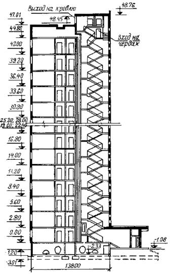
Поперечный разрез жилого дома серии П44/16
Системы дымоудаления и подпора воздуха включаются автоматически по сигналу квартирных тепловых извещателей и от кнопок, установленных в нишах пожарных кранов на каждом этаже.
В качестве дублирующих путей пожарной эвакуации жителей в 2-16-этажах предусмотрены переходы по балконам в смежные секции, а в лоджиях квартир в торцах здания - люки и стремянки в уровне 2-16-го этажей.
Техническое подполье зданий предназначено для внутренних инженерных коммуникаций и предусматривает возможность прокладки транзитных трубопроводов.
2.5. Конструктивная схема домов этой серии - несущие внутренние поперечные стены с шагом 3,0 и 3,6 м. Наружные стеновые панели - навесные. Панели перекрытий опираются на внутренние стены.
2.6. Подземная часть домов запроектирована с применением следующих конструкций:
фундаменты - свайные с монолитными железобетонными ростверками или монолитная железобетонная плита на естественном основании;
наружные стены - железобетонные трехслойные панели толщиной 22 и 28 см, облицованные крупноразмерной глазурованной керамической плиткой;
внутренние стены - бетонные панели толщиной 18 см;
перекрытие - железобетонные плоские панели толщиной 14 см с каналами для электропроводки;
входы в техническое подполье, крыльца и др. - сборные железобетонные элементы.
2.7. Надземная часть жилых домов серии П44/16 решена с применением следующих конструкций:
наружные стены - навесные железобетонные трехслойные панели с утеплителем общей толщиной 28 см. Наружные панели поставляются с окончательной отделкой фасадных поверхностей крупноразмерной глазурованной керамической плиткой с установленными остекленными оконными и дверными балконными блоками и сливами;
внутренние стены - бетонные плоские панели толщиной 14 и 18 см;
перекрытия - железобетонные сплошные плоские панели, размером на комнату, толщиной 14 см, с каналами для электропроводки;
лестницы - из сборных железобетонных маршей с гладкой лицевой поверхностью ступеней и площадок с мозаичными полами;
перегородки - гипсобетонные толщиной 8 см;
шахты лифтов - из объемных железобетонных элементов высотой на этаж, поступающие на стройку с установленными обрамлениями дверных проемов и постоянными дверями в закрытом положении;
санитарные узлы - из полностью отделанных и оборудованных на заводе унифицированных объемных гипсобетонных кабин с железобетонным поддоном;
вентиляционные блоки - гипсобетонные не несущие, высотой на этаж;
электропанели - железобетонные не несущие, высотой на этаж;
лоджии и балконы - железобетонные плиты с опиранием на наружные стены, с экранами ограждений из алюминиевого профиля и гофрированного листа;
крыша - плоская с теплым чердаком и внутренним водостоком. Панели покрытия трехслойные железобетонные с утеплителем, толщиной 20 см, с мастичной безрулонной кровлей, выполняемой на заводе.
Чердак является техническим этажом и в каждой секции служит сборной вентиляционной камерой, объединяющей воздуховоды из кухонь и санузлов квартир с выбросом загрязненного воздуха в атмосферу через общие вытяжные шахты.
2.8. Вертикальные стыки панелей наружных стен выполняются открытого типа с водоотбойной лентой, в лоджиях стыки закрытого типа с герметизацией тиоколовой мастикой АМ-0,5. Кромки панелей наружных стен должны быть покрыты на заводе герметизирующим составом в соответствии с проектом.
Горизонтальные стыки панелей наружных стен приняты открытого типа за исключением балконов и лоджий, где стыки закрытые.
2.9. Горизонтальные стыки панелей перекрытий с внутренними несущими стенами приняты платформенного типа с толщиной шва 10 мм снизу панелей и толщиной 20 мм над панелями перекрытий.
2.10. Все соединения конструктивных элементов выполняются на сварке с применением монтажных металлических связей в соответствии с рабочими чертежами альбомов деталей узлов проекта и требованиями, приведенными в разделе 4 (пп. 4.19-4.24) настоящей инструкции.
2.11. Монтаж конструкций и заделку стыков между сборными элементами подземной и надземной части жилых домов этой серии необходимо выполнять с применением указанных в проекте соответствующих марок бетона и раствора.
При устройстве подземной части домов для монтажа сборных элементов и заделки вертикальных стыков панелей наружных и внутренних стен следует применять цементный раствор марки 200.
При возведении надземной части домов для монтажа сборных элементов и заделки стыков между ними применять цементный раствор для всех этажей марки 150.
2.12. При монтаже жилых домов этой серии необходимо руководствоваться разработанными МНИИТЭПом рабочими чертежами к типовым проектам жилых секций типа П44-1/16 и П44-4/16 (выпуска 1980 г.), альбомами рабочих чертежей деталей узлов (выпуска 1981 г.) по подземной части зданий - альбомы ПДС1 (часть 1-1, часть П/16), по надземной части - альбомы НДС1 (часть 1-1, часть П/16), по чердаку и крыше - альбомы КДС1 (часть 1-1) и др., а также дополнениями к этим альбомам и техническими информациями, выпускаемыми МНИИТЭПом.
3. ОРГАНИЗАЦИЯ СТРОИТЕЛЬСТВА
3.1. Изготовление сборных элементов и монтаж надземной части крупнопанельных жилых домов серия П44/16 осуществляется Домостроительным комбинатом № 1 Главмосстроя.
Работы нулевого цикла, включая монтаж подземной части зданий, выполняются трестами Мосфундаментстрой и другими специализированными организациями Главмосстроя.
3.2. Сборные элементы для подземной части домов изготовляются и комплектно поставляются на строительные площадки Домостроительным комбинатом № 1 и заводами Главмоспромстройматериалов.
3.3. Доставку сборных деталей домов с заводов комбината на строительные площадки следует осуществлять по транспортно-монтажным часовым графикам транспортными средствами Мосстройтранса под оперативным руководством Домостроительного комбината № 1.
3.4. За основу организации строительства 16-этажных крупнопанельных жилых домов этой серии приняты следующие основные положения:
- поточность строительства;
- монтаж сборных элементов подземной и надземной частей домов по часовым графикам с транспортных средств, исключая дополнительную разгрузку и складирование основных изделий на площадке;
- комплектация и централизованная поставка через комплектовочную базу всех материалов и изделий в специальных контейнерах по графикам на каждый объект непосредственно на рабочее место;
- максимальное совмещение работ по монтажу сборных конструкций с внутренними общестроительными и специальными работами, включая монтаж лифтов и отделочные работы.
3.5. Монтаж сборных элементов надземной части домов производится Домостроительным комбинатом № 1 непосредственно с транспортных средств по часовым транспортно-монтажным графикам.
3.6. Пообъектные транспортно-монтажные часовые графики составляются АСУС на основе типовых нормативов, учитывающих прогрессивную технологию возведения зданий и разработанных СПКТБ «Кассетдеталь» в соответствии с типовой технологической последовательностью монтажа конструкций, предусмотренной проектом производства работ.
Комплектуемые материалы и изделия, необходимые в процессе монтажа и в послемонтажный период, а также трубные заготовки и приборы инженерного оборудования должны поставляться по суточным графикам комплектно в контейнерах в соответствии с графиком монтажа основных конструкций здания.
3.7. Сроки выполнения монтажных и других работ по домам данной серии устанавливаются на основании типового решения продолжительности работ по секциям, принятого проектом производства работ, и количества блок-секций в доме.
3.8. Для обеспечения своевременной подготовки фронта и условий для поточного производства работ все работы по возведению жилых домов этих серий разделяются на три основных этапа (кроме подготовительного периода):
- нулевой цикл;
- надземная часть зданий;
- отделочные работы.
На каждом этапе строительства продолжительность выполнения и степень совмещения работ устанавливается проектом производства работ.
3.9. К монтажу конструкций подземной части здания разрешается приступать после выполнения всего комплекса земляных работ, разбивки осей, устройства и приемки свайного основания или монолитных фундаментов.
3.10. До начала работ по возведению надземной части жилого дома должны быть полностью закончены все работы подготовительного и нулевого цикла для данного объекта, включая прокладку всех подземных коммуникаций, произведена планировка прилегающей территории, выполнены постоянные или временные дороги из сборных железобетонных плит, проложены подкрановые пути и установлены необходимые передвижные бытовые помещения, располагаемые вне зоны работы башенного крана.
3.11. При возведении многоэтажных домов основным методом производства работ для объектов в целом и внутри зданий является поточный метод, обеспечивающий равномерную сдачу домов в эксплуатацию в течение года, рациональное использование монтажных механизмов и приспособлений, повышение качества и снижение стоимости строительства.
3.12. Работы по строительству надземной части зданий ведутся по совмещенному графику, по которому параллельно с монтажом конструкций производятся общестроительные и специальные работы, выполняемые не в монтажной зоне. При этом ведущим процессом, определяющим ритм потока во времени, является монтаж сборных конструкций здания. Остальные строительные работы, выполняемые на здании, необходимо подчинить темпу и ритму ведущего процесса.
Выполнение послемонтажных общестроительных, санитарно-технических, электромонтажных и отделочных работ, монтаж лифтов и систем незадымляемости следует производить в технологической последовательности и в ритме монтажа конструкций.
Установку встроенной мебели (шкафов, антресолей и др.), как правило, следует выполнять в процессе отделочных работ, после окраски потолков, оклейки стен обоями и настилки полов. До выполнения этих работ установка встроенной мебели возможна только по согласованию с проектной организацией и заводами-поставщиками.
Взаимную увязку различных видов работ осуществляют в соответствии с календарным графиком проекта производства работ.
3.13. Для совмещенного выполнения монтажных, общестроительных и специализированных работ на корпусе и для безопасного их производства этажи разбиваются на захватки с одинаковыми сроками выполнения работ на них.
За оптимальную захватку принимается одна секция. Количество одновременно монтируемых секций одним монтажным потоком, исходя из условий технологичности монтажа конструкций, трудоемкости, сроков производства работ, обеспечения высокого качества работ и равномерного ввода объектов в эксплуатацию, не должно превышать четырех. При монтаже многосекционных жилых домов этой серии разбивка их на потоки должна производиться с учетом этого фактора (не более 4-х секций на поток), причем поток от потока должен отделяться глухим торцом, что позволяет вводить в эксплуатацию многосекционные дома отдельными частями.
3.14. Внутренние общестроительные и специальные работы, совмещенные с монтажом здания, следует производить с отставанием от монтажных работ в соответствии с проектом производства работ и совмещенным графиком.
При этом внутренние работы и монтаж конструкций по требованиям техники безопасности всегда должны производиться на разных захватках, так как не допускается одновременное выполнение этих работ по одной вертикали независимо от количества смонтированных перекрытий (см. раздел 11).
3.15. Монтаж конструкций и другие строительно-монтажные работы следует осуществлять, как правило, в 3 смены, а специальные - в одну или две смены.
При совмещении монтажных и отделочных работ последние следует выполнять только в 1-2 смены на захватках, над которыми не производится монтаж конструкций.
3.16. Все общестроительные, монтажные и специальные работы должны выполняться комплексными строительно-монтажными и специализированными бригадами и звеньями, обеспечивающими одинаковую продолжительность работ на захватках.
В составе монтажного потока, по расчету нормативно-исследовательской станции ДСК № 1, должны состоять комплексная строительно-монтажная бригада, включающая монтажников конструкций, электросварщиков, бетонщиков, изолировщиков, плотников, штукатуров, машинистов башенного крана и др.; бригады слесарей-сантехников и электромонтажников, звенья изолировщиков по термоизоляции, электромонтажников по монтажу систем незадымляемости, а также дежурные транспортные рабочие, слесари и электромонтеры.
Рекомендуемый численный и профессионально-квалификационный состав бригад и звеньев монтажного потока для возведения жилых домов этой серии приведен в приложении 2.
При монтаже конструкций звено монтажников должно включать не менее трех монтажников конструкций, такелажника (стропальщика), электросварщика и дежурного электромонтера, а при монтаже панелей наружных стен в составе звена должен быть еще и изолировщик для герметизации стыков.
Для рационального использования рабочего времени членов комплексной бригады рекомендуется совмещение профессий.
3.17. Монтаж конструкций подземной части домов этой серии рекомендуется производить кранами на рельсовом ходу, предназначенными для выполнения работ нулевого цикла, а монтаж надземной части зданий - башенными кранами.
Рекомендуемые для монтажа жилых домов этой серии типы кранов и их основные параметры приведены в разделе 9 (пп. 9.1-9.3) настоящей «Инструкции».
3.18. Многосекционные здания длиной более 4-х секций (в зависимости от количества секций, их типа и расположения в плане) следует монтировать двумя или более башенными кранами, расположенными с одной стороны здания (см. п. 3.13).
При монтаже здания несколькими башенными кранами или при примыкании монтируемой части здания к ранее построенной, должны приниматься специальные требования по повышению безопасности работ, которые должны быть предусмотрены проектом производства работ.
Так как кабина башенного крана находится на большой высоте, между крановщиком, такелажником и монтажниками должна быть устроена надежная радио - или громкоговорящая связь или же организована сигнализация флажками.
3.19. Башенные краны следует, как правило, располагать со стороны главного фасада, не имеющего входов в здание (рис. 4). В виде исключения и только с разрешения руководства домостроительного комбината допускается установка башенного крана со стороны дворового фасада. В этом случае входы на лестничные клетки со стороны крана необходимо закрыть и входы в каждую секцию здания организовать со стороны главного фасада с обязательным соблюдением требований техники безопасности.
В связи с применением для монтажа жилых домов этой серии тяжелых башенных кранов и возможных просадок грунта, не следует допускать установку их на проложенные инженерные сети глубокого заложения.
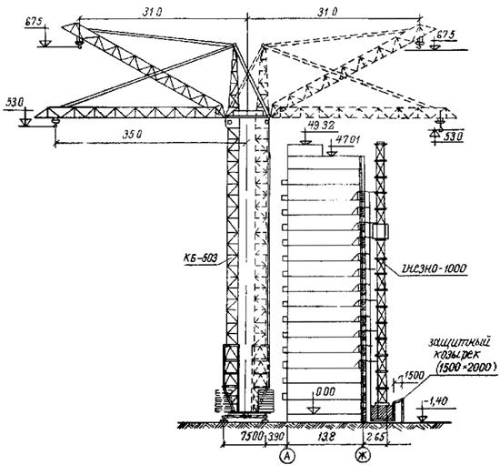
Схема
установки башенного крана и грузопассажирского подъемника
при монтаже надземной части жилых домов серии П44/16
3.20. Для подъема и спуска рабочих на этажи в период монтажа и отделки здания и для подачи строительных материалов применяются грузопассажирские и грузовые подъемники (например, ГНЕЗНО-1000, ПГС-800-16, С-953 и др.). Типы подъемников, количество и места их установки принимаются в соответствии с проектом производства работ. При этом на каждый монтажный поток устанавливается не менее одного грузопассажирского подъемника.
Грузопассажирские подъемники должны устанавливаться до начала монтажа 6-го этажа и наращиваться по ходу возведения здания, обеспечивая подъем рабочих и грузов на монтируемые этажи.
Грузовые подъемники устанавливаются в сроки, определяемые проектом производства работ на отделочные работы.
Площадки вокруг установленных подъемников ограждаются инвентарными ограждениями, а сверху мачт подъемников устанавливаются предупредительные красные сигналы.
При установке подъемников и их эксплуатации запрещается нарушать конструкцию оконных блоков. Одновременная работа подъемника и башенного крана на одной захватке не допускается (см. раздел 11, п. 11.39).
Работа подъемников и башенного крана на каждом монтируемом доме должна быть строго регламентирована в проекте производства работ.
3.21. Приобъектную монтажную площадку следует устраивать в соответствии со стройгенпланом проекта производства работ до начала выполнения монтажных работ на корпусе. Типовой стройгенплан должен быть привязан к местным условиям возводимого дома.
Территория строительной площадки должна быть ограждена временным инвентарным забором. На площадке должны быть вывешены необходимые предупредительные знаки. Площадки для складирования строительных материалов и деталей следует очистить от мусора, хорошо спланировать и утрамбовать. Складская площадка должна располагаться не ближе 1,5 м от ограждения подкранового пути. Территория площадки, проходы, проезды и рабочие места должны быть освещены в соответствии с существующими требованиями. Освещение рабочих мест на захватках обеспечивается прожекторами, установленными на переносных поэтажных прожекторных вышках, а освещение складской площадки, проходов и проездов - прожекторами, установленными на инвентарных опорах.
3.22. Подкрановые пути следует устраивать из инвентарных усиленных звеньев в соответствии с требованиями СН 78-79.
На расстоянии 1,5 м от концов подкранового пути и по обоим его торцам устанавливаются тупиковые опоры. Подкрановый путь должен быть заземлен в соответствии с инструкцией СН 102-76.
Подкрановый путь следует ограждать инвентарными временными ограждениями высотой 1,0 м.
Во время работы крана следует вести постоянное наблюдение за состоянием подкранового пути.
3.23. На стройгенплане каждого монтируемого дома (рис. 5) должно быть показано расположение:
- постоянных и временных дорог и площадок для стоянки панелевозов во время разгрузки; направление движения автотранспорта;
- монтажных кранов, грузопассажирских и грузовых подъемников, подкрановых путей и их инвентарных ограждений, а также границы опасных зон;
- площадок для складирования строительных материалов, сборных изделий и оборудования, а также для расстановки контейнеров с изделиями и материалами;
- необходимого для каждого потока инвентаря, оборудования и монтажной оснастки;
- временных сооружений, а также их перечень.
3.24. Для размещения рабочих и инженерно-технических работников во время строительства необходимо использовать типовые инвентарные временные сооружения (передвижные фургоны), располагаемые в соответствии со стройгенпланом.
Бытовые временные помещения должны располагаться вне зоны работы крана на специально отведенной площадке.
3.25. При транспортировке изделий и материалов на строительные площадки необходимо, как правило, использовать постоянные дороги и проезды. Ширина дорог должна быть не менее 4,2 м при одностороннем движении и не менее 6,0 м при двустороннем. Минимальный радиус закругления дорог при условии проезда по ним крупногабаритных машин должен быть не менее 18 м (радиус рассчитывают по внутренней границе закругления дороги).
3.26. В местах разгрузки панелевозов у монтируемого корпуса при сквозном проезде и ширине проезжей части менее 6 м необходимо устраивать из сборных железобетонных плит уширение дороги (до 6 м) длиной 30-40 м, а при отсутствии сквозного проезда - дополнительную площадку из сборных плит, рассчитанную для одновременной стоянки трех отцепных панелевозов.
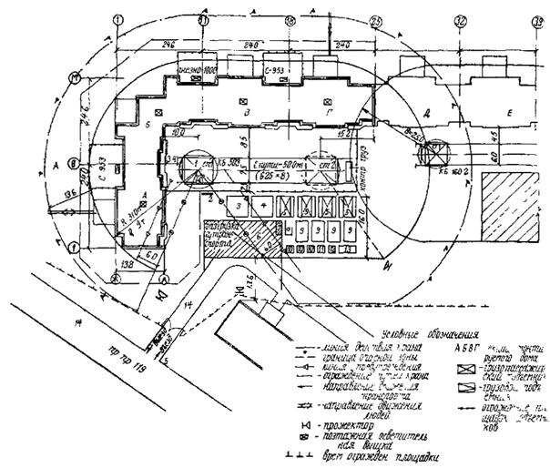
Схема стройгенплана на
период монтажа
надземной части жилого дома серии П44/16:
1 - башенный кран КБ-503; 2 - стенд со схемами строповки изделий; 3 - площадка для лифтового оборудования; 4 - площадка для сантехкабин; 5 - склады-пирамиды для стеновых панелей; 6 - площадка для разгрузки автотранспорта; 7 - площадка для раствора и бетона; 8 - площадка для грузозахватных приспособлений; 9 - площадки для складирования железобетонных изделий; 10 - лари для цемента, гипса, пакли; 11 - контейнер для гернита; 12-контейнер с вентблоками; 13 - контейнеры сантехнических материалов; 14 - постоянные дороги
Временные дороги и площадки из инвентарных железобетонных плит следует устраивать до начала основных работ по строительству жилого дома.
3.27. При монтаже многоэтажных жилых домов этой серии строительный мусор и отходы с этажей и крыши опускают башенным краном в освободившихся из-под раствора закрытых ящиках и разгружают в специальный бункер-накопитель (БН-2), расположенный на площадке в зоне работы крана, с последующей транспортировкой его на специальной автомашине марки СА-2 (МосжилНИИпроект).
При выполнении отделочных и специальных работ внутри здания строительный мусор удаляют с этажей с помощью тележки на пневмоходу вместимостью 0,12 м3 (черт. № 2751 СКБ «Мосстрой»), отпускают вниз подъемником и разгружают в бункер-накопитель (БН-2).
Запрещается сбрасывать строительный мусор и отходы с перекрытий через окна, балконы и лоджии, а также с крыши.
4. ОБЩИЕ ТРЕБОВАНИЯ К СБОРНЫМ ИЗДЕЛИЯМ, СКЛАДИРОВАНИЮ И МОНТАЖУ СБОРНЫХ ЭЛЕМЕНТОВ
4.1. При монтаже крупнопанельных жилых домов серии П44/16 используются сборные изделия «Каталога унифицированных индустриальных изделий для строительства в г. Москве», отвечающие требованиям ГОСТов (см. приложение 3) и соответствующих Технических условий на их изготовление.
Контроль качества и точности изготовления изделий осуществляется ОТК заводов-изготовителей. На изделиях должен стоять штамп ОТК завода, подтверждающий соответствие изделий требованиям ГОСТов и технических условий.
Кромки панелей наружных стен в местах, предусмотренных чертежами изделий и узлов проекта, должны быть покрыты на заводе герметизирующим составом в соответствии с проектом.
4.2. Сборные изделия, поставляемые на строительную площадку, проверяются инженерно-техническими работниками строительного объекта путем проверки соответствия паспортных данных проектным и визуально. Изделия должны иметь паспорт, хорошо видимую маркировку и штамп ОТК завода с датой изготовления, нанесенные несмываемой краской.
Изделия, качество которых при внешнем осмотре вызывает сомнение, контролируют более тщательно, проверяя соответствие качества изделия требованиям ГОСТа или технических условий.
4.3. При приемке сборных элементов особое внимание следует обращать на наличие трещин и повреждений (околов), наличие и правильное расположение отверстий, закладных деталей и подъемных петель, да качество поверхностей изделий и соответствие цвета поверхности наружных панелей утвержденному эталону. Необходимо также проверять наличие противокоррозионных покрытий на открытых поверхностях закладных стальных деталей, предусмотренных проектом.
Подъемные петли должны быть без разрывов и других изъянов и соответствовать проекту по марке стали, размерам и положению в изделии.
4.4. При обнаружении дефектов, превышающих установленные допуски, необходимо вызвать представителя ОТК завода и составить акт о выбраковке изделия. Забракованные при приемке изделия должны быть немедленно заменены заводом-изготовителем.
4.5. Транспортировку и складирование сборных изделий следует производить в соответствии с требованиями ГОСТов и Технических условий на эти изделия (см. приложение 3).
При транспортировании и складировании панелей наружных стен в целях предохранения от повреждения зуба, выступающего из нижней грани, необходимо:
панели опирать на деревянные продольные бруски или прокладки размером не менее 500´200´100 мм (100 - высота h), располагаемые под центрами простенков;
в панелях без проемов ставить по две такие прокладки, располагаемые по линии подъемных петель.
Панели наружных стен с готовыми отделанными поверхностями при транспортировании и складировании следует предохранять от загрязнения, а гипсобетонные изделия (перегородки, вентблоки, сантехнические кабины и др.) необходимо защищать от увлажнения. Необходимые меры, предупреждающие загрязнение поверхностей и увлажнение изделий при транспортировании, должны согласовываться между ДСК № 1 и Мосстройтрансом.
4.6. Сборные изделия должны комплектоваться на заводах-изготовителях на транспортные средства с учетом принятой в проекте производства работ технологической последовательности монтажа. Доставка всех сборных элементов обеспечивается транспортными средствами специального технологического транспорта.
4.7. Строповка элементов конструкций на строительной площадке должна производиться по типовым схемам строповок изделий с применением грузозахватных приспособлений, предусмотренных проектом производства работ. Типовые схемы строповки изделий, контейнеров и инвентаря должны быть вывешены на видном месте на специальном стенде.
4.8. Погрузочно-разгрузочные работы необходимо выполнять под руководством ответственных инженерно-технических работников за безопасное производство работ по перемещению грузов кранами. Они обязаны следить за применением безопасных способов производства погрузочно-разгрузочных работ, исправным состоянием грузозахватных приспособлений, тары и складского инвентаря, правильным размещением элементов на складе и сохранностью их при складировании и подъеме для монтажа.
4.9. К строповке элементов допускаются только лица, имеющие удостоверения на право производства этого вида работ. Запрещается подмена такелажников (стропальщиков) неподготовленными рабочими. Такелажник, работающий на разгрузке и строповке изделий, должен иметь отличительный знак - нарукавную красную повязку.
Такелажник перед подъемом детали обязан проверить ее качество (состояние подъемных петель, отсутствие трещин, околов кромок и пр.) и удостовериться в безопасности подъема. При обнаружении дефектов в изделиях такелажник обязан немедленно сообщить об этом мастеру (производителю работ).
4.10. Приобъектная складская площадка должна быть организована с учетом производства монтажа с транспортных средств, расположена в зоне действия крана и предназначена для размещения:
- контейнеров с малогабаритными изделиями, элементами и материалами;
- контейнеров для монтажных приспособлений, ларей для инструмента, закладных деталей, емкостей для сухой смеси и другого инвентаря;
- складов-пирамид для хранения необходимого запаса стеновых панелей и перегородок в пределах до 10 % сменной потребности;
- площадок для приема раствора и бетона и хранения грузозахватных приспособлений.
Площадка должна быть очищена от мусора, тщательно спланирована и уплотнена. С площадки должен быть обеспечен отвод поверхностных вод.
4.11. При складировании изделий на приобъектной площадке должны соблюдаться следующие требования:
- складирование сборных изделий следует производить раздельно по видам и маркам;
- раскладка изделий должна производиться с учетом последовательности монтажа. Изделия, имеющие большой вес или парусность, должны размещаться ближе к монтажному крану;
- хранение изделий должно производиться в условиях, исключающих возможность их деформирования и загрязнения, а также просадку грунта в период оттаивания.
При хранении изделий в горизонтальном положении в штабелях нижний ряд изделий следует укладывать на деревянные подкладки, уложенные по выровненному основанию, прокладки всех вышележащих рядов должны быть расположены строго по вертикали одна над другой. Размеры прокладок не должны допускать повреждения выступающих подъемных петель нижерасположенных изделий. Складирование изделий без прокладок не разрешается;
- ширина проходов между штабелями изделий, складами-пирамидами и контейнерами должна быть не менее 1 м;
- изделия следует размещать так, чтобы их заводская марка была видна со стороны прохода или проезда, а монтажные петли изделий были свободными для строповки;
- при погрузке и разгрузке панелей в склады-пирамиды следует обеспечивать равномерную загрузку панелей с обеих сторон пирамиды во избежание ее опрокидывания.
4.12. В проектах производства работ необходимо приводить полные перечни монтажной оснастки, грузозахватных приспособлений и инвентаря для выполнения всех монтажных и такелажных работ, а также типовые схемы строповок изделий, контейнеров и инвентаря, принятые для домов данной серии.
4.13. До начала монтажа сборных конструкций необходимо:
- оснастить строительную площадку монтажными и такелажными приспособлениями и инвентарем, предусмотренными проектом производства работ и испытанными в соответствии с действующими Техническими правилами;
- завершить устройство подкранового пути и подготовить монтажный кран к эксплуатации;
- закончить устройство дорог, проездов и площадки для отцепных панелевозов для доставки на стройплощадку сборных изделий и материалов;
- обеспечить наличие на объекте полного перечня проектной документации, проектов производства работ, необходимых инструкций и нормативных документов, а также журналов работ, журналов по контролю качества работ и техники безопасности. Подготовить папку с комплектами актов на скрытые работы и поэтажной приемки;
- инженерно-техническим работникам стройки детально изучить проектную документацию и ознакомить членов комплексной бригады с рабочими чертежами, проектом производства работ и технологическими картами;
- оформить приказы на ответственных лиц (за безопасное производство работ по перемещению грузов кранами, за исправное состояние съемных грузозахватных приспособлений и тары и др.).
4.14. При монтаже сборных конструкций необходимо обеспечить:
- последовательность монтажа и установки удерживающих смонтированные элементы приспособлений, которые обеспечивают устойчивость и геометрическую неизменяемость смонтированной части здания на всех стадиях монтажа, и прочность монтажных соединений;
- комплектность установки конструкций, позволяющую производить на смонтированной части здания (захватке, этаже) последующие работы;
- безопасность монтажных, общестроительных и специальных работ на объекте с учетом выполнения их по совмещенному графику.
4.15. Перед подъемом сборных элементов необходимо:
- очистить изделия от грязи, зимой - от наледи и снега, а металлические закладные детали - от наплыва бетона и ржавчины;
- проварить правильность расположения монтажных петель и других закладных металлических изделий;
- проверить правильность и надежность строповки каждого подаваемого к монтажу элемента.
4.16. Изделия необходимо поднимать с помощью инвентарных грузозахватных приспособлений (траверс, стропов, захватов и др.), которые крепятся за все подъемные петли в соответствии со схемами строповок, указанными в проекте производства работ.
Строповку панелей из складов-пирамид следует выполнять последовательно, начиная с крайних рядов.
Строповка элементов конструкций должна обеспечивать их подачу к месту монтажа в положении, соответствующем проектному.
4.17. При монтаже сборных конструкций необходимо:
- поднимать и перемещать конструкции плавно, без рывков, раскачивания и вращения;
- подъем конструкций осуществлять в два приема: сначала на высоту 20-30 см и после проверки надежности строповки производить дальнейший подъем;
- не допускать толчков и ударов монтируемого элемента по другим ранее установленным конструкциям;
- поданные к месту установки сборные элементы, контейнеры и инвентарь опускать и принимать на высоте 30 см от уровня их установки;
- не допускать опускания труб мусоропроводов, вентблоков и других элементов более чем на один этаж;
- устанавливать элементы непосредственно на опорные места в соответствии с принятыми допусками;
- не освобождать устанавливаемый элемент от крюка монтажного крана до надежного постоянного или временного закрепления;
- до окончательного закрепления тщательно выверять правильность установки конструкций и приводить их в проектное положение;
- освобождать установленные элементы от временных креплений только после постоянного их закрепления, предусмотренного проектом;
- не допускать смещения установленных элементов после выверки их положения и снятия стропов.
4.18. Устройство постоянных соединений сборных элементов, осуществляемых при помощи металлических прокладок (связей) на электросварке, должно выполняться сразу за монтажом конструкций.
Запрещается оставлять после окончания смены на временных креплениях конструкции, закладные детали которых подлежат электросварке, за исключением отдельных случаев, предусмотренных проектом производства работ или технологическими картами.
4.19. Соединение элементов конструкций здания необходимо выполнять в соответствии с рабочими чертежами узлов и деталей проекта и технологическими картами.
Не разрешается вносить какие-либо изменения в конструкцию узлов примыканий, а также допускать применение подкладок, прокладок или вставок, не предусмотренных чертежами, без предварительного согласования с проектной организацией.
4.20. До устройства постоянных креплений элементов следует проверять правильность установки элементов конструкций и положения соединяемых деталей в соответствии с проектом.
4.21. Сварочные работы необходимо выполнять в строгом соответствии с проектом и требованиями «Инструкции по сварке соединений арматуры и закладных деталей железобетонных конструкций» (СН 393-78 Госстрой СССР, 1978 г.), а также в соответствии с Технологическими указаниями по сварке узлов примыканий железобетонных элементов панельных зданий этой серии, разрабатываемых трестом Мосоргстрой.
Эти работы должны производиться квалифицированными электросварщиками, имеющими соответствующие удостоверения. Применяемые электроды типа Э-42 должны удовлетворять требованиям ГОСТ 9466-75 и ГОСТ 9467-75 и иметь требуемое покрытие.
Выполняемые сварочные работы должны регулярно фиксироваться ИТР стройки в специальном журнале сварочных работ.
4.22. В конструкциях наружных ограждений, лоджий и балконов, включая конструкции крыши и машинных помещений лифтов, долговечность сварных соединений сборных элементов между собой и с элементами внутренних конструкций, примыкающими в наружных стыках, должна обеспечиваться специальными мерами по противокоррозионной защите в соответствии с «Инструкцией по проектированию и производству противокоррозионной защиты стальных связей полносборных жилых, общественных и культурно-бытовых зданий с нормальными температурно-влажностными условиями эксплуатации» - ВСН141-77 (Главмосстрой), «Указаниями по восстановлению после сварки противокоррозионной защиты стальных связей панелей комбинированным покрытием» - ВСН106-75 (Главмосстрой) и главой СНиП II-28-73* «Защита строительных конструкций от коррозии» (1980 г.). Монтажные связи в узлах, указанных в проекте, должны применяться оцинкованными и иметь марку с индексом «Ц».
Толщина слоя металлизации в узлах балконов, лоджий и козырьков должна быть 0,12-0,18 мм, а в стыках наружных стен - 0,05-0,06 мм.
Монтажные связи временного назначения защите цинком не подлежат.
Сварные оцинкованные соединения должны быть защищены от коррозии протекторным грунтом ХВ-31 на лаке ХВ-784. На монтаже после сварочных работ и подготовки поверхности металла цинковый протекторный грунт марки ХВ-31 наносят на поверхности сварного узла после соответствующей зачистки и обезжиривания. Толщина слоя протекторного грунта должна быть не менее 0,12-0,15 мм (при замере на сварном шве). Сварные узлы, оцинкованные слоем 0,12-0,18 мм, окрашивают только в зоне сварного шва, а оцинкованные слоем 0,05-0,06 мм - по всей поверхности, доступной для окраски.
4.23. Все сварные соединения следует поэтажно сдавать техническому и авторскому надзору в соответствии с требованиями Госархстройконтроля.
4.24. После приемки, до окончания работ на данном монтажном горизонте, все места сварных соединений, включая металлические связи, должны быть тщательно заделаны цементным раствором в соответствии с решениями узлов проекта.
4.25. При монтаже конструкций размеры горизонтальных и вертикальных стыков и толщина швов между сборными элементами, а также их заделка должны выполняться в соответствии с решениями узлов проекта.
Марки бетона и раствора должны соответствовать проектным.
Раствор следует расстилать на опорные поверхности сплошным слоем непосредственно перед монтажом элементов и плотно обжимать в горизонтальных стыках под действием массы устанавливаемых элементов.
При монтаже сборных элементов следует не допускать образования пустых или частично не заполненных швов. При наличии таких мест на небольших участках швов их необходимо тщательно подчеканить свежим раствором в процессе монтажа элемента.
После окончания монтажа элементов выдавливаемые из горизонтальных швов излишки раствора следует зачищать заподлицо с лицевыми поверхностями монтируемых элементов.
4.26. Для монтажа сборных элементов и заделки стыков следует применять пластичный цементный раствор, приготовляемый непосредственно на объекте из готовых сухих смесей, или приготовляемый централизованно и доставляемый на объекты специализированным автотранспортом.
Приготовление раствора на строительных площадках следует производить на инвентарных растворных узлах.
Раствор, применяемый при монтаже сборных элементов, должен быть пластичным, удобоукладываемым (подвижность характеризуется глубиной погружения на 6-7 см в раствор конуса СтройЦНИЛа). Его следует использовать до начала схватывания и не более чем через два-три часа после приготовления.
Категорически запрещается разбавлять раствор водой и применять его в таком виде для монтажных работ.
4.27. Монтаж панелей несущих наружных и внутренних стен, объемных элементов шахт лифтов, опорных стенок чердака и др. следует производить по маякам и по заранее вынесенным на перекрытие ориентирным рискам (см. раздел 5).
Маяки из цементного раствора или гипса устанавливают по нивелиру в соответствии с отметками монтажного горизонта.
4.28. Выступающие подъемные петли в сборных элементах после монтажа конструкций срезаются заподлицо с поверхностью изделий. Подъемные петли, находящиеся в лунках, не срезаются и лунки заделываются цементным раствором. Гнезда заделываются в соответствии с решениями узлов проекта.
При монтаже элементов, имеющих каналы (вентблоки, электроблоки, блоки инженерных коммуникаций), необходимо принимать меры для предохранения каналов от попадания в них раствора в стыках.
4.29. Особое внимание необходимо уделять правильному в соответствии с проектом и качественному заполнению стыков между стеновыми панелями, панелями покрытия, а также между другими сборными элементами; при этом необходимо обеспечивать требуемую плотность, непродуваемость и водонепроницаемость стыков.
Герметизацию стыков элементов наружных ограждений следует производить особо тщательно в соответствии с решениями рабочих чертежей альбомов деталей узлов проекта и требованиями «Указаний по герметизации стыков при монтаже полносборных зданий» (ВСН 15-75), а также в соответствии с положениями настоящей «Инструкции» (см. раздел 8).
5. ТРЕБОВАНИЯ К ТОЧНОСТИ ГЕОДЕЗИЧЕСКОЙ РАЗБИВКИ И ВЫВЕРКИ КОНСТРУКЦИЙ ПРИ МОНТАЖЕ
5.1. Для определения на местности положения строящегося здания в плане и по высоте заказчик обязан создать геодезическую разбивочную основу (ГРО) (рис. 6).
5.2. Геодезические работы по созданию геодезической разбивочной основы на исходном горизонте следует выполнять с точностью 2-р класса (СНиП III-2-75).
Допускаемые средние квадратические погрешности не должны превышать при:
- измерении углов - 10²;
- измерении линий - 1¸15000;
- вынесении или определении отметок - 2 мм.
5.3. Не менее чем за 10 дней до начала строительно-монтажных работ заказчик обязан передать генподрядчику техническую документацию на ГРО и закрепленные на площадке строительства пункты и знаки этой основы, в том числе:
- оси, определяющие положение и габариты здания в плане, закрепленные створными знаками в количестве не менее 4-х на каждую ось (оси 3,33, А и К);
- оси, ограничивающие захватки монтажа в рассматриваемом примере (ось 18);
- реперы в количестве не менее 2-х, расположенных по разные стороны от здания (Rp1 и Rp2, см. рис. 6).
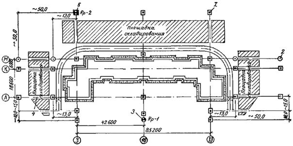
Схема размещения геодезической разбивочной основы:
1 - знак постоянного закрепления оси на местности; 2 - знак временного закрепления оси на местности; 3 - знак постоянного закрепления отметок; 4 - разрывы шириной 1-1,5 м; 5 - знак закрепления отметок, совмещенный со знаком закрепления оси
5.4. Для сохранности знаков места их расположения необходимо оградить деревянными обносками.
5.5. Пункты ГРО следует закреплять бетонными знаками. Конструкция знаков закрепления приведена на рис. 7.
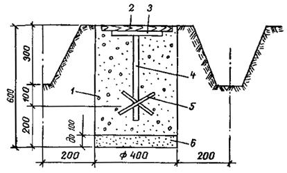
Грунтовой знак закрепления осей:
1 - бетон марки 100; 2 - крышка (дерево); 3 - пластина металлическая; 4 - стержень стальной; 5 - металлическая пластина, приваренная к стержню; 6 - песок
Примечание. Знаки ГРО должны в процессе строительства находиться под наблюдением за их сохранностью. Во время возведения здания наблюдение за сохранностью знаков, передача их в натуре и по акту субподрядным организациям должна производиться геослужбами трестов фундаментостроения.
5.6. Геодезические разбивочные работы на монтажных горизон-класса (СНиП III-2-75). Допускаемые средние квадратические погрешности не должны превышать при:
- измерении углов - 20";
- переносе осей да монтажные горизонты - 1 : 5000;
- вынесении или определении отметок - 2 мм.
5.7. Закрепление следует произвести окраской на панелях перекрытия. Рекомендуемые типы окрасок приведены на рис. 8.
Примечания. 1) Отклонения размеров между крайними разбивочными осями по длине и ширине здания не должны отличаться от проектного на величину более 1 : 5000;
2) отклонение размера между двумя смежными осями от проектного не должно быть более 1 мм.
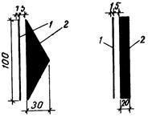
Маркировка осей и отметок на конструкциях:
1 - карандашная риска; 2 - трудносмываемая окраска
5.8. Перенос осей при возведении нулевого цикла следует производить теодолитами на инвентарные металлические скамейки (чертеж № 4264М треста Мосоргстрой) или смонтированные железобетонные конструкции.
5.9. По окончании строительно-монтажных работ по подземной части здания геослужбам трестов фундаментостроения следует составлять исполнительные схемы смонтированных конструктивных элементов. Со схемами должны быть ознакомлены геослужбы ДСК.
Приемке-передаче геодезических работ подлежат в натуре и по акту знаки закрепления осей и реперы. Допускается осевые знаки и высотные отметки закреплять на ранее смонтированных элементах трудносмываемой краской.
5.10. На все ранее смонтированные несущие элементы подземной части должны быть составлены и подписаны у авторского надзора схемы исполнительных съемок. Правильность составления исполнительных схем должны проверять совместно геослужбы приступающей к монтажу надземной части здания и окончившей работы по возведению подземной части здания организаций.
Количество контрольных измерений должно быть не менее в плане: пять панелей стен и лифтовая шахта на каждую секцию дома; по высоте: одна отметка опорной поверхности на каждые 50 кв. м сдаваемого участка.
5.1. Перенос осей на монтажные горизонты следует производить с применением зенит-приборов через специальные отверстия в панелях перекрытий.
Рекомендуемая схема точек базисной осевой системы (БОС), состоящая из 4-х пар точек, закрепленных на перекрытии над техподпольем и монтажном горизонте, приведена на рис. 9 и 10.
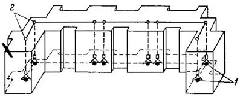
Схема расположения точек БОС для здания с угловыми секциями:
1 - БОС на исходном горизонте; 2 - БОС на монтажном горизонте
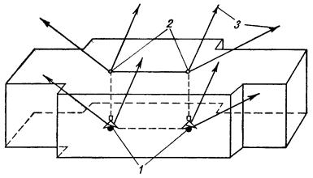
Схема расположения точек БОС рядовой секции:
1 - БОС на исходном горизонте; 2 - БОС на монтажном горизонте; 3 - ориентирные направления
Привязки к осям отверстий для вертикального переноса осей, а также схема расположения отверстий в панелях перекрытий должны приводиться в ППГР.
5.12. Если по технологии монтажа в захватку входят менее 3-х базисных точек, то при создании (БОС) следует выбирать ориентирные направления. В качестве ориентиров следует выбирать удаленные не менее чем да 0,1 км от корпуса отчетливо видимые предметы на местности. Видимость на принятый ориентир должна сохраняться со всех монтажных горизонтов в любых метеоусловиях. При одновременном монтаже более 2-х секций допускается перенос неполной базисной системы с исходного горизонта на монтажный. При этом количество переносимых точек должно обеспечивать контроль правильности переноса (расстояния между точками БОС и азимутальное ориентирование).
До начала монтажа стеновых панелей следует производить выравнивание монтажного горизонта.
Под каждую устанавливаемую стеновую панель следует нивелировать две точки. Места расположения точек нивелирования и устройства маяков приведены на рис. 11.
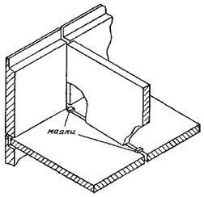
Схема установки маяков под монтаж стеновых панелей
5.14. Нивелирование следует выполнять в условной системе высот.
По данным нивелирования вычисление отметки монтажного горизонта Нср следует выполнять по формуле (1):
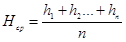
где n - число нивелируемых точек;
h1; h2 - отсчеты по рейке.
Определение фактического отклонения (высоты маяка) Vi каждой нивелируемой точки от отметки монтажного горизонта следует производить по формуле (2):
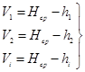
5.15. В точках нивелирования перекрытий, где фактические отметки превышают отметку монтажного горизонта Нср на величину более 10 мм, высоты маяков следует уменьшать до минимально допустимого (5 мм).
Это следует отметить краской на перекрытии: +5 мм (толщина растворной постели). Монтажники и ИТР участка должны быть осведомлены об этом.
Регулирование по высоте в этих местах необходимо производить за счет уменьшения толщины растворной постели, расстилаемой по верхней грани стеновой панели (до 5 мм).
5.16. В точках нивелирования, где фактические отметки Vi, занижены относительно отметки монтажного горизонта Нср, маяки разрешается устанавливать до максимально допустимой высоты (+30 мм).
5.17. В точках нивелирования стыков панелей перекрытий и наружных стеновых панелей маяки более 25 мм устанавливать не допускается. Маяки максимальной высоты (25 мм) следует устанавливать только в местах наибольшего занижения стыков панелей перекрытий и наружных стеновых панелей перекрытий.
5.18. Регулирование остальных наружных стеновых панелей по высоте следует вести только за счет уменьшения горизонтальных швов смежных панелей. Пример записи нивелирования приведен на рис. 12.
5.19. При нивелировании длина визирного луча не должна превышать 40 м, за доходную точку нивелировки следует принять любую выступающую из перекрытия металлическую закладную деталь.
Отсчеты по рейке, установленной на исходной точке, следует брать по черной и красной сторонам дважды (до начала и до окончании нивелирования). Разность отсчетов по рейке, установленной на исходной точке, по одноименным сторонам должна быть не более 3 мм.
5.20. Выравнивание монтажного горизонта следует производить на каждом этаже.
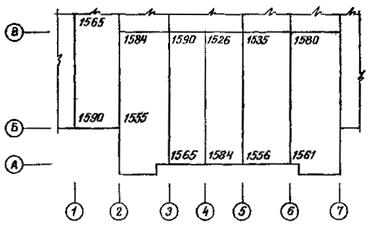
Пример записи нивелирования
Колебания отметок монтажного горизонта не должны превышать величин, указанных в табл. 2.
|
Наименование отклонений |
Величина предельных отклонений в мм |
|
Разность отметок верха опорных площадок панелей перекрытий каждого этажа в пределах выверяемого участка при установке по маякам |
10 |
|
Разность отметках опорных поверхностей двух смежных стеновых панелей (при проверке по верху и установке по маякам) |
10 |
5.21. Монтаж стеновых панелей следует производить от ориентирных рисок.
Разметку ориентирных рисок необходимо выполнять от точек базисной осевой системы на монтажном горизонте (рис. 13).
Схемы размещения рисок должны приводиться в ППГР на разбивочных схемах. Ориентирные риски для монтажа следует указывать для всех несущих и ограждающих стеновых панелей, а также лифтовых шахт и сантехкабин.
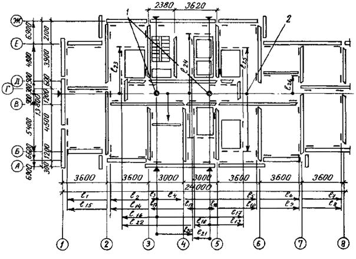
Схема разметки ориентирных рисок:
1 - точки БОС; 2 - линии, от которых производится разбивка
5.22. Для каждой стеновой панели следует наносить три риски: две в продольном направлении и одну в поперечном (рис. 14).
Продольные ориентирные риски необходимо смещать на величину привязки панели к оси плюс 200 мм.
Ориентирные риски в поперечном направлении необходимо смещать от торцов устанавливаемых панелей на 200 мм.
5.23. При нанесении ориентирных рисок следует соблюдать однообразие в смещении на всех этажах.
Рис. 14
Схема нанесения на перекрытие ориентирных рисок до монтажа стеновых панелей:
1 - рейка с уровнем (конструкция ДСК № 1); 2 - продольные ориентирные риски; 3 - поперечные ориентирные риски
5.24. Установку панелей в проектное положение в нижнем сечении следует производить по риске с использованием перпендикулярно образного шаблона. Величина нижней горизонтальной планки, как правило, принимается равной 200 мм. Выверку стеновых панелей в отвесном положении следует выполнять рейкой с уровнем или отвесом.
5.25. Предельные отклонения при монтаже стеновых панелей приведены в табл. 3.
|
Наименование отклонений |
Величина предельных отклонений в мм |
|
Смещение граней панелей стен относительно ориентирных рисок в нижнем сечении |
5 |
|
Отклонение плоскостей стеновых панелей в верхнем сечении от вертикали (на высоту этажа) |
10 |
|
Несоосность двух смежных по высоте стеновых панелей |
15 |
_____________
* Извлечение из СНиП III-16-80 и «Требований к точности геометрических параметров жилых домов серии П44/16», РМ-1492, изд. МНИИТЭП ГлавАПУ г. Москвы.
5.26. Ориентирование при установке объемных элементов лифтовых шахт следует производить от ориентирных рисок.
Для каждого объемного элемента лифтовой шахты следует выносить Ориентирные риски двух взаимно перпендикулярных стен (рис. 15).
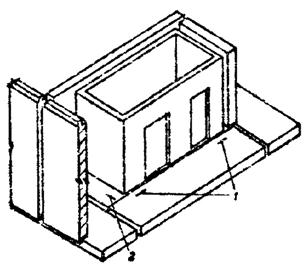
Схема расположения
ориентирных рисок
при установке объемных элементов шахт лифтов:
1 - риски в продольном направлении; 2 - риска в поперечном направлении
5.27. Проверку правильности установки объемных элементов лифтовых шахт, сантехнических кабин следует производить аналогично проверке стеновых панелей (п. 5.21).
5.28. Выравнивание монтажного горизонта выполнять установкой маяков. Высоты маяков необходимо вычислять по результатам нивелирования. Предельные отклонения при монтаже объемных элементов лифтовых шахт приведены в табл. 4 и согласованы с МНИИТЭПом.
Примечание. Низ дверного проема объемного элемента лифтовой шахты следует устанавливать на 20 мм ниже отметки лестничной панели перекрытия.
|
Наименование отклонений |
Величина предельных отклонений в мм |
|
Отклонение от ориентированных рисок передних стенок лифтовых шахт в нижнем сечении |
5 |
|
Отклонение от вертикали передней и боковой стенок лифтовой шахты |
10 |
|
Отклонение по высоте порога дверного проема относительно посадочной площадки |
±10 |
|
Отклонение внутренней плоскости стен ствола шахты от отвесной линии на высоту шахты |
20 |
_____________
* Извлечение из СНиП III-16-80 и «Требований к точности геометрических параметров жилых домов серии П44/16», РМ-1492, над МНИИТЭП ГлавАПУ г. Москвы.
5.29. По окончании монтажа каждого этажа следует производить исполнительную съемку планового и высотного положения смонтированных элементов.
Положение панелей стен в нижнем сечении необходимо определять от ориентирных рисок, а отклонение плоскостей панелей стен от вертикали в верхнем сечении.
Места съемки стеновых панелей указаны на рис. 16 и 18, примеры записи плановой и высотной съемки - на рис. 17.
Схемы исполнительных съемок должны быть подписаны геодезистом, начальником потока (прорабом), главным инженером монтажного управления и согласованы автором проекта.
В тех случаях, когда по результатам исполнительных съемок погрешности монтажа элементов превышают допуски СНиПа, геодезист обязан под расписку передать прорабу (начальнику потока) исполнительную съемку для исправления и демонтажа элементов. После демонтажа, переустановки панелей или других элементов следует произвести повторную съемку. Результаты повторной съемки выписать на первоначальную схему (другим цветом), перечеркнув прежние результаты.
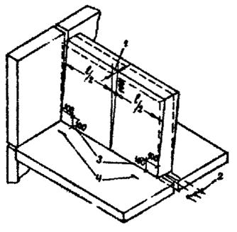
Схема расположения мест плановой съемки панелей:
1 - отклонения плоскостей стеновых панелей от вертикали ±5 мм; 2 - смещение осей или граней панелей стен относительно ориентирных рисок ±5 мм, 3 - места плановой съемки панелей; 4 - ориентирные риски
5.30. Установку чердачных рам следует производить от ориентирных рисок, соответствующих проектному положению центров опор чердачных рам.
Разметку ориентирных рисок необходимо выполнять от внутренних плоскостей наружных фризовых панелей с откраской рисок трудносмываемой краской.
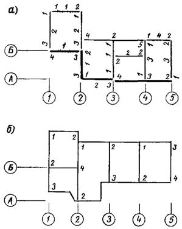
Примеры записи плановой и высотной исполнительной съемки смонтированных элементов:
а) плановой съемки; б) высотной съемки
Для соблюдения проектного уклона панелей покрытий безрулонной крыши следует произвести выравнивание монтажного горизонта, выполняемое в опорных местах установки чердачных рам.
Выравнивание монтажного горизонта выполнять установкой маяков. Высоты маяков получить геометрическим нивелированием. Средняя квадратическая погрешность определения отметок не должна превышать 2 мм.
Допускаемые отклонения при установке рам принимаются по табл. 2 и 3 настоящей «Инструкции».
5.31. При измерении углов, линий и
превышений конечным результатом, сравниваемым с проектным значением, следует
считать среднее арифметическое значение , вычисленное по отдельным значениям.
Значение
, вычисленное по отдельным значениям.
Значение  следует
вычислять по формуле:
следует
вычислять по формуле:
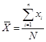
где N - число выполненных замеров,
х - значение отдельных измерений.
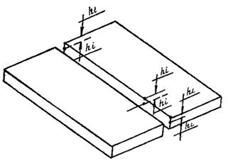
Схема расположения мест съемки панелей перекрытий:
hi, - отсчеты по рейкам для определения превышений двух смежных панелей перекрытий
5.32 При обработке результатов
необходимо исключать значения, имеющие грубые погрешности. Критерием наличия
грубых погрешностей в измерениях следует считать отклонение одного (нескольких)
результата от значения  на величину ³ 2Vi, где Vi - отклонение
значений измерений от среднего арифметического.
на величину ³ 2Vi, где Vi - отклонение
значений измерений от среднего арифметического.
5.33. Величиной домера к результату измерений следует считать разность
Vср = Хo
-  , (4)
, (4)
где Хо - проектное значение угла, отметки, расстояния.
5.34. Определение точности монтажа следует производить после обработки результатов исполнительной съемки путем сравнения средней квадратической погрешности, вычисленной по результатам съемки, с допускаемыми отклонениями при монтаже конструкций. Вычисление квадратической погрешности производят по формуле:
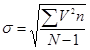
5.35. Пример обработки исполнительной съемки приведен в табл. 5.
Установка панелей стен в нижнем сечении 4-го этажа дома серии П44/16
|
Отклонения V измеренные при исполнительной съемке |
V2 |
Частота n в результате исполнительной съемки |
V2n |
Примечание |
|
0 |
0 |
72 |
0 |
Незначительные дефекты |
|
1 |
1 |
64 |
64 |
» |
|
2 |
4 |
15 |
60 |
» |
|
3 |
9 |
51 |
459 |
» |
|
4 |
16 |
20 |
320 |
» |
|
5 |
25 |
80 |
200 |
» |
|
6 |
36 |
9 |
324 |
» |
|
7 |
49 |
8 |
392 |
» |
|
8 |
64 |
11 |
704 |
» |
|
9 |
81 |
4 |
324 |
» |
|
10 |
100 |
31 |
3100 |
» |
|
11 |
121 |
2 |
242 |
Значительные дефекты |
|
12 |
144 |
3 |
432 |
» |
|
13 |
169 |
0 |
0 |
» |
|
14 |
196 |
0 |
0 |
» |
|
15 |
225 |
1 |
225 |
» |
|
N = 371 |
6846 |
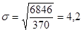
По СНиП III-16-73 допускаемое отклонение в нижнем сечении при монтаже панелей не должно превышать 5 мм.
5.36. В соответствии с ВСН-138-77 «Временными указаниями до организации операционного контроля качества строительно-монтажных работ в комплексной системе управления качеством на ДСК» (Главмосстрой) коэффициент точности монтажа следует вычислять по формуле:
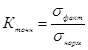
Оценка качества монтажа по ВСН-138-77
|
Коэффициент точности |
Оценка точности монтажа |
|
1,0-0,91 |
отлично |
|
0,90-0,81 |
хорошо |
|
0,80-0,61 |
удовлетворительно |
|
0,60 и менее |
не удовлетворительно |
В соответствия с табл. 6 в рассмотренном примере 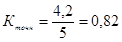
В соответствии с ВСН-138-77 панели с отклонением >10 мм в примере (по табл. 1 панели с отклонениями 11, 14 и 15 мм) следует демонтировать, о чем геодезист обязан доложить производителю работ. Впоследствии после переустановки необходимо сделать повторную съемку, указав на исполнительной схеме новые данные замеров.
5.37. Для геодезической разбивки осей и выверки конструкций при монтаже крупнопанельных домов этих серий рекомендуется пользоваться инструментом и приспособлениями, приведенными в табл. 7.
Примечание. Инвентарь, канцпринадлежности и малоценное быстроизнашивающееся оборудование уточняются в ППГР.
Спецификация инструментов
и приспособлений
для строительства крупнопанельных зданий
|
№ п/п |
Наименование |
Тип |
Может быть заменен |
Количество |
|
1. |
Теодолит |
2Т5К, ГОСТ 10529-70 |
2Т2 |
1 комплект |
|
2. |
Теодолит |
Т3О, ГОСТ 10529-70 |
Т30М |
» |
|
3. |
Нивелир |
Н-3, ГОСТ 10528-76 |
Н-3К |
» |
|
4. |
Нивелир |
Н-10, ГОСТ 10528-76 |
Н-10К |
» |
|
5. |
Зенит-прибор |
ПЗЛ |
ПОВП |
» |
|
6. |
Рейка нивелирная |
РН-3-3000С, ГОСТ 11158-76 |
РН-3-2100 |
2 шт. |
|
7. |
Рулетка |
РК-50, ГОСТ 7502-69 |
РВ-30 |
» |
|
8. |
Термометр |
ПМ-8, ГОСТ112-78 |
бытовой |
1 шт. |
|
9. |
Динамометр |
ТУ 24-4-180-73 |
Пружинные весы бытовые |
» |
|
10. |
Метр складной |
ТУ 2-12-156-76 |
Линейка металлическая 1000 мм |
» |
|
11. |
Рейка с уровнем |
Конструкция ДСК № 1 |
Рейка-отвес |
2 шт. |
|
12. |
Палетка из оргстекла |
Чертежи треста Мосоргстрой |
4 шт. |
|
|
13. |
Линейка |
300 мм |
Угольник школьный |
1 |
|
14. |
Проволока вязальная |
Æ1 мм |
Капроновая леска Æ0,8-1,0 мм |
100 м |
|
15. |
Вычислительная машина |
«Электроника 18» |
«Быстрица» |
1 |
|
16. |
Инвентарная металлическая скамейка |
Чертежи треста Мосоргстрой |
- |
10 |
5.38. При возведении крупнопанельных жилых домов геодезические работы следует выполнять в соответствии с проектами производства геодезических работ и требованиями «Инструкции по производству геодезических работ при строительстве крупнопанельных жилых зданий» (ВСН-23-77, Главмосстрой, 1977) и «Памятки мастеру, прорабу и геодезисту по геодезическим работам при строительстве зданий из деталей единого каталога» (Главмосстрой, 1976) и «Требованиями к точности геометрических параметров жилых домов серии П44/16, РМ-1492» (МНИИТЭП ГлавАПУ, Москва, 1979).
6. УСТРОЙСТВО ПОДЗЕМНОЙ ЧАСТИ ДОМА
6.1. При выполнения работ нулевого цикла на строительной площадке необходимо руководствоваться требованиями «Указаний работам нулевого цикла в жилищном строительстве, осуществляемом организациями Главмосстроя» (ВСН-4-67, Главмосстрой, 1971).
6.2. К работам по устройству подземной части здания следует приступать после разбивки и закрепления основных осей здания и выполнения земляных работ в соответствии с требованиями «Указаний по производству земляных работ на жилищно-гражданском строительстве, осуществляемом организациями Главмосстроя» (ВСН 73-72, Главмосстрой, 1972)
До устройства фундаментов отрытый котлован должен быть освидетельствован и принят по акту (форма УГАСК № 6) представителем Мосгоргеотреста и авторского надзора.
6.3. По окончании земляных работ перед устройством фундаментов необходимо тщательно проверить расположение основных осей здания и вынести их на строительную обноску, устанавливаемую на расстоянии не менее 3 м от бровки котлована.
Основание под фундаменты должно быть тщательно выверено по нивелиру в соответствии с проектными отметками.
6.4. При устройстве свайных фундаментов работы необходимо выполнять в соответствии с требованиями главы СНиП III-9-74 «Основания и фундаменты», «Указаний по устройству фундаментов из забивных свай для домов повышенной этажности, возводимых из унифицированных изделий» (ВСН 91-74, Главмосстроя, 1974), «Указаний по устройству свайных фундаментов (с учетом взаимоотношений строительных организаций Главмосстроя)» (ВСН 124-76, Главмосстрой, 1976) и «Инструкция по проведению динамических испытаний свай дизельным молотом» (ВСН 156-79, Главмосстрой, 1979).
6.5. Глубина забивки свай должна быть уточнена до начала производства свайных работ испытанием обычных железобетонных пробных свай (ГОСТ 5686-78 «Сваи. Методы полевых испытаний») или стальных .инвентарных свай (ВСН 91-74).
Завоз свай на стройплощадку и забивка их должны производиться после корректировки рабочих чертежей свайного тюля проектной организацией по результатам испытаний пробных свай.
6.6. Для повышения качества работ забивку свай рекомендуется выполнять сваебойными агрегатами с самоустанавливающимися копровыми мачтами. Для регистрации перемещения свай с повышенной точностью при динамических испытаниях следует применять безынерционные отказомеры конструкции НИИМосстроя.
Забивку свай следует осуществлять в соответствии с последовательностью ходов, предусмотренных проектом производства работ.
Данные о забивке каждой сваи во время производства работ следует заносить в специальный журнал забивки свай с последующим составлением сводной ведомости забитых свай в соответствии с главой СНиП III-9-74.
6.7. Срубка голов забитых свай и устройство ростверка разрешается после составления исполнительной схемы, приемки свайного поля представителем авторского надзора и составления соответствующего акта.
Срубку свай и заделку их голов в ростверк необходимо выполнять в соответствии с проектом.
6.8. При устройстве железобетонных монолитных ростверков и фундаментов в виде сплошной монолитной плиты следует руководствоваться главой СНиП III-15-76 «Бетонные и железобетонные конструкции монолитные. Правила производства и приемки работ», ВСН 91-74 и ВСН 124-76.
6.9. Армирование железобетонных конструкций монолитных ростверков и фундаментных плит следует осуществлять, как правило, укрупненными сварными арматурными каркасами и сетками заводского изготовления. Опалубку следует использовать разборно-переставную, собираемую из инвентарных щитов, обеспечивая многократную их оборачиваемость.
До начала работ по бетонированию монолитных конструкций должны быть проверены правильность установки опалубки и арматуры, надежность их крепления, обеспечение требуемого защитного слоя бетона и оформлены соответствующие акты на скрытые работы.
6.10. Бетонирование монолитных железобетонных конструкций фундаментов и ростверков должно осуществляться в соответствии с требованиями главы СНиП III-15-76 с тщательным уплотнением бетонной смеси вибраторами.
Для подачи бетона следует использовать бункера, ковши, опрокидывающиеся бадьи, а также специальные механизмы, предусмотренные проектом производства работ.
При укладке бетонной смеси высота свободного сбрасывания смеси в момент выгрузки не должна превышать 1 м.
При перерывах в бетонировании вертикальные рабочие швы следует устраивать, используя проволочную сетку с размером ячеек 6´6 мм, и диаметрам проволоки 1 мм.
После бетонирования монолитных ростверков и фундаментных плит хождение по бетону, не набравшему прочность 15 кг/см2, или его загружение не разрешается.
6.11. Распалубка боковых элементов монолитных фундаментов, не несущих нагрузки от конструкций, допускается только после достижения бетоном прочности, обеспечивающей сохранность, поверхности кромок углов.
Снятие несущей опалубки и возведение на монолитных фундаментах вышележащих конструкций разрешается не ранее достижения бетоном 70 % проектной прочности, если в проекте нет иных указаний по этому вопросу.
6.12. К монтажу сборных конструкций подземной части здания разрешается приступать после инструментальной проверки соответствия проекту отметок и положения в плане свайных или монолитных фундаментов, приемки их, а также после засыпки пазух фундаментов.
Приемка фундаментов здания производится представителями заказчика, проектной и строительной организацией и оформляется соответствующими актами. Без приемки фундаментов монтаж верных (конструкций подземной части запрещается.
6.13. Монтаж основных сборных элементов подземной части домов необходимо производить непосредственно с транспортных средств и лишь для отдельных мелких элементов допускается устройство приобъектного склада.
6.14. Перед началом монтажа сборных конструкций подземной части дома необходимо:
а) определить монтажный горизонт, для чего производится нивелировка верха монолитного ростверка или фундаментной плиты;
б) произвести инструментальную разбивку проектных осей базовых панелей, панелей внутренних продольных и наружных стен, а также рисок расположения наружных панелей, по которым в процессе монтажа осуществляется ориентация поперечных стеновых панелей по их торцевым граням;
в) установить монтажные маяки при необходимости под каждую стеновую панель на расстоянии 20-30 см от торцов.
6.15. При выполнении монтажных работ должен вестись геодезический контроль за правильностью монтажа и обеспечением проектного положения основных конструкций подземной части здания в соответствии с требованиями «Инструкции по производству геодезических работ при строительстве крупнопанельных жилых зданий» (ВСН 23-77, Главмосстрой, 1977).
6.16. Монтаж сборных конструкций следует осуществлять в последовательности, предусмотренной проектом производства работ, обеспечивая устойчивость и пространственную жесткость конструкций в процессе сборки до окончательного их закрепления. При монтаже сборных элементов следует придерживаться принципа установки элементов в .направлении «на кран».
6.17. Монтаж конструкций подземной части дома необходимо производить с разделением здания на захватки. Размер захваток принимаются в соответствии с технологическими картами проекта производства работ.
6.18. Монтаж сборных элементов на каждой захватке рекомендуется производить поэтапно, начиная с установки панелей внутренних стен, в следующей последовательности:
- вначале устанавливаются базовые панели внутренних поперечных стен;
- монтируются в направлении от базовых панелей панели внутренних поперечных стен, а затем примыкающие к ним панели внутренних .продольных стен;
- устанавливаются цокольные панели наружных стен;
- монтируются элементы лестнично-лифтовых узлов;
- после окончания монтажа панелей стен на захватках укладываются панели перекрытия. До начала монтажа перекрытия должны быть установлены постоянные крепления смонтированных элементов и .произведена тщательная выверка положения верхних опорных граней панелей несущих стен, устроены полы и поданы в техническое подполье трубопроводы, узлы санитарно-технических систем, бойлеры и другое оборудование;
- в последнюю очередь на захватке монтируются элементы входов. Схемы рекомендуемой последовательности монтажа сборных элементов подземной части дома серии П44/16 приведены в приложениях 4 и 5.
В процессе совершенствования технологии производства работ допускаются отдельные изменения приведенной последовательности монтажа сборных элементов подземной части домов этой серии. Однако все изменения в последовательности монтажа элементов должны быть обязательно согласованы с утвержденной проектной документацией (технологическими картами ППР).
6.19. Монтаж стеновых панелей подземной части домов этой серии следует производить в соответствии с технологическими картами, разработанными трестом Мосоргстрой, и проектом производства работ, предусматривающих использование нормокомплекта грозахватных и монтажных приспособлений, включающего штанги осевым зажимом (рис. 19), предназначенные для временного крепления и установки панелей внутренних поперечных несущих стен в проектное положение по их геометрическим осям, и монтажные связи (рис. 20) для временного крепления панелей внутренних продольных и наружных стен.
Перед началом монтажа необходимо произвести контрольную регулировку штанг по шаблону с точностью до ±5 мм.
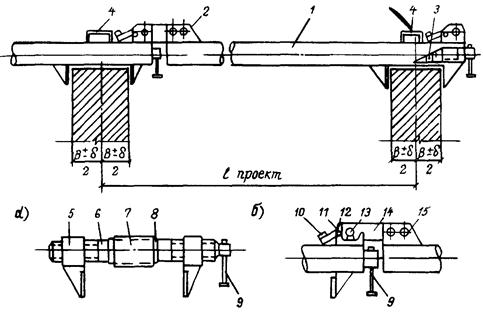
Штанга с осевым зажимом для
временного крепления и установки
панелей внутренних поперечных стен в проектное положение:
а) осевой зажим; б) замок:
1 - корпус; 2 - замок; 3 - осевой зажим; 4 - петля; 5 - нарезная втулка с прижимом; 6 - шпилька с левой и правой резьбой; 7 - втулка; 8 - упорное кольцо; 9 - вороток; 10 - эксцентриковый кулачок; 11 - валик; 12 - проушина; 13 - палец; 14 - планка с конусной прорезью; 15 - накладка
6.20. На каждой захватке монтаж внутренних стеновых панелей следует начинать с установки базовых панелей, производя тщательную инструментальную выверку правильности их положения с помощью геодезических инструментов, так как от точности установки базовых элементов зависит точность монтажа последующих панелей. Базовые панели необходимо надежно временно крепить двумя телескопическими подкосами, закрепляемыми в верху панелей за инвентарные петли, а внизу - к монтажным петлям анкерных блоков или к специальным петлям, закладываемым при бетонировании ростверка или плиты.
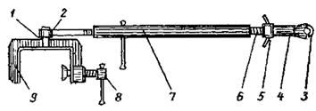
Монтажная связь для
временного крепления
панелей внутренних и наружных стен:
1 - ось; 2 - проушина; 3 - крюк; захват; 4 - предохранительная втулка; 5-натяжная гайка; 6 - винт; 7 - стяжная муфта; 8 - винтовой упор; 9 - струбцина
После выверки и закрепления базовых панелей приступают к монтажу остальных панелей внутренних поперечных стен, установку которых ведут последовательно в направлении от базовых панелей с закреплением их в двух уровнях по высоте штангами с осевыми зажимами. Каждую очередную стеновую панель, подаваемую монтажным краном к месту установки, опускают, не доводя до растворной постели на 3-4 см, и после этого закрепляют штангами к ранее установленной панели. Закрепление производят тремя штангами: одной внизу - в проеме для пропуска коммуникаций и двумя - по верху панели. После закрепления штангами панель опускают, и она занимает проектное положение, так как три точки фиксации с помощью штанг гарантируют параллельность по отношению к базовой панели, а конструкция осевого зажима штанги обеспечивает установку панели по геометрическим осям. Положение панелей внутренних стен в поперечном направлении при монтаже контролируют по их торцевым граням и рискам, нанесенным на фундамент, или по шнуру.
Панели внутренних продольных стен устанавливают по рискам и крепят к установленным панелям поперечных стен двумя монтажными связями или путем установки постоянных креплений.
Панели внутренних стен монтируют на цементном растворе марки 200, расстилаемом на опорные поверхности фундамента
6.21. Панели наружных стен устанавливают на слой цементного раствора марки 200, ориентируя их по рискам геодезической разбивки, и временно закрепляют каждую панель в двух точках монтажными связями, струбцинами или штангами для крепления торцовых наружных панелей к ранее установленным панелям внутренних поперечных стен. Схема временного крепления панелей внутренних и наружных стен при монтаже подземной части жилых домов серии П44/16 приведена в приложении 6.
Сразу же за установкой стеновых панелей и их временным закреплением должны устраиваться постоянные связи, предусмотренные архитектурно-строительной частью проекта.
6.22. Способы временного крепления сборных элементов подземной части дома при их монтаже, а также типы временных креплений, количество, порядок установки и время крепления устанавливаются технологическими картами проекта производства работ.
Освобождение установленных элементов от временных креплений может производиться только после устройства постоянных связей, предусмотренных проектом.
Перечень рекомендуемой монтажной оснастки, грузозахватных приспособлений и инвентаря для монтажа подземной части домов серии приведен в разделе 9, табл. 10.
6.23. После окончания монтажа и постоянного закрепления в соответствии с проектом панелей внутренних и наружных стен снимают монтажные приспособления и приступают к монтажу ей перекрытия над техническим подпольем (см. приложение 5).
Монтаж панелей перекрытия следует вести на захватке посекционно, укладывая панели в направлении «на кран». В каждой и монтаж панелей перекрытия рекомендуется начинать от лестничной клетки и последовательно укладывать их по направлению к границам секции. Монтаж панелей перекрытия следует производить с применением универсального грузозахватного устройства с автоматическим кантователем. Панели перекрытия монтируют на пластичном цементном растворе марки 200, расстилаемом только на опорные поверхности панелей внутренних несущих стен непосредственно перед укладкой панелей. Толщина горизонтальных швов принята 20 мм.
Стыки между торцами панелей перекрытия и. наружными стенами утепляют вкладышами из полистирольного пенопласта ПСБ-С или из плит ППС-75. После установки монтажных связей все стыки между панелями перекрытия, а также гнезда в местах расположения соединительных связей тщательно заделывают цементным раствором марки 200.
6.24. Монтаж панелей наружных и внутренних стен, перекрытия и других сборных элементов подземной части домов этой серии выполняется на пластичном цементном растворе марки 200 с толщиной монтажных швов 20 мм. Выступающие подъемные петли после монтажа срезаются заподлицо, а подъемные петли, находящиеся в лунках, не срезаются, и лунки заделываются раствором.
6.25. Соединение панелей наружных и внутренних стен, перекрытия и других элементов осуществляется металлическими связями на сварке в соответствии с конструктивными (решениями со ответствующих узлов проекта.
Электросварка должна непрерывно следовать за монтажом конструкций и до замоноличивания стыков сдаваться по акту на скрытые работы техническому и авторскому надзору.
Противокоррозионная защита закладных деталей и соединительных связей должна выполняться в соответствии с проектом и требованиями главы СНиП II-28-73, ВСН 106-75 и ВСН 141-77 Главмосстроя (см. раздел 4, п. 4.22).
Все места сварных соединений сборных элементов, включая закладные и соединительные детали, после приемки соединений должны быть тщательно заделаны цементным раствором марки 200 в соответствии с проектом.
6.26. Герметизация вертикальных стыков панелей наружных стен подполья производится упругой прокладкой-гернит, заводимой в стык в обмазке на .клее-мастике КН-2 с последующей тщательной заделкой устья стыка герметизирующей мастикой АМ-05 и цементным раствором (рис. 21).
Вертикальные стыки панелей наружных стен в верхней их части изнутри тщательно обклеиваются воздухозащитной лентой (лентой «Герволент» на клее КН-2 или другими материалами, предусмотренными проектом) и утепляются вкладышами из полужестких теплоизоляционных плит ППС-75 или полистирольного пенопласта ПСБ-С в обертке из пергамина, в соответствии с решениями узлов проекта. После окончания монтажа панелей стен и перекрытия и установки монтажных связей, вертикальные стыки между панелями наружных и внутренних стен технического подполья замоноличиваются цементным раствором марки 200 на всю их высоту (см. рис. 21).
Вертикальные, стыки наружных стен, расположенные ниже уровня земли, снаружи заподлицо заделываются цементным раствором, а затем промазываются горячим битумом за 2 раза по холодной битумной грунтовке.
Заделка и герметизация стыков наружных стен подземной части дома выполняется в соответствии с решениями узлов проекта и требованиями СН-420-71 и ВСН 15-75 (см. раздел 8).
6.27. После окончания монтажа перекрытия, установки постоянных связей и обмазки горячим битумом за 2 раза по холодной битумной грунтовке поверхностей наружных стен технического подполья, соприкасающихся с грунтом, производится обратная засыпка пазух и планировка участка вокруг здания. Засыпку грунта в пазухи следует выполнять бульдозером, передвигающимся под углом к наружным стенам так, чтобы давление от бульдозера через перемещаемый грунт не передавалось на конструкции здания.
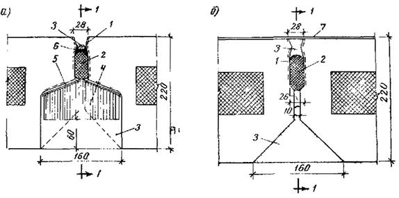
Заделка вертикальных стыков панелей наружных стен подземной части здания:
а) в верхнем уровне:
1 - обмазка грунтовочным составом (на заводе); 2 - гернит на КН-2; 3 - цементный раствор; 4 - утепляющий вкладыш из полужестких теплоизоляционных плит или полистирольного пенопласта в обертке из пергамина; 5 - лента воздухо-защитная («герволент» на КН-2); 6 - мастика АМ-0,5;
б) в местах ниже уровня земли:
1 - обмазка грунтовочным составом (на заводе); 2 - гернит на КН-2; 3 - цементный раствор; 7 - гидроизоляция
Обратная засыпка пазух должна производиться послойно с тутельным уплотнением грунта пневматическими или другими трамбовками. В зимних условиях обратную засыпку пазух следует производить только талым грунтом.
6.28. По окончании работ нулевого цикла исполнитель сдает по акту законченную подземную часть здания со всеми относящимися к ней работами автору проекта, заказчику и представителям монтажного управления ДСК № 1, осуществляющего монтаж надземной части, представляя при этом исполнительную геодезическую схему разбивки осей, смонтированных конструкций подземной части здания, а также другую документацию в соответствии с требованиями ВСН 4-67.
При приемке подземной части здания и работ нулевого цикла проверяются:
а) правильность разбивки здания;
б) соответствие фактических и проектных осей здания и смонтированных конструкций, а также отметок монтажного горизонта с учетом допусков, предусмотренных в СНиПе и проекте;
в) тщательность монтажа конструкций, устройства креплений и заделки стыкав между элементами в соответствии с проектом;
г) отсутствие повреждений смонтированных конструкций и деталей;
д) наличие актов на скрытые работы;
е) готовность инженерных коммуникаций (тепло- и водоснабжения, канализации и электроснабжения), вертикальной планировки территории, подъездов и дорог.
7. МОНТАЖ НАДЗЕМНОЙ ЧАСТИ ДОМА
7.1. Монтаж надземной части жилых домов этой серии производится только после полного завершения всех работ нулевого цикла (для данного объекта) и приемки выполненных работ по акту представителями авторского надзора, заказчика и организации ДСК № 1, осуществляющей монтаж надземной части дома.
7.2. Монтаж конструкций надземной части дома следует осуществлять в соответствии с монтажными планами проекта и технологическими картами проекта производства работ поэтажно разбивая этажи на монтажные захватки и обеспечивая в процессе оборки устойчивость и пространственную жесткость смонтированных конструкций. Одновременно с монтажом строительных конструкций выполняются по совмещенному графику также внутренние общестроительные и специальные работы (обязательно вне зоны монтажно-транспортных операций).
Устойчивость монтируемых элементов в процессе монтажа обеспечивается за счет установки дополнительных временных креплений (подкосов, монтажных опор и связей, струбцин, стоек и др.) а также устройства постоянных соединений между элементами выполняемых непосредственно за установкой деталей.
Размеры захваток, очередность установки элементов и обеспечение устойчивости их при монтаже, а также совмещение других работ с монтажом конструкций и технологическая последовательность их выполнения устанавливаются проектом производства работ (см. раздел 3, п.п. 3.12 и 3.13).
7.3. Поставку и монтаж сборных элементов надземной части дома следует выполнять по часовым транспортно-монтажным графикам непосредственно с транспортных средств в соответствии с технологическими картами проекта производства работ.
7.4. Проект производства работ по монтажу надземной части жилых домов серии П44/16 с транспортных средств состоит из типовой части, содержащей общие типовые решения для всех блоксекций этой серии, и привязочной, включающей конкретные решения для каждого монтируемого дома.
Типовую часть проекта производства работ разрабатывает СКТБ «Кассетдеталь», а привязочную - группа ППР ДСК № 1.
Типовая часть проекта производства работ по монтажу надземной части домов этой серии должна включать:
- технологические карты монтажа сборных элементов конструкций жилых секций первого, типовых и верхних этажей, чердака, крыши и машинных помещений лифтов;
- схемы временного крепления монтируемых элементов конструкций входов, этажей, чердака и машинных помещений лифтов;
- технологические графики совмещенного производства работ при строительстве надземной части дома;
- схемы строповки сборных элементов конструкций, контейнеров и другого инвентаря;
- транспортно-монтажные графики поставки железобетонных изделий на все этажи, чердаки, крышу;
- перечень монтажной оснастки, грузозахватных приспособлений, инвентаря и средств малой механизации;
- основные требования по производству работ и технике безопасности при монтаже сборных элементов конструкций;
- требования по производству работ в зимних условиях;
- пояснительную записку и другие материалы.
В привязочной части ППР должны приводиться:
- подробный стройгенплан, привязанный для каждого монтируемого корпуса;
- схема вертикальной привязки башенных кранов с перечнем основных механизмов, грузозахватных и монтажных приспособлений и необходимых временных сооружений;
- сводная ведомость схем строповки сборных элементов и инвентаря с указанием массы грузов;
- транспортно-монтажные графики поставки железобетонных изделий на все этажи, чердак и крышу, привязанные к датам строительства;
- комплекты оформленной документации на производство работ башенными кранами, грузопассажирскими и грузовыми подъемниками.
7.5. До начала монтажа конструкций каждого этажа должны:
- полностью завершены в соответствии с проектом все монтажные и сопутствующие им работы (устройство креплений, замоноличивание стыков и др.) по нижележащему этажу;
- произведена геодезическая проверка точности смонтированных конструкций нижележащего этажа с составлением исполнительной съемки;
- выполнена геодезическая разбивка проектных осей и разметка мест установки конструкций, определен монтажный горизонт и установлены маяки;
- приняты выполненные работы по нижележащему этажу и составлен акт поэтажной приемки скрытых работ.
7.6. Перед началом работ на каждой захватке необходимо:
- проверить надежность установки временных ограждений и защиты проемов лифтовых шахт и в панелях перекрытия;
- установить контейнеры с необходимыми материалами и монтажными деталями;
- подготовить монтажные приспособления, инвентарь и инструменты;
- организовать рабочие места монтажников.
7.7. Монтаж сборных элементов необходимо производить в строгом соответствии с технологической последовательностью, установленной технологическими картами проекта производства работ, что является необходимым условием качественного и безопасного монтажа здания. При монтаже сборных элементов следует придерживаться принципа установки элементов в направлении «на кран».
7.8. Исходя из условий подачи сборных элементов непосредственно с транспортных средств, обеспечения в процессе сборки устойчивости смонтированных элементов и принятой технологии заделки вертикальных стыков между панелями наружных стен, требующей свободного доступа к ним изнутри здания, монтаж элементов на каждой захватке рекомендуется выполнять в следующей последовательности:
- монтируются объемные элементы шахт лифтов;
- устанавливаются по периметру захватки панели наружных стен и вертикальные стыки между ними с внутренней стороны обклеиваются воздухо-защитной лентой и утепляются вкладышами;
- монтируются панели внутренних стен;
- устанавливаются перегородки, санитарно-технические кабины, электроблоки, элементы лестниц и другие элементы;
после подачи необходимых деталей и материалов на монтируемую этаж-захватку (столярных изделий, трубной заготовки и приборов отопления и др.) укладываются панели перекрытия и плиты лоджий-балконов. Вентиляционные блоки устанавливаются через проемы смонтированных панелей перекрытий.
Примечание. В процессе совершенствования технологии производства работ допускаются отдельные изменения приведенной последовательности монтажа элементов, которые должны внедряться только в соответствии с утвержденной проектной документацией.
Схемы рекомендуемой последовательности монтажа сборных элементов прямой и угловой секций типового этажа дома приведены в приложениях 7, 8, 10 и 11.
7.9. При монтаже панелей наружных и внутренних стен и других элементов необходимо выполнять следующие требования:
- устанавливать панели несущих наружных и внутренних стен по выверенным маякам и по заранее вынесенным на перекрытие осям и контрольным рискам. Панели наружных стен необходимо .устанавливать по фасаду строго в одной плоскости по вертикали, не допуская перепадов наружных поверхностей. Положение стеновых панелей при монтаже определяется путем промера специальным шаблоном расстояния от контрольных рисок до места их установки. Необходимо строго соблюдать проектную ширину зазора в вертикальных стыках между стеновыми панелями;
- устанавливать панели наружных и внутренних стен на слой цементного раствора, который укладывается особенно тщательно для обеспечения требуемой плотности, непродуваемости и водонепроницаемости горизонтального стыка панелей наружных стен и равномерного опирания внутренних несущих стеновых панелей. Раствор следует расстилать под панель непосредственно перед ее установкой. Слой раствора должен быть на 5-8 мм выше маяков, чтобы устанавливаемые по маякам панели плотно обжали раствор. Раствор укладывают на всю ширину опирания панели с последующей зачисткой выдавливаемого раствора;
- монтаж панелей наружных и внутренних стен, перекрытий и других сборных элементов следует выполнять на пластичном цементном растворе марки не менее 150.
Выступающие подъемные петли после монтажа следует срезать заподлицо. Подъемные петли, находящиеся в лунках, не срезаются и лунки заделываются цементным раствором;
- панели и другие элементы, смещенные с постели в период твердения раствора, следует приподнимать краном, очищать от приставшего раствора и вновь устанавливать на свежеуложенный раствор;
- до окончательного закрепления тщательно выверять и приводить в проектное положение установленные на место элементы, после чего производить тщательную подштопку раствора в стыке;
- выверять положение панелей относительно разбивочных проектных осей и отметок при помощи геодезических инструментов, шаблонов и стальной рулетки, а вертикальность элементов при установке проверять рейкой-отвесом;
- временно крепить каждый устанавливаемый элемент не менее чем в двух точках с использованием предусмотренной проектом инвентарной монтажной оснастки и приспособлений.
Освобождать монтируемые элементы от стропов грузозахватных приспособлений следует только после надежного закрепления их временными или постоянными креплениями. Установленные элементы освобождают от временных креплений только после их полного постоянного закрепления, предусмотренного проектом.
По окончании смены (при перерывах в работе) запрещается оставлять на временных креплениях конструкции, закладные детали которых подлежат приварке, за исключением отдельных случаев, предусмотренных проектом производства работ или технологическими картами.
Постоянные крепления между панелями стен, перекрытий и другими сборными элементами следует устраивать точно в соответствии с проектом непосредственно вслед за установкой и выверкой элементов.
Типы временных креплений, количество и порядок их установки, а также время снятия назначаются технологическими картами проекта производства работ.
Перечень рекомендуемой монтажной оснастки, грузозахватных приспособлений и инвентаря для монтажа надземной части жилых домов этой серии приведен в разделе 9, табл. 11, а схемы установки временных креплений сборных элементов при монтаже типового этажа - в приложениях 9 и 12.
7.10. Панели наружных стен устанавливаются на опорную часть панелей перекрытия на слое цементного раствора толщиной 20 мм. Ширина опорной части для панелей наружных стен должна составлять 80 мм.
Перед установкой наружных панелей на захватке в горизонтальном стыке необходимо установить теплоизоляционные вкладыши из плит ППС-75 или полистирольного пенопласта между торцами панелей перекрытия и наружными стенами, на верхней кромке ниже расположенных панелей наружных стен приклеить на клее-мастаке КН-2 прокладку-гернит. В местах пересечения горизонтальных и вертикальных стыков устраивается дополнительная защита последних, для чего загибается и приклеивается сверху выступающая часть воздухозащитной ленты (на клее КН-2), а сверху нее укладывается слив из алюминия, перекрывающий нижерасположенный вертикальный стык; только после этого прокладывается гернит горизонтального стыка (рис. 22 и 24).
Диаметр гернита принимается в соответствии с проектом из условий его обжатия на 30-50 % вышеустанавливаемой панелью. Стыки гернита должны располагаться на расстоянии не менее 0,5 м от мест пересечения горизонтальных и вертикальных стыков (см. раздел 8, п. 8.13-8.27).
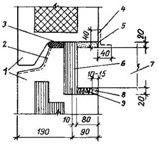
Заделка горизонтального стыка панелей наружных стен:
1 - панели наружной стены; 2 - покрытие грунтовочным составом на заводе; 3 - гернит на клее-мастике КН-2; 4 - проклейка лентой «герлен» на участках где толщина шва превышает 25 мм; 5 - цементный раствор; 6 - утепляющий вкладыш из теплоизоляционных плит или полистирольного пенопласта ПСБ-С; 7 - панель перекрытия; 8 - заделка цементным раствором; 9 - антисептированная пакля или синтетический жгут
При монтаже каждая панель наружных стен должна временно закрепляться двумя инвентарными подкосами, которые в верхней части крепятся за специальные монтажные петли, расположенные у внутренней поверхности панелей на высоте 1,65 м, а внизу - за установленные винтовые захваты или монтажные петли в панелях перекрытия. В отдельных местах, где невозможно применение подкосов, для временного крепления наружных панелей могут также использоваться другие монтажные приспособления, предусмотренные проектом производства работ, или устанавливаемые панели необходимо сразу же на подвесе крюка крана закреплять постоянными связями в соответствии с проектом.
Снятие отдельных подкосов с наружных панелей в местах установки внутренних стеновых панелей необходимо производить только непосредственно перед установкой очередной внутренней панели и немедленным закреплением ее к наружным панелям постоянными связями.
При монтаже панелей наружных стен в целях обеспечения надежной защиты стыков необходимо уделять особое внимание соблюдению проектной ширины зазора в вертикальных стыках между смежными панелями по всей их высоте и необходимому обжатию гернита в горизонтальном стыке.
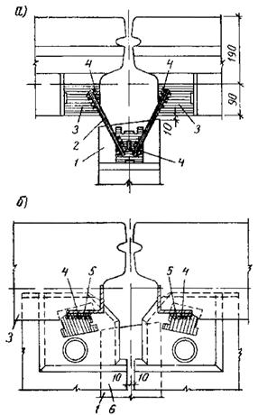
Устройство креплении панелей наружных стен:
а) в уровне верхних связей; б) в уровне нижних связей;
1 - панель внутренней стены; 2 - монтажные связи; 3 - панель наружной стены; 4 - сварные швы; 5 - монтажные связи с панелями перекрытия; 6 - панели перекрытия
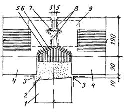
Заделка вертикальных стыков панелей наружных стен:
1 - панель внутренней стены; 2 - цементный раствор; 3 - проклейка серпянкой; 4 - панели наружной стены; 5 - утепляющий вкладыш из полистирольного пенопласта ППС-75 в обертки из пергамента; 6 - воздухо-защитная лента-герволент на клее-мастике КН-2; 7 - водо-отбойная лента из алюминиевого сплава (крайние гофры обращены наружу); 8 - покрытие грунтовочным составом на заводе; 9 - слив из алюминия в местах пересечения вертикальных и горизонтальных стыков
Крепление панелей наружных стен с внутренними стенами и панелями перекрытия производится в двух уровнях с помощью оцинкованных монтажных связей, привариваемых к закладным деталям смежных панелей в соответствии с решениями узлов проекта (рис. 23).
Крапление панелей наружных стен к панелям перекрытия следует выполнять сразу же после установки их в проектное положение, а к панелям внутренних стен - после установки и выверки последних.
7.11. После постоянного закрепления панелей наружных стен к панелям перекрытия в пазы вертикальных стыков между смежными панелями сверху на всю высоту панелей вставляется алюминиевая водо-отбойная лента, крайние гофры которой должны быть обращены наружу (рис. 25), затем вертикальные стыки между ними с внутренней стороны тщательно обклеиваются воздухозащитной лентой (лентой «герволент» на клее КН-2 или другими материалами в соответствии с проектом) и утепляются вкладышами из полужесткой теплоизоляционной плиты ППС-75 или полистирольного пенопласта ПСБ-С в обертке из пергамина (см. рис. 24).
Герметизация вертикальных стыков панелей наружных стен закрыто типа (в лоджиях) производится снаружи упругой прокладкой-гернит, заводимой в устье стыка на клее-мастике КН-2, затем стык тщательно снаружи защищается тиоколовой мастикой АМ-0,5 (см. раздел 8 и рис. 26).
7.12. Монтаж панелей внутренних стен производится после устройства постоянных креплений наружных панелей к плитам перекрытия, приклейки воздухозащитной ленты и утепления вкладышами внутренней части вертикальных стыков между ними.
Панели внутренних стен устанавливают на цементном растворе по заранее выверенным маякам и контрольным рискам с временным креплением их в двух точках монтажными приспособлениями.
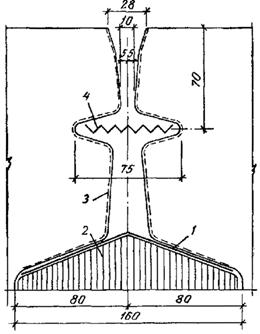
Открытый вертикальный стык
между панелями наружных стен
с установленной водоотбойной лентой:
1 - воздухо-защитная лента-герволент на клее КН-2; 2 - утепляющий вкладыш; 3 - заводская грунтовка; 4 - алюминиевая водо-отбойная лента ВАЗ
Для временного крепления внутренних панелей используются монтажные опоры, устанавливаемые со стороны свободных торцов панелей или дверных проемов, монтажные связи или струбцины для закрепления к смонтированным панелям наружных и внутренних стен и другие монтажные приспособления, предусмотренные проектом производства работ. При временном креплении устанавливаемых панелей монтажными приспособлениями только в одной точке необходимо второй конец панели сразу же до расстроповки панели прикрепить к ранее смонтированным элементам постоянными связями на сварке.
Сразу же после установки и выверки панели внутренних стен следует соединить с наружными панелями и между собой постоянными монтажными связями на сварке в соответствии с проектом (см. рис. 23а).
При монтаже панелей внутренних стен необходимо соблюдать предусмотренную проектом ширину зазоров между панелями по всей высоте вертикальных стыков.
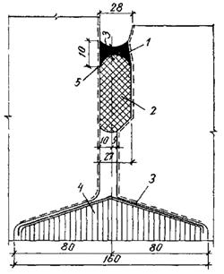
Герметизация и утепление
вертикальных стыков
закрытого типа между панелями наружных стен (в лоджиях):
1 - тиоколовая мастика АМ-0,5; 2 - гернит на клее КН-2; 3 - воздухо-защитная лента-герволент на клее КН-2; 4 - утепляющий вкладыш; 5 - заводская грунтовка
Вертикальные стыки между панелями внутренних стен для обеспечения необходимой звукоизоляции тщательно проконопачиваются антисептированой паклей с последующей зачеканкой швов с двух сторон панелей раствором на глубину 20-30 мм (рис. 27). Глухие стыки между панелями наружных и внутренних стен заделываются аналогично.
Замоноличивание вертикальных стыков между панелями наружных и внутренних стен производится после окончания монтажа панелей перекрытия на захватке (см. п. 7.21).
7.13. Шахты лифтов монтируют из готовых объемных железобетонных элементов с установленными в них кронштейнами для закрепления направляющих кабин и противовеса, постоянными обрамлениями проемов и дверями в закрытом положении.
Монтаж объемных элементов производится поэтажно. Объемные элементы шахт устанавливают по разбивочным осям (рискам), вынесенным с помощью геодезических инструментов на перекрытие каждого этажа. Объемные элементы устанавливают на слой цементного раствора, толщина которого принимается в зависимости от выверки монтажного горизонта.
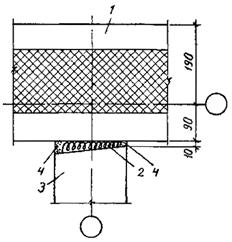
Заделка вертикальных стыков
между панелями
внутренних и наружных стен (глухой стык):
1 - панель наружной стены; 2 - антисептированная пакля; 3 - панель внутренней стены; 4 - цементный раствор
При установке объемных элементов шахт лифтов необходимо строго соблюдать соосность дверных проемов элементов и выдерживать отметку низа дверного проема элемента, которая должна быть на 20 мм ниже уровня лестничной панели перекрытия.
При монтаже шахт лифтов для обеспечения звукоизоляции необходимо выдерживать предусмотренную проектом ширину зазоров между шахтами лифтов и примыкающими к ним конструкциями здания, не допуская попадания в них раствора. Стык между шахтами лифтов и лестничной панелью перекрытия следует заделывать в соответствии с проектом.
Для обеспечения безопасности работ проемы лифтовых шахт необходимо сверху перекрывать специальными инвентарными защитными щитами, переставляемыми башенными кранами на следующий уровень после установки очередных объемных элементов шахт.
7.14. Гипсобетонные перегородки устанавливаются на прокладки из двух слоев толя шириной 120 мм, уложенные по перекрытию (рис. 28).
При установке гипсобетонные перегородки временно закрепляются стойками для временного крепления перегородок, устанавливаемыми со стороны дверного проема или свободного торца перегородки. С другой стороны перегородки сразу же до расстроповки прикрепляют к смежным элементам достоянными связями на сварке в соответствии с проектом. Стойки для временного крепления перегородок снимаются только после монтажа панелей перекрытия и постоянного закрепления перегородок в соответствии с проектом.
При монтаже перегородок особое внимание следует уделять тщательной заделке стыков в местах примыкания перегородок к стенам и потолку. Стыки по периметру перегородок тщательно конопатят паклей, смоченной в гипсовом растворе, затирают раствором и затем оклеивают полосками серпянки (см. рис. 28).
7.15. Санитарно-технические кабины для обеспечения равномерной передачи нагрузки на перекрытие и улучшения звукоизоляции устанавливают на прокладки, уложенные по перекрытию, из древесноволокнистых плит марки М-20 (ГОСТ 4598-74), битуминизированной древесноволокнистой плиты (ТУ 400-1/76-2-75), пергамина (4 слоя) или из других материалов в соответствии с решениями проекта.
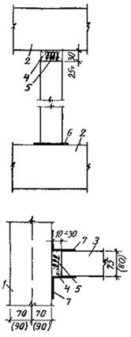
Заделка
стыков между гипсобетонными перегородками
и примыкающими конструкциями:
1 - панель внутренней стены; 2 - панель перекрытия; 3 - гипсобетонная перегородка; 4 - гипсовый раствор; 6 - пакля, смоченная в гипсовом растворе; 6 - толь в 2 слоя шириной 150 мм; 7 - серпянка шириной 150 мм
При установке кабин канализационный и водопроводные стояки тщательно совмещают с соответствующими стояками, расположенными ниже кабин. Выверка устанавливаемых кабин по вертикали производится с помощью рейки с уровнем.
Отверстия в панелях перекрытий для пропуска стояков кабин после установки вентиляционных блоков, кабин, монтажа стояков и проведения гидравлических испытаний тщательно заделывают цементным раствором (рис. 29). Перед заделкой в отверстиях устанавливается по проекту арматурная сетка из стержней и на подвесках из вязальной проволоки к ней закрепляется опалубочный лист из твердой древесноволокнистой плиты, покрытой битумом, устанавливаются гильзы на стояках горячего и холодного водоснабжения, а труба канализационного стояка и гильзы обматываются ветошью или паклей, чтобы закрыть зазоры между ними отверстиями в опалубочном листе. Гильзы и опалубочные листы должны поставляться в комплекте с сантехкабинами.
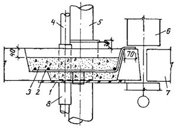
Заделка отверстия в
перекрытии в местах расположения
стояков сантехнических кабин:
1 - опалубка из твердой древесноволокнистой плиты толщиной 4 мм, покрытой битумом; 2 - сетка С-1; 3 - раствор; 4 - стояк горячего (холодного) водоснабжения; 5 - канализационный стояк; 6 - панель внутренней стены; 7 - панель перекрытия; 8 - гильза
Присоединение вентиляционного патрубка санитарно-технических кабин к вентиляционным блокам следует производить до монтажа панелей вышележащего перекрытия.
Стыки между сантехкабиной и примыкающими конструкциями конопатятся паклей, смоченной в гипсовом растворе, и снаружи заделываются гипсовым раствором. Места сопряжения санитарно-технических кабин со строительными конструкциями необходимо перед отделкой оклеивать полосками серпянки.
7.16. Монтаж вентиляционных блоков ведется поэтажно. Перед установкой вентиляционных блоков первого этажа отверстия под вентблоками в перекрытии над техническим подпольем должны быть забетонированы для предохранения от подсоса воздуха из техподполья. Вентблоки первого этажа устанавливаются на цементном растворе. Монтажные петли срезаются перед установкой вышележащего блока. Монтаж вентблоков производится через проемы смонтированных панелей перекрытия.
Для обеспечения безопасности работ проемы в перекрытиях до и после установки вентблоков необходимо перекрывать инвентарными защитными щитами.
Установка последующих вентблоков производится с опиранием их на специальные опорные уголки, укладываемые на лодки в проемах перекрытия. Для уплотнения стыков между блоками применяются уплотняющие прокладки из гернита диаметром 40 мм, которые приклеиваются на клее КН-2 по периметру ниже установленного вентблока, и обжимаются весом устанавливаемого блока.
Установленные и выверенные вентблоки вверху в проемах перекрытия расклиниваются деревянными клиньями.
Зазоры между вентиляционными блоками и панелями перекрытия заделываются в два приема: сначала до установки верхнего блока зазор по периметру нижнего блока проконопачивают паклей, смоченной в гипсовом растворе, и затирают гипсовым раствором со стороны потолка, а после установки вышележащего блока зазор по периметру блока тщательно заделывают цементным раствором в уровне перекрытия.
7.17. Монтаж электроблоков ведется поэтажно, блоки устанавливаются в проемах перекрытий насухо.
При установке электроблоки временно закрепляются двумя монтажными зажимами к примыкающим панелям внутренней стены. При этом под пяту упорного винта зажима необходимо подкладывать деревянную подкладку (6 ´ 20 ´ 20 см).
До снятия монтажных зажимов должны быть установлены и приварены связи, соединяющие подъемные петли электроблока с закладными деталями примыкающих стеновых панелей.
Стыки между электроблоками и панелями перекрытий внизу заделываются цементным раствором, а вверху проконопачиваются паклей, смоченной в гипсовом растворе, и заделываются раствором.
7.18. Монтаж сборных элементов лестниц производят до начала укладки панелей перекрытия на данной захватке. Монтаж элементов лестницы начинают с установки междуэтажной лестничной площадки. Лестничные площадки укладывают на опорные элементы на слое цементного раствора.
При монтаже лестничных площадок и маршей следует обращать особое внимание на тщательное соблюдение проектных отметок опорных поверхностей и точное расположение площадок в плане. Правильность установки лестничных площадок необходимо проверять шаблоном, имеющим размеры продольного сечения маршей. Проверку следует производить в двух точках напротив расположения боковых сторон марша.
Лестничные марши необходимо монтировать только после выверни и полного закрепления площадок в соответствии с проектом.
Марши подают к месту установки специальными вилочными захватами под необходимым углом наклона; вначале на опорную часть опускают нижний конец марша, а затем - верхний. Марши укладывают на лестничные площадки «насухо», затем стыки между ними заделывают цементным раствором.
Сразу же после окончания монтажа элементов лестницы необходимо поэтажно устанавливать постоянные или временные ограждения маршей и площадок.
7.19. Монтаж панелей перекрытия производят после установки, выверки и постоянного закрепления других сборных элементов на данной захватке и загрузки необходимых деталей и материалов на монтируемый этаж-захватку.
Транспортировку панелей перекрытия следует производить в вертикальном положении специализированным автотранспортом.
Монтаж панелей перекрытий необходимо выполнять с соблюдением следующих требований:
- подъем и подачу к месту монтажа панелей (перекрытий с транспортных средств следует выполнять с помощью универсального грузозахватного устройства с автоматическим кантователем обеспечивающего перевод панели из вертикального (транспортного) положения в горизонтальное, со строповкой панели за монтажные петли и установленные в монтажных отверстиях инвентарные петли-захваты;
монтаж перекрытия в каждой секции начинается с укладки панелей, примыкающих к лестнично-лифтовому узлу.
Последующие панели укладываются к предыдущим с соблюдением проектной ширины стыкав, в направлении от середины к краям секции; соблюдая принцип монтажа «на кран»;
- панели перекрытий укладываются на слое пластичного цементного раствора толщиной 10 мм, расстилаемом непосредственно перед монтажом по верху панелей внутренних и несущих наружных стен только на ширину опорной площадки (рис. 30). При укладке соседних панелей не допускается образование уступа в стыке со стороны пола более 4 мм. Раскладку раствора по верху стеновых панелей перед монтажом панелей перекрытий следует выполнять с инвентарных передвижных площадок для монтажников или сварщиков или с ранее смонтированных панелей перекрытия;
- панели перекрытий соединяются между собой металлическими монтажными связями на сварке в соответствии с решениями узлов проекта (см. рис. 30). После окончания монтажа панелей перекрытия и устройства монтажных связей на сварке все стыки между панелями перекрытия, а также гнезда в перекрытии в местах расположения монтажных связей и петель, сварные соединения и сами металлические связи тщательно заделываются цементным раствором;
- стыки между торцами панелей перекрытий и наружными стенами тщательно утепляются вкладышами из теплоизоляционных плит ППС-75 или полистирольного пенопласта ПСБ-С (см. рис. 22);
- горизонтальные швы навесных панелей наружных стен под панелями перекрытий заполняются изнутри здания антисептированной паклей или синтетическим жгутом и затем зачеканиваются цементным раствором (см. рис. 22);
- отверстия в перекрытиях в местах прохождения стояков отопления после подсоединения их к отопительным приборам заделывают цементным раствором.
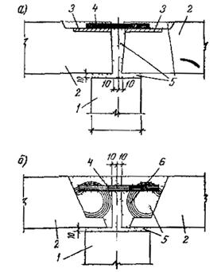
Устройство соединений панелей перекрытий с помощью:
а) закладных деталей; б) монтажных петель; 1 - панель внутренней стены; 2 - панели перекрытия; 3 - закладные детали; 4 - монтажные связи на сварке; 5 - цементный раствор; 6 - монтажные петли
7.20. Плиты лоджий монтируют на цементном растворе и до расстроповки закрепляют постоянными связями в соответствии с проектом. Стыки между торцами панелей перекрытия и плит лоджий тщательно утепляются вкладышами из полистирольного пенопласта ПСБ-С.
После установки наружных панелей вышележащего этажа горизонтальные стыки между плитами лоджий и наружными стенами тщательно уплотняют гернитом на КН-2 и снаружи защищают герметизирующей мастикой АМ-0,5.
7.21. Замоноличивание вертикальных стыков между панелями наружных и внутренних стен производится поэтажно со смонтированного перекрытия после устройства предусмотренных проектом постоянных креплений между смонтированными панелями стен и перекрытия.
Замоноличивание вертикальных стыков между панелями наружных и внутренних стен производится цементным раствором марки 150 на всех этажах. Раствор для замоноличивания вертикальных стыков должен приготавливаться на высокоактивных, быстротвердеющих портландцементах марки 300 и выше. При замоноличивании стыков раствор должен плотно прилегать к граням стыка по всей высоте панелей.
В зимнее время для замоноличивания стыков раствор должен применяться с противоморозными добавками.
7.22. Герметизацию вертикальных и горизонтальных стыков панелей наружных стен следует выполнять в соответствии с рабочими чертежами узлов проекта и требованиями, приведенными в разделе 8 настоящей «Инструкции».
7.23. Трубы стволов мусоропроводов монтируют при помощи специальных захватов поэтажно после постоянного закрепления лестничных площадок.
7.24. Монтаж конструкций на захватке каждого вышележащего этажа, чердака и крыши разрешается производить только после полного окончания установки всех сборных элементов, устройства постоянных креплений и противокоррозионной их защиты, снятия временных креплений, геодезической проверки и составления исполнительной схемы смонтированных конструкций нижележащего этажа и приемки этих работ.
7.25. В целях сокращения сроков возведения многоэтажных жилых домов монтаж металлических конструкций и оборудования лифтов следует производить из укрупненных элементов одновременно с возведением основных строительных конструкций здания.
Работы по монтажу металлических конструкций и оборудованию лифтов должны производиться специализированными бригадами монтажников лифтов треста Мослифтмонтаж. Сроки начала монтажа лифтов должны указываться в проекте производства работ в зависимости от принятого ритма монтажа основных конструкций дома.
7.26. При производстве работ по совмещенному монтажу сборных конструкций дама и металлических конструкций и оборудования лифтов необходимо соблюдать следующие требования:
- монтировать металлоконструкции и оборудование лифтов на захватках, свободных от монтажа сборных конструкций дома, следует по согласованным совмещенным графикам производства общестроительных работ и монтажа лифтов на доме;
- запрещается переносить сборные детали дома, металлоконструкции лифтов, контейнеры и другие грузы над шахтами лифтов, где работают люди;
- три монтаже шахты лифтов сверху необходимо перекрывать инвентарными защитными щитами, переставляемыми краном с этажа на этаж по ходу установки объемных элементов шахт;
- после окончания монтажа элементов шахт производить установку лифтовых кабин в сборе; сразу же после этого монтировать железобетонные плиты перекрытия машинного помещения, а люк и отверстия в них закрывать временными щитами;
- подъемное оборудование лифтов со всеми устройствами до монтажа покрытия машинного помещения следует подавать краном на рабочее место.
Ответственность за соблюдение правил техники безопасности при одновременном монтаже строительных конструкций дома и оборудования лифтов возлагается на линейный инженерно-технический персонал монтажников-строителей и монтажников-лифтовиков согласно действующим правилам.
При производстве работ по совмещенному монтажу конструкций дома и лифтов необходимо руководствоваться «Инструкцией по технике безопасности при монтаже и наладке лифтов» (ВСН 37-74, Главмосстрой, 1975).
7.27. Монтаж конструкций крыши и машинных помещений лифтов выполняется в соответствии с рабочими чертежами и технологическими картами проекта производства работ.
Монтаж основных сборных элементов производится непосредственно с транспортных средств по часовым транспортно-монтажным графикам. Не допускается складирование на приобъектной площадке кровельных панелей с нанесенным безрулонным покрытием.
7.28. Монтаж сборных элементов, а также другие работы на крыше необходимо выполнять в соответствии с технологической последовательностью, предусмотренной проектом производства работ, обращая особое внимание на соблюдение требований техники безопасности.
При монтаже сборных элементов (наружных фризовых панелей, панелей стен машинного помещения, опорных стенок и др.) временное крепление каждого элемента следует производить не менее чем в двух точках при помощи инвентарных монтажных приспособлений в соответствии с технологическими картами проекта производства работ. Сразу же за установкой элементов необходимо устраивать постоянные крепления, предусмотренные проектом.
Геодезические работы и геодезический контроль должны осуществляться в течение всего периода монтажа конструкций крыши и машинных помещений лифтов.
При монтаже особое внимание следует уделять точности соблюдения отметок верхней части опорных элементов для обеспечения проектных уклонов панелей покрытия (см. раздел 5).
Панели покрытия с нанесенным в заводских условиях безрулонным покрытием из мастики ЭГИК (битумно-латексная эмульсия) имеют полную заводскую готовность и не должны подгоняться путем обрубки кромок и ребер, замоноличиваний и местных заделок.
7.29. Работы по монтажу сборных элементов крыши и машинных помещений лифтов производят по захваткам, аналогичным по размерам на жилых этажах.
На каждой из захваток монтаж сборных элементов рекомендуется выполнять в следующей последовательности:
- начинают с установки объемных элементов шахт лифтов;
- устанавливаются по всей длине захватки наружные фризовые панели, выполняются постоянные крепления их к панелям перекрытия, производится изнутри здания обклейка вертикальных стыков воздухозащитной лентой и устанавливаются утепляющие вкладыши;
- монтируются посекционно внутренние стеновые панели, элементы лестницы и плиты перекрытия нижней части машинного помещения лифтов;
- устанавливаются посекционно опорные стенки чердака и вентиляционные блоки.
После тщательной выверки верхних отметок опорных стенок чердака и подачи необходимых деталей, материалов и оборудования (заготовок труб, санитарно-технической арматуры и др.) по всей монтируемой части здания укладываются панели покрытия. Затем монтируются панели наружных стен и другие элементы машинных помещений, и после загрузки оборудования укладываются плиты покрытия машинных помещений лифтов; устанавливаются вентшахты.
7.30. Монтаж наружных фризовых панелей, устройство креплений, заделка и герметизация горизонтальных и вертикальных стыков между ними производится ,в основном аналогично панелям наружных стен жилых этажей. Вертикальные стыки фризовых панелей в верхней их части на высоту 100 мм заделываются цементным раствором.
Временное крепление каждой фризовой панели выполняется двумя подкосами, закрепляемыми за монтажные петли или винтовые захваты, установленные в отверстиях панелей верхнего перекрытия.
Опорные стенки чердака устанавливают на цементном растворе по ранее выполненным маякам, определяющим их монтажный горизонт.
Допуски на монтаж опорных стенок не должны превышать: по смещению осей в плане ±110 мм, по параллельности верхних опорных плоскостей смежных элементов ±3 мм.
Примыкающие к фризовым панелям опорные стенки чердака при монтаже временно закрепляются со стороны свободного торца монтажными опорами и сразу же до их расстроповки приваривается постоянными связями к фризовым панелям. Отдельно стоящие опорные стенки временно закрепляются двумя монтажными опорами, устанавливаемыми по их торцам.
Временное крепление панелей стен верхней части лестнично-лифтовых узлов и машинных помещений лифтов производится с помощью телескопических подкосов, монтажных связей и других монтажных приспособлений в соответствии с проектом производства работ с немедленной установкой постоянных креплений. Отверстия в плитах перекрытий машинных помещений лифтов необходимо сразу же после монтажа их перекрывать инвентарными щитами.
Монтажные приспособления для временного крепления сборных элементов чердака (подкосы, монтажные опоры) разрешается снимать только после постоянного закрепления смонтированных элементов в соответствии с проектом и укладки панелей покрытия и приварки их постоянными связями к примыкающим фризовым панелям.
7.31. Монтаж панелей покрытия производится последовательно по всей длине монтируемой части здания. Посекционно в каждой секции начинают укладку лотковых панелей, затем последовательно монтируют остальные .панели покрытия в направлении от машинного помещения к краям секции, соблюдая принцип монтажа «на кран».
Монтаж лотковых .панелей производится с опиранием на опорные стенки по маякам и на цементном растворе. Остальные панели покрытия монтируются также на цементном растворе, расстилаемом непосредственно перед монтажом по верху опорных стенок, только на ширину опорной площадки укладываемой панели. Перед их укладкой на ребра лотковых панелей необходимо приклеивать на клее-мастике КН-2 гернитовый жгут. Разность отметок верхних граней ребер смежных панелей покрытия не должна превышать 3 мм. После выверки панели покрытия соединяются постоянными связями на сварке с фризовыми панелями.
Стыки между лотковыми панелями и панелями покрытия изнутри заполняются цементным раствором, а снаружи по приклеенному в стыках герниту тщательно герметизируются тиоколовой мастикой слоем 3 мм с последующей окраской БТ-177. Перед герметизацией поверхности стыков должны быть тщательно очищены от грязи, пыли, масляных пятен и высушены.
7.32. Установку водосточных воронок, заделку и герметизацию стыков панелей покрытия между собой и с другими примыкающими элементами следует производить в соответствии с альбомом рабочих чертежей РМ-1582 «Детали заделки стыков мастичной (безрулонной) крыши».
Для заделки и герметизации стыков крыши применяются следующие материалы:
- тиоколовые герметики: АМ-0,5 светлого тона и КБ-05 черного тона; оба герметика двухкомпонентные (ТУ 84-246-76);
- самоклеящаяся лента «герлен», без холста (ТУ 400-1/413-21-79);
- прокладка пористая уплотнительная гернит (ТУ 400-2-12-79);
- рубероид марки Рэ 4-350 (ТУ 21-27-30-72);
- рубероид марок РПМ-300А, РПМ-300Б (ГОСТ 10923-76);
- мастика битумно-резиновая горячая МБР-Г-65 (ТУ 21-27-41-75);
- клей-мастика КН-2 (ТУ 38-00-566-72);
- резина мягкая атмосферостойкая марки РК-1;
- краска БТ-177 (ГОСТ 5631-71);
- минераловатный утеплитель;
- растворители Р-4 и Р-5.
7.33. Заделку и герметизацию стыков крыши необходимо выполнять с соблюдением .следующих требований:
а) поверхность кромок стыка, перед нанесением герметика или наклейкой ленты, очищается металлическими щетками, ветошью и растворителями Р-4 и Р-5;
б) при наклейке ленты «герлен» необходимо соблюдать следующую последовательность:
- рулон ленты освободить от защитной бумаги на 20-30 см, приклеить к кромкам и прикатать к роликам;
- попеременно освобождать ленту от бумаги, приклеивать и прикатывать роликом;
- отмерить ленту до конца стыка, отрезать ее ножом;
в) во избежание загрязнения снимать бумагу с ленты «герлен» на всю длину перед ее наклейкой запрещается.
Верхнюю бумагу с ленты «герлен» снимать непосредственно перед наклейкой полосы рубероида;
г) в соответствия с п. 2.9 главы СНиП II-26-76 тиоколовая мастика должна иметь защитную .покраску краской БТ-177 (ГОСТ 5631-71).
7.34. Водосточные воронки устанавливаются сразу же после монтажа лотковых панелей с отверстиями для водостока. В местах расположения отверстий имеются стальные закладные детали, предназначенные для крепления воронок к панелям.
Монтаж воронки следует производить в следующей последовательности:
- очистить поверхность закладной детали от грязи, пыли, следов ржавчины и масла;
- промыть растворителем Р-4 и Р-5 и просушить;
- покрыть поверхность закладной детали тиоколовой мастикой;
- уложить прокладку из мягкой атмосферостойкой резины РК-1 в обмазке тиоколовой мастикой;
- установить водосточную воронку и сверху места сопряжении тщательно промазать тиоколовой мастикой АМ-0,5;
- закрепить воронку с помощью болтов и шайб так, чтобы обжатие резины было не менее 50 %.
После монтажа воронки место ее сопряжения с панелью необходимо обмазать тиоколовой мастикой АМ-0,5 с последующей окраской БТ-177.
Колпак следует устанавливать на воронку без промежуточной детали.
7.35. Герметизацию стыков между панелями покрытая и с примыкающими элементами производят после их утепления и заделки. Все стыки панелей покрытия между собой с нижней стороны заделываются цементным раствором.
7.36. Стыки между смежными панелями покрытия, а также между двумя смежными лотовыми панелями заделываются следующим образом:
- нижнюю часть стыков сверху уплотняют гернитом, затем стыки на всю высоту заполняют минераловатным утеплителем и сверху стыки уплотняют гернитом в обмазке КН-2. При расширении стыка свыше 40 мм устье стыка необходимо дополнительно уплотнять паклей;
- сверху стыки обклеиваются на горячей битумно-резиновой мастике (МБР-Г-65) лентой герлен (без холста) шириной 200 мм, слоем рубероида марки РПМ-300Б шириной 80 мм и верхним слоем из рубероида марки Рэ 4-350 шириной 180 мм.
Рекомендуется для герметизации стыков крыши применять готовые эти три слоя рубероида и герлена в склеенном виде.
7.37. Стыки между панелями покрытия и верхней частью фризовых панелей, находящихся на одном уровне, заделывают следующие образом:
- стыки на всю их высоту заполняются минераловатным утеплителем и сверху уплотняются гернитом в обмазке КН-2;
- сверху стыки обклеиваются на горячей битумно-резиновой мастике (МБР-Г-65) лентой герлен (без холста) шириной 200 мм, слоем рубероида марки РПМ-300А или РПМ-300Б шириной 80 мм и верхним слоем из рубероида марки Рэ 4-350 шириной 180 мм;
- после обклейки стыков поверху фризовых панелей устраиваются сливы из оцинкованной стали, перекрывающие эти стыки. Сливы закрепляются к деревянным рейкам, заделанным в верхней части фризовых панелей.
7.38. Герметизация стыков в местах примыканий панелей покрытия к выступающим фризовым панелям (парапетам) проектом предусмотрена в двух вариантах: при наличии штрабы на вертикальной поверхности фризов и без штрабы. Эти стыки утепляются минераловатными утеплителями, в верхней части стыка уплотняются гернитом и сверху заделываются цементным раствором с устройством скоса. Затем место примыкания панелей обклеивается на горячей битумно-резиновой мастике (МБР-Г-65) двумя слоями рубероида марок РПМ-300А или РПМ-300Б и сверху наклеивается слой рубероида марки Рэ 4-350.
При наличии горизонтальной штрабы в фризовой панели верхняя часть трех наклеенных слоев рубероида заводится в штрабу и сверху защищается фартуком из оцинкованной стали, закрепляемой в штрабе на гвоздях к заделанному деревянному бруску. Шов между фартуком и верхней частью штрабы снаружи тщательно заделывается тиоколовой мастикой слоем 3 мм с последующей окраской ее краской БТ-177. Сверху фризовых панелей устраивается слив из оцинкованной стали.
При отсутствии штрабы все три гидроизоляционных слоя рубероида приклеиваются к внутренней поверхности выступающей части фризовых панелей и заводятся на их верхнюю грань, где закрепляются на гвоздях к деревянному бруску, заделанному в верхней части фризовых панелей, и сверху перекрываются сливом из оцинкованной стали.
7.39. Стыки между панелями покрытия и установленными на них на цементном растворе вентиляционными шахтами заделываются следующим образом:
- стыки внизу по периметру шахты снаружи уплотняются гернитом, тщательно заделываются цементным раствором с образованием скоса и сверху промазываются горячей битумно-резиновой мастикой (МБР-Г-65);
- внутри шахты, в нижнем горизонтальном стыке по периметру шахты устраивается для отвода атмосферных осадков фартук из оцинкованной стали, закрепляемый оцинкованными гвоздями к деревянным брускам в панелях покрытия.
Вертикальные стыки между вентиляционной шахтой и примыкающей наружной стеновой панелью машинного помещения лифтов уплотняются гернитом на КН-2 и снаружи герметизируются тиоколовой мастикой слоем 3 мм с последующей окраской краской БТ-177.
7.40. Горизонтальные стыки между наружными стеновыми панелями машинных помещений лифтов и панелями покрытия снаружи уплотняются гернитом на КН-2 и сверху герметизируются тиоколовой мастикой слоем 3 мм с последующей окраской краской БТ-177.
7.41. При монтаже конструкций надземной части жилых домов этой серии необходимо руководствоваться типовыми проектами, альбомами рабочих чертежей деталей узлов (см. раздел 2, п. 2.12), проектами производства работ по строительству надземной части и производства геодезических работ, технологическими картами монтажа конструкций надземной части дома (трест Мосоргстрой, арх. № 7261), настоящей «Инструкцией», а также действующими нормативными материалами и инструкциями.
8. ГЕРМЕТИЗАЦИЯ СТЫКОВ ПАНЕЛЕЙ НАРУЖНЫХ СТЕН
Общие положения
8.1. Работы по герметизации стыков должны выполняться в соответствии с рабочими чертежами и настоящими «Указаниями». Основным конструктивным решением горизонтальных и вертикальный стыков панелей наружных стен дома П44/16 является открытый стык. На участках лоджий стыки панелей наружных стен приняты закрытой конструкции в связи с невозможностью выпуска из них дождевой воды поэтажно. Эти стыки с фасада уплотняют прокладкой гернит, устанавливаемой насухо, и герметизируют тиоколовым герметиком АМ-0,5.
8.2. Герметизацию стыков должны выполнять рабочие, прошедшие специальное обучение, имеющие удостоверение на право производства работ.
8.3. Для герметизации стыков и грунтовки кромок панелей должны применяться материалы, удовлетворяющие требованиям действующих технических условий.
Технические характеристики воздухо-защитной ленты (невулканизованная резиновая лента-герволент), гернита, клея и герметика, а также методы их контроля приведены в «Указаниях по герметизации стыков при монтаже полносборных зданий» (ВОН 15-75, Главмосстрой).
8.4. Замена предусмотренных проектом герметизирующих и уплотняющих материалов другими аналогичными материалами допускается лишь по согласованию с организацией-автором проекта (МНИИТЭП).
8.5. Герметизирующие материалы должны храниться в сухих закрытых помещениях с соблюдением требований ТУ на эти материалы и в соответствии с правилами пожарной безопасности. После истечения срока хранения необходимо провести контрольные испытания герметизирующих материалов на соответствие требованиям технических условий. Каждая партия герметизирующих материалов должна иметь паспорт завода-изготовителя.
В зимнее время на строительной площадке гернит, тиоколовый герметик, воздухо-защитная лента, клей, грунтовки должны храниться в будке герметчиков.
8.6 Работы по герметизации стыков следует выполнять в последовательности, предусмотренной типовыми технологическими картами возведения дома П44/16.
Герметизацию стыков в зимних условиях следует выполнять с соблюдением требований, приведенных в пп. 8.17; 8.20; 8.22; 8.34; 8.36; 8.53 настоящей «Инструкции».
8.7. Для производства работ по герметизации стыков рекомендуется применять механизмы, оборудование и инструменты, технические характеристики которых приведены в приложении 13.
Устройство стыков открытой конструкции
8.8. Все работы по устройству горизонтальных и вертикальных стыков «открытой» конструкции при возведении дома П44/16 выполняются с перекрытия без применения навесных площадок. Монтировать панели наружных стен с поврежденными кромками, сколами углов и «зуба» запрещается.
Ремонт и восстановление вертикальных кромок, углов и нижнего зуба производится в заводских условиях на основе полимерцементного состава с выдержкой. В случае возникновения дефектов в процессе транспортировки ремонт производится на стенде монтажной площадки.
8.9. Перед монтажом необходимо проверить качество грунтовки кромок. В случае повреждения грунтовочный слой должен быть восстановлен той же грунтовкой до начала монтажа панели.
8.10. После монтажа панелей наружных стен в пазы вертикальных стыков заводят гофрированную водо-отбойную ленту из алюминиевого сплава (рис. 31). Ленту следует устанавливать так, чтобы крайние гофры были обращены к фасаду в соответствии с проектом.
Водо-отбойная лента должна входить в паз свободно и по длине соответствовать высоте этажа. При зазоре шириной более 20 мм между фиксирующими гранями устанавливаются две ленты, склепанные по краям. Если после установки ленты ее конец выходит за верхнюю грань и мешает установке слива, выступающий конец ленты следует срезать ножовкой.
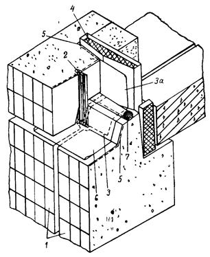
Конструкция открытого стыка:
1 - панели наружной стены; 2 - водо-отбойная лента; 3 - воздухо-защитная лента нижележащего этажа; 3а - воздухо-защитная лента вышележащего этажа; 4 - утепляющий пакет; 5 - грунтовка герметиком на заводе; б - водоотводящий слив; 7 - гернит
8.11. Вертикальные стыки панелей изнутри оклеиваются невулканизованной резиновой лентой-герволент в соответствии с проектным решением. Лента наклеивается с соблюдением требований, приведенных ниже.
8.12 После наклейки ленты в вертикальный стык наклеивается и плотно прижимается утепляющий вкладыш. После монтажа панелей внутренних стен и сварки закладных деталей полость вертикального стыка бетонируется согласно проекту.
8.13. Горизонтальные стыки при монтаже панелей наружных стен уплотняются гернитом с соблюдением требований, приведенных ниже.
Оклейка стыков изнутри резиновой лентой
8.15. В соответствии с проектным решением колодец вертикальных стыков оклеивается изнутри невулканизированной резиновой лентой, которая по своим физико-механическим показателям должна соответствовать требованиям ТУ.
8.16. Для приклейки резиновой ленты следует использовать клей-герметик 51 Г-18, КН-2 или «Хемизоль», физико-механические показатели которых должны соответствовать требованиям ТУ.
8.17. Перед наклейкой резиновой ленты необходимо тыльные грани колодца вертикальных стыков очистить от загрязнений, а в зимнее время - от снега и инея. Очистку рекомендуется выполнять шпателем, волосяными щетками и чистыми обтирочными концами. При этом необходимо следить, чтобы слой грунтовки не имел механических повреждений. После дождя и снегопада необходимо протереть слой грунтовки на кромках сухими, чистыми обтирочными концами.
8.18. Поверхности покрываются двумя слоями клея-мастики с промежутком в 5-10 мин с помощью кисти.
8.19. Положение верхнего края ленты при ее наклейке должно точно соответствовать проекту. Ленту заводят на гребень панели, нижний край ленты стыкуется внахлест не менее чем на 150 мм. Ленту наклеивают не вытягивая и приглаживают от центра к краям в поперечном направлении так, чтобы на ее поверхности не было воздушных пузырей.
8.20. Работы по оклейке стыков резиновой лентой могут производиться при температуре не ниже - 20° С.
8.21. Клей на рабочем месте должен находиться в закрытой металлической таре вместимостью не более 10 л.
8.22. Хранить резиновую ленту и клей необходимо в закрытом сухом отапливаемом и вентилируемом помещении при температуре воздуха +15¸+20 °С.
Уплотнение стыков гернитом
8.23. В .качестве прокладки во всех горизонтальных и «закрытых» вертикальных стыках применяется пористая резиновая прокладка гернит. По своим физико-механическим показателям гернит должен соответствовать требованиям ГОСТа 5.1011-71.
8.24. При применении гернита в качестве уплотняющей прокладки он устанавливается на клее 51Г-18, КН-2 или «Хемизоль», а в качестве подосновы под герметик АМ-0,5 - насухо, с заглублением от поверхности панели не менее чем на 6 мм.
8.25. В горизонтальном стыке наклейку гернита следует производить с перекрытия в следующей технологической последовательности:
- очистить верхние грани ранее смонтированных панелей от пыли, приставшего раствора и других загрязнений, а в зимнее время - от снега и наледи. Очистку рекомендуется выполнять шпателями, волосяными щетками и чистыми обтирочными концами. При этом необходимо следить, чтобы слой грунтовки не имел механических повреждений. После дождя и снегопада необходимо протереть слой грунтовки на кромках сухими, чистыми обтирочными концами;
- покрыть эти грани с помощью кисти клеем-мастикой 51Г-18, КН-2 или «Хемизоль» в местах наклейки гернита;
- наклеить гернит на загрунтованную поверхность и покрыт сверху клеем-мастикой 51Г-18 или КН-2 или «Хемизоль».
8.26. Не допускается растягивать гернит при его установке. Гернитовые прокладки в стыках должны быть поперечно обжать на 30-50 %.
8.27. В вертикальные и горизонтальные стыки гернит следует устанавливать без разрывов, обрезая концы «на ус» и склеивая клеем-мастикой 51Г-18 или КН-2 места соединения и пересечения.
Наращивать гернит по длине следует на расстоянии не мене 0,5 м от мест пересечения горизонтальных и вертикальных стыков. Места склейки следует обматывать изоляционной лентой.
Герметизация стыков на участках лоджий тиоколовым герметиком АМ-0,5
8.28. Для обеспечения водо- и воздухонепроницаемости стыков панелей наружных стен на участках лоджий проектным решением предусматривается их герметизация тиоколовым герметиком АМ-0,5 (ТУ 84-246-75 «Мастики тиоколовые строительного назначения»).
8.29. Вулканизующийся тиоколовый герметик АМ-0,5 - двухсоставной. Герметизирующая паста А-0,5 белого цвета и отверждающая паста М-30 черного цвета поставляются заводом-изготовителем комплектно в весовой дозировке согласно паспорту на каждую партию мастики. Нарушать весовую дозировку, приведенную в паспорте, - запрещается.
8.30. Приготовление герметика (дозирование и перемешивание герметизирующей и отверждающей пасты) должно производиться на месте работ (в будках герметчиков) порциями, которые следует израсходовать в течение 1-3 часов. Перемешивание герметика производится в ведрах - с помощью электросверлилки ИЭ-1017. Перемешивать герметик вручную и разбавлять его растворителем запрещается.
8.31. Перед началом герметизации стыков тиоколовым герметиком АМ-0,5 необходимо произвести осмотр стыков, проверку качества уплотнения зазора гернитом.
8.32. Перед герметизацией тиоколовым герметиком АМ-0,5 кромки панелей должны быть очищены от пыли и загрязнений, а в зимнее время - от снега и наледи. Очистку рекомендуется выполнять шпателями, волосяными щетками и чистыми обтирочными концами. При этом необходимо следить, чтобы слой грунтовки не имел механических повреждений.
8.33. Кромки панелей в момент герметизации должны быть в сухом состоянии. Вести герметизацию во время дождя, снегопада, а также при мокрых кромках панелей запрещается. После дождя и снегопада необходимо протереть слой грунтовки на кромках сухими, чистыми обтирочными концами.
8.34. Температура герметика независимо от температуры наружного воздуха должна быть 15-20 °С. Зимой подогрев ведер с герметиком производится в электрошкафах, которые должны быть установлены в будке герметчиков и на фасадной люльке. Температура в электрошкафу должна быть не выше 30 °С.
8.35. Нанесение тиоколового герметика АМ-0,5 в стык производится с помощью шпателя или пневмошприца с точным соблюдением профиля герметика, указанного в проекте.
Слой герметика не должен иметь разрывов и наплывов, толщина слоя в вертикальных и горизонтальных стыках должна соответствовать проекту. После нанесения поверхность герметика следует выровнять и загладить с помощью шпателя.
8.36. Зимой герметизацию стыков тиоколовым герметиком АМ-0,5 следует выполнять при температуре наружного воздуха до -20 °С.
Контроль качества выполнения работ
8.37. Работы по герметизации стыков должны выполняться под контролем технического персонала монтажного управления и не периодическим контролем лаборатории ДСК с ведением «Маршрутного журнала» и с соблюдением в нем указаний периодичности проверок.
8.38. Пленка грунта должна быть равномерной толщины и од неродного цвета. На загрунтованной поверхности не должно был наплывов, отслоений и незагрунтованных участков панели.
8.39. Качество гернита, резиновой ленты, клеев и герметика АМ-0,5 должно контролироваться центральной лабораторией ДСК согласно ТУ.
8.40. Качество сцепления ленты с поверхностью стыков проверяется выборочно. Практически контроль выполняется методом отрыва ленты от поверхности панелей. При надлежащем оцеплении происходит разрыв по ленте.
8.41. Перед нанесением герметика АМ-0,5 в стык наружным осмотром проверяется обжатие гернита, глубина оставленного для герметика зазора проверяется линейкой с делениями.
8.42. Контроль качества работ по герметизации стыков АМ-0,5 следует осуществлять пооперационной проверкой:
- подготовки поверхностей кромок стыков;
- температуры герметика;
- толщины и непрерывности слоя герметика.
8.43. Выполнение герметизационных работ фиксируется в журнале контроля качества герметизационных работ и отмечается посменно на фасадных схемах герметизации стыков в этом журнале.
Требования безопасности
8.44. При производстве работ по герметизации и оклейке стыков должны соблюдаться требования главы СНиП III-4-80 «Техника безопасности в строительстве», «Указаний по пожарной безопасности для рабочих и инженерно-технических работников Главмосстроя», «Правил пожарной безопасности при производстве строительно-монтажных работ» (утвержденных ГУПО МВД СССР 26 марта 1968 г.) и настоящих «Указаний».
8.45. Оборудование для перемешивания и нанесения герметика должно находиться в исправном состоянии, а именно:
- у преобразователя частоты тока и электросверлилки должны быть проверены зануление корпуса и изоляция проводов;
- в электрошкафах должны быть проверены зануление корпуса, исправность терморегулятора и изоляция проводов;
- у компрессора должен быть отрегулирован предохранительный клапан, проверена правильность показаний манометра.
8.46 Перед началом работы по герметизации стыков на рабочих местах должны быть вывешены плакаты и предупредительные надписи, разъясняющие безопасные способы выполнения работ.
8.47. Рабочие, выполняющие работы по герметизации, должны быть обучены безопасным приемам выполнения работ и иметь соответствующую группу по электробезопасности. До начала герметизации стыков они должны быть проинструктированы по технике безопасности на рабочем месте, работы должны выполнять в соответствии с требованиями инструкции по технике безопасности, разработанной администрацией и профсоюзным комитетом строительной организации.
8.48. Электрооборудование будки герметчиков должно быть заземлено. Включать и выключать его разрешается только дежурному электрику.
8.49. Запрещается пользоваться открытым огнем и курить в местах, где производится разлив, дозировка и перемешивание основной ласты или клея и растворителя.
8.50. Клей 51Г-18, КН-2 или «Хемизоль» и другие виды клея, используемые для приклейки ленты, огневзрывоопасны, и несоблюдение мер пожарной безопасности может привести к тяжелым последствиям.
8.51. К работе по наклейке лент и нанесению мастик, содержащих токсичные и легколетучие огнеопасные вещества, допускаются лица, прошедшие медицинское освидетельствование и обучение, а также проинструктированные о свойствах материалов и мерах пожарной безопасности.
8.52. Каждый рабочий должен знать специальные инструкции по технике безопасности, тушению и предотвращению пожаров.
8.53. Для предотвращения искрообразования запрещается вскрывать металлическую тару с клеем-мастикой 51Г-18, КН-2 и другими видами клея стальными зубилами и молотками. Для отделения прилипшей крышки разрешается использовать деревянную конопатку. В холодное время запрещается подогревать клей и герметик на огне или разбавлять растворителем.
8.54. Тара от клея 51Г-18, КН-2 и «Хемизоль» взрывоопасна и ее необходимо сдавать немедленно после опорожнения; запрещается оставлять опорожненную от клея тару на перекрытии и в будке герметчиков.
9. КРАНЫ, МОНТАЖНАЯ ОСНАСТКА, ПРИСПОСОБЛЕНИЯ И ИНВЕНТАРЬ ДЛЯ МОНТАЖА ЖИЛЫХ ДОМОВ
9.1. Для монтажа сборных элементов конструкций подземной части жилых домов серии П44/16 рекомендуется использовать специальные краны на рельсовом ходу, предназначенные для выполнения работ нулевого цикла и имеющие грузоподъемность 8 т на вылете стрелы 25-30 м, - например, кран КБ-404.
Основные технические показатели крана КБ-404 при различной длине стрелы приведены в табл. 8.
Основные параметры крана КБ-404 на рельсовом ходу, предназначенного для выполнения работ нулевого цикла
|
Длина стрелы, м |
Грузоподъемность, т |
Вылет крюка, м |
Высота подъема крюка, м |
|
36,0 |
7 |
16-25 |
32,2-27,1 |
|
5 |
26-37 |
26,2-7,8 |
|
|
29,8 |
10 |
12-25 |
25,8-16,1 |
|
8 |
26-30 |
15,1-4,8 |
|
|
21,8 |
20 |
8,5-12 |
19,3-18,2 |
|
14 |
13-15 |
17,5-16,3 |
|
|
12,5 |
16-19 |
15,5-12,4 |
|
|
14,7 |
30 |
7 |
11,8 |
|
20 |
8-10 |
11,0-9,8 |
|
|
15 |
11-13,6 |
9,0-6,5 |
9.2. В отдельных случаях, когда кран нулевого цикла на рельсовом ходу полностью не обеспечивает монтаж конструкций по земной части в отдельных частях здания, рекомендуется дополнительно в этих местах применять самоходные пневмоколесные или гусеничные стреловые краны необходимой грузоподъемности (например, краны К-255, РДК-25, Э-1258 и др.).
9.3. Для монтажа сборных элементов конструкций надземной части жилых домов серии П44/16 рекомендуется применять башенные краны, имеющие грузоподъемность не менее 9 т на вылете стрелы 28 м и высоту подъема крюка 58 м, например, краны КБ-503, КБ-504 и др.
В настоящее время Главмосстрой располагает большим количеством башенных кранов КБ-405.12, имеющих грузоподъемность 8-8,5 т на вылете стрелы 20-18 м и высоту подъема крюка 58,9 м, что позволяет обеспечить монтаж сборных конструкций этажей и крыши домов этой серии, за исключением элементов входов в здание. При применении этих кранов необходимо для монтажа элементов входов в здание дополнительно использовать стреловые самоходные краны (например, К-255 и др.).
Основные технические характеристики башенных кранов, рекомендуемых для монтажа конструкций надземной части жилых домов серии П44/16, приведены в табл. 9.
Основные технические характеристики башенных кранов, рекомендуемых для монтажа надземной части жилых домов серии П44/16
|
№ п/п |
Наименование характеристик |
Башенные краны |
||
|
КБ-503 (длина стрелы 30 м) |
КБ-504 (длина стрелы 40 м) |
КБ-405.2 (длина стрелы 25 м) |
||
|
1. |
Грузоподъемность: |
|||
|
а) при горизонтальной стреле, т |
7,5-10 |
8-10 |
6,3-9 |
|
|
б) при вертикальной стреле, т |
9-10 |
8-10 |
8-8,5 |
|
|
2. |
Вылет стрелы: |
|||
|
а) при горизонтальном положении, м |
35-7,5 |
40-7,5 |
- |
|
|
б) при наклонном положении, м |
31-7,1 |
35,2-7,1 |
25-13 |
|
|
3. |
Высота подъема крана: |
|||
|
а) при горизонтальной стреле, м |
53 |
60 |
51 |
|
|
б) при вертикальной стреле, м |
67,5 |
62-77 |
63,4 |
|
|
4. |
Рабочие скорости: |
|||
|
подъема груза, м/мин |
20; 70 |
60; 100; 180 |
20; 34; 59 |
|
|
передвижения грузовой тележки, м/мин |
8,2-27,5 |
9,2-27,5 |
- |
|
|
поворота стрелы, об/мин |
0,6 |
0,58 |
0,6 |
|
|
передвижения крана, м/мин |
14,4 |
18 |
14,5 |
|
|
5. |
Ширина колеи, мм |
7500 |
7500 |
6000 |
|
6. |
Суммарная мощность электродвигателей, кВт |
65,3 |
194 |
58 |
|
7. |
Максимально допускаемое расстояние от оси подкранового пути до габарита здания, мм |
8200 |
8200 |
4700 |
|
8. |
Максимальное давление на колесо, т |
30 |
30 |
26 |
|
9. |
Общая масса крана, т |
145 |
155 |
117 |
Примечание. Кран КБ-504 оборудован грузопассажирским лифтом (подъемником) и двухсторонней радиосвязью.
9.4. Для монтажа сборных элементов конструкций подземной и надземной частей крупнопанельных жилых домов серии П44/16 рекомендуется применять инвентарную монтажную оснастку, грузозахватные приспособления и инвентарь, разработанные трестом Мосоргстрой, СПКТБ «Кассетдеталь» и СКБ «Мосстрой» Главмосстроя, приведенные в табл. 10 и 11 настоящего раздела.
ПЕРЕЧЕНЬ
рекомендуемой монтажной оснастки,
грузозахватных приспособлений и инвентаря для возведения подземной части
16-этажных крупнопанельных жилых домов серии П44/16
|
№ п/п |
Наименование и назначение |
Организация, разработавшая чертежи |
№ чертежа |
Масса 1 шт., кг |
Потребное количество на один монтажный кран, шт. |
|
1 |
2 |
3 |
4 |
5 |
6 |
|
I. Грузозахватные приспособления |
|||||
|
1. |
Универсальное грузозахватное устройство с автоматическим кантователем (грузоподъемностью 8 т) |
трест Мосоргстрой |
6118.А |
618 |
1 |
|
2. |
Строп универсальный (кольцевой) грузоподъемностью 3,2 т, длиной 4 м |
трест Мосоргстрой |
4996М |
6,34 |
2 |
|
3. |
Инвентарная петля грузоподъемностью 2 т |
трест Мосоргстрой |
5365 |
2,1 |
2 |
|
4. |
Универсальная траверса с дистанционной отцепкой крюков грузоподъемностью 10 т |
трест Мосоргстрой |
4047К |
195 |
1 |
|
II. Монтажные приспособления |
|||||
|
1. |
Штанга с осевым зажимом (начальная) |
трест Мосоргстрой |
6265.01 |
4,4 |
18 |
|
2. |
Штанга с осевым зажимом, длиной 3000 мм |
трест Мосоргстрой |
6265.03 |
13,2 |
24 |
|
3. |
Штанга с осевым зажимом, длиной 3600 мм |
трест Мосоргстрой |
6265.05 |
15,8 |
46 |
|
4. |
Штанга для крепления торцевых панелей, длиной 3690 |
трест Мосоргстрой |
6265.41 |
13,75 |
4 |
|
5. |
Подкос телескопический для монтажа панелей стен длиной 2425¸4150 |
трест Мосоргстрой |
4104А |
20,3 |
9 |
|
6. |
Монтажная связь для временного крепления панелей внутренних и наружных стен |
трест Мосоргстрой |
5502 |
6,6 |
36 |
|
7. |
Инвентарная петля для монтажной связи |
трест Мосоргстрой |
5671 |
5,1 |
18 |
|
8. |
Струбцина для крепления наружных панелей, зев. 340-460 мм |
трест Мосоргстрой |
4110Д |
6,9 |
16 |
|
9. |
Подставка монтажника |
трест Мосоргстрой |
3229К |
6,8 |
4 |
|
10. |
Шаблон для регулировки размеров штанг |
трест Мосоргстрой |
6265.47 |
51,4 |
1 |
|
11. |
Рейка навесная с уровнем для проверки вертикальности панелей |
СПКТБ «Кассетдеталь» |
ОР-7063 |
5,5 |
1 |
|
12. |
Контейнер для складирования монтажной оснастки |
трест Мосоргстрой |
1818М |
116 |
2 |
|
III. Инвентарь и приспособления |
|||||
|
1. |
Склад-пирамида для складирования панелей |
трест Мосоргстрой |
3942Б |
2096 |
3 |
|
2. |
Лестница высотой 1,2 м для производства складских операций |
трест Мосоргстрой |
501А |
14,5 |
2 |
|
3. |
Вышка прожекторная поэтажная |
трест Мосоргстрой |
1131А |
250 |
2 |
|
4. |
Лестница для подъема на следующий этаж |
трест Мосоргстрой |
1644А |
24 |
1 |
|
5. |
Ящик-контейнер для раствора (металлический) емкостью 0,28 м3 |
трест Мосоргстрой |
3182 |
54 |
6 |
|
6. |
Ящик-контейнер для раствора (деревянный) для работ в зимних условиях вместимостью 0,3 м3 |
трест Мосоргстрой |
6500 |
155 |
6 |
|
7. |
Ларь для закладных деталей на 10 отсеков |
трест Мосоргстрой |
1164М |
150 |
2 |
|
8. |
Ящик для хранения инструмента |
трест Мосоргстрой |
1164МА |
125,3 |
2 |
|
9. |
Ящик-контейнер для сыпучих материалов (песок и др.) вместимостью 3,1 м3 |
трест Мосоргстрой |
1629 |
593 |
1 |
|
10. |
Ларь для хранения вяжущих материалов |
СПКТБ «Кассетдеталь» |
551 |
537 |
1 |
|
11. |
Переносной сварочный пост |
трест Мосоргстрой |
2250 |
532 |
1 |
|
12. |
Емкость для жидкостей |
СПКТБ «Кассетдеталь» |
791 |
480 |
1 |
|
- опора для емкости |
СПКТБ «Кассетдеталь» |
11538 |
156 |
1 |
|
|
13. |
Контейнер вместимостью 1 м3 для бетона, песка и др. |
СКБ «Мосстрой» |
1045.36 |
307 |
2 |
|
14. |
Инвентарное ограждение путей крана |
трест Мосоргстрой |
7453А |
1 п.м. - 16,5 |
100 п.м. |
Примечания: 1. Приведенный перечень оснастки, грузозахватных приспособлений и инвентаря при привязке проекта производства работ к конкретному объекту следует корректировать с учетом модернизации существующих и выпуска новых монтажных и других приспособлений.
2. Новые типы приспособлений, не прошедшие производственных испытаний и приемки, не должны допускаться к эксплуатации.
Перечень монтажной оснастки, грузозахватных приспособлений, тары и инвентаря для возведения надземной части 16-этажных крупнопанельных жилых домов серии П44/16
|
№ п/п |
Наименование и назначение |
Организация, разработавшая чертежи |
№ чертежа |
Масса 1 шт., кг |
Потребное количество на монтажную бригаду, обслуживаемую одним башенным краном |
|
1 |
2 |
3 |
4 |
5 |
6 |
|
I. Складской инвентарь |
|||||
|
1. |
Склад-пирамида для складирования панелей |
трест Мосоргстрой |
3942Б |
2096 |
4 |
|
2. |
Лестница для производства складских операций высотой 1,2 м |
трест Мосоргстрой |
501А |
14,5 |
2 |
|
3. |
Шкаф для хранения 8 баллонов с ацетиленом |
СКБ «Мосстрой» |
2881 |
464 |
1 |
|
4. |
Шкаф для хранения 6 баллонов с кислородом |
СКБ «Мосстрой» |
2880 |
424 |
1 |
|
II. Тара, контейнеры, лари |
|||||
|
5. |
Ящик-контейнер для раствора (металлический) емкостью 0,28 м3 |
трест Мосоргстрой |
3182 |
54 |
6 |
|
6. |
Ящик-контейнер для раствора (деревянный) для работ в зимних условиях вместимостью 0,3 м3 |
трест Мосоргстрой |
6500 |
155 |
6 |
|
7. |
Ящик-контейнер для хранения инструментов |
трест Мосоргстрой |
1164МА |
125 |
2 |
|
8. |
Емкость для жидкостей вместимостью 3,3 м3 с опорой для перемещения |
СПКТБ «Кассетдеталь» |
791 11538 |
480 156 |
2 2 |
|
III. Грузозахватные приспособления |
|||||
|
9. |
Универсальное грузозахватное устройство с автоматическим кантователем |
трест Мосоргстрой |
6118.А |
618 |
1 |
|
10. |
Запасные изделия из стального каната к универсальному устройству с автоматическим кантователем: |
||||
|
канат полиспаста диаметром 15 мм, длиной 9,25 м |
трест Мосоргстрой |
6118.30 |
по потребности |
||
|
строп диаметром 16,5 мм, длиной 6,8 м |
трест Мосоргстрой |
6118.42 |
по потребности |
||
|
строп длиной 12 м |
трест Мосоргстрой |
6118.52 |
по потребности |
||
|
11. |
Инвентарная петля грузоподъемностью 3 т |
трест Мосоргстрой |
7223 |
4 |
3 |
|
12. |
Универсальная траверса с дистанционной отцепкой крюков грузоподъемностью 10 т |
трест Мосоргстрой |
4047К |
195 |
1 |
|
13. |
Строп универсальный (кольцевой) грузоподъемностью 3,2 т, длиной 4 м |
СКБ «Мосстрой» |
4996М |
6,3 |
2 |
|
14. |
Грузозахватное приспособление для монтажа лестничных маршей (вилочный захват) |
СПКТБ «Кассетдеталь» |
ОР-5230 (В.3-1) |
37 |
1 |
|
15. |
Грузозахватное приспособление для погрузки и разгрузки асбестоцементных труб (труб мусоропровода) |
СПКТБ «Кассетдеталь» |
ОР-5418 |
80 |
1 |
|
16. |
Захват для асбестоцементных труб мусоропровода |
СКБ «Мосстрой» |
4916 |
11 |
1 |
|
IV. Монтажные приспособления |
|||||
|
17. |
Подкос для монтажа панелей наружных стен |
трест Мосоргстрой |
4879 |
11,4 |
46 |
|
18. |
Подкос телескопический для монтажа панелей стен длиной 2425¸4150 |
трест Мосоргстрой |
4104А |
20,3 |
4 |
|
19. |
Захват для подкосовых струбниц |
СПКТБ «Кассетдеталь» |
11974 |
44,2 |
25 |
|
20. |
Монтажная опора для панелей внутренних стен |
трест Мосоргстрой |
5766 |
16,6 |
21 |
|
21. |
Монтажная связь для временного крепления панелей внутренних и наружных стен |
трест Мосоргстрой |
5502 |
6,6 |
18 |
|
22. |
Стойка крепления перегородок толщиной 80 мм |
трест Мосоргстрой |
1631УД |
15,4 |
12 |
|
23. |
Инвентарная петля для монтажной связи |
трест Мосоргстрой |
5671 |
5,1 |
10 |
|
24. |
Зажим для крепления внутренних стеновых панелей к торцевым наружным стеновым панелям |
трест Мосоргстрой |
5670 |
8,4 |
2 |
|
25. |
Струбцина для монтажа панелей (зев. 180¸300 мм) |
трест Мосоргстрой |
4626А |
4,85 |
2 |
|
26. |
Струбцина для монтажа панелей (зев. 230¸350 мм) |
трест Мосоргстрой |
4638А |
8,5 |
2 |
|
27. |
Подкос для временного крепления наружных стеновых панелей лестнично-лифтового узла |
СПКТБ «Кассетдеталь» |
9494 |
13,5 |
4 |
|
28. |
Штанга-фиксатор для временного крепления внутренних стеновых панелей (длиной 1640¸1660) |
СПКТБ «Кассетдеталь» |
10182 |
16 |
4 |
|
29.* |
Приспособление для временного крепления электропанелей ЭБ-12 |
«Кассетдеталь» |
10847 |
4,1 |
2 |
|
V. Инвентарь для производства работ |
|||||
|
30. |
Лестница для подъема на следующий этаж высотой 2,85 м |
трест Мосоргстрой |
1644А |
24 |
2 |
|
31. |
Монтажный столик высотой 1,5 м с откидным ограждением для строительно-монтажных и сварочных работ |
СПКТБ «Кассетдеталь» |
ОР-4713МТ |
37,4 |
2 |
|
32. |
Столик стремянка для разделки внутренних стыков высотой 0,72-0,87 м |
трест Мосоргстрой |
2577Е |
12,5 |
3 |
|
33. |
Передвижной столик с ограждениями для расшивки швов под балконными плитами и лоджиями |
трест Мосоргстрой |
2708МС |
29,4 |
2 |
|
34. |
Навесная универсальная площадка для обработки фасадов |
трест Мосоргстрой |
4266 |
2450 |
1 |
|
35. |
Контейнер для подъема и подачи на рабочее место 4 баллонов с газом |
СКБ «Мосстрой» |
2569 |
149 |
1 |
|
36.* |
Вышка прожекторная поэтажная |
СПКТБ «Кассетдеталь» |
11372 |
1510 |
2 |
|
37.* |
Переносной сварочный пост |
трест Мосоргстрой |
2250 |
532 |
1 |
|
VI. Временные ограждения и опалубки |
|||||
|
38.* |
Временное ограждение лестничных площадок и маршей |
СПКТБ «Кассетдеталь» |
11371 |
24 |
4 |
|
39.* |
Временное ограждение монтажных зон |
СПКТБ «Кассетдеталь» |
7947А |
1 комплект 190 |
2 комплекта |
|
40.* |
Инвентарное ограждение путей башенного крана |
трест Мосоргстрой |
7453А |
1 п.м. 16,5 кг |
31 стойка |
|
41.* |
Временное ограждение ЛП1260 |
СПКТБ «Кассетдеталь» |
10849 |
22 |
4 |
|
42.* |
Приспособление для монтажа ограждения лоджий |
СПКТБ «Кассетдеталь» |
10848 |
6,5 |
4 |
|
43.* |
Дверка временная в ограждении лоджий |
СПКТБ «Кассетдеталь» |
11511 |
16 |
1 |
|
44.* |
Защитный настил для закрытия проема лифтовой шахты |
СПКТБ «Кассетдеталь» |
ОР-5664 |
460 |
2 |
|
45.* |
Щит для закрытия проема в лестничной площадке |
СПКТБ «Кассетдеталь» |
10853 |
9,3 |
4 |
|
46.* |
Щит для закрытия проема ЛП 1222-1 |
СПКТБ «Кассетдеталь» |
10852 |
12,5 |
2 |
|
47.* |
Защитный настил для закрытия проемов блоков дымоудаления КБ-1-1 |
СПКТБ «Кассетдеталь» |
10851 |
36 |
4 |
|
48.* |
Комплект опалубки для заделки потолочных стыков |
СПКТБ «Кассетдеталь» |
11303 |
21 |
6 |
|
49.* |
Комплект опалубки для бетонирования вертикальных стыков панелей наружных стен |
СПКТБ «Кассетдеталь» |
11302 |
24,5 |
6 |
Примечания: 1. Звездочкой (*) отмечены новые приспособления, которые должны пройти производственные испытания и приемку.
2. Новые типы приспособлений, не прошедшие производственных испытаний и приемки, не должны допускаться к эксплуатации.
10. ПРОИЗВОДСТВО МОНТАЖНЫХ РАБОТ В ЗИМНИХ УСЛОВИЯХ
10.1. Монтаж дома в зимних условиях при среднесуточной температуре ниже +5° и минимальной суточной температуре ниже 0° должен производиться в соответствии с указаниями настоящего раздела.
Температура наружного воздуха в данном климатическом районе, при которой следует прекратить производство работ на открытом воздухе или организовать перерывы для обогревания рабочих, устанавливается Московским городским исполкомом Совета депутатов трудящихся.
10.2. Бетонирование ростверка должно выполняться в соответствии с требованиями СНиП III-15-76 «Бетонные и железобетонные конструкции монолитные. Правила производства и приемки работ» и ГОСТ 7473-76.
Монолитные железобетонные ростверки рекомендуется бетонировать методом ускоренного термоса и безобогревным методом с применением химических добавок в бетоне. При всех методах. бетонирования рекомендуется изготовлять бетон на портландцементе марки 300 и выше.
10.3. Бетонирование методом ускоренного термоса должно выполняться в соответствии с требованиями «Указания по технологии бетонирования безобогревным способом монолитных железобетонных конструкций с применением ускоренного термоса - ВСН 115-75 Главмосстроя.
10.4. При бетонировании безобогревным способом следует выполнять требования «Руководства по производству бетонных работ» (М., Стройиздат, 1975) и ВСН 162-79 Главмосстроя.
10.5. Монолитные и сборно-монолитные железобетонные конструкции цокольного и типовых этажей должны быть возведены в соответствии с требованиями глав СНиП III-16-80 и СНиП III-15-76 и рекомендациями «Руководства по производству бетонных работ» Госстроя СССР (М., Стройиздат, 1975) и «Руководства по электротермообработке бетона» НИИЖБа (М., Стройиздат, 1974), а также с требованиями норматива ВСН 159-81 Главмосстроя.
Необходимо учесть, что согласно ВСН 32-77 Госгражданстроя возведение зданий высотой более 5 этажей при отрицательных температурах допускается только на растворах с противоморозными добавками.
10.6. В зимних условиях монтаж элементов должен выполняться комбинированным или безобогревным способом с применением в растворе и бетоне противоморозных добавок нитрита натрия, нитрата натрия и сигмана согласно требованиям ВСН 159-81 Главмосстроя.
Монтаж каждого последующего этажа может быть разрешен после достижения раствором и бетоном в горизонтальных и вертикальных стыках нижнего этажа прочности, указанной в проекте.
10.7. Если нарастание прочности раствора и бетона в конкретных температурных условиях не обеспечивает принятого темпа монтажа, необходимо применять комбинированный метод.
Комбинированный способ монтажа заключается в применении раствора с указанными добавками в сочетании с электропрогревом или электрообогревом традиционными способами или с помощью греющих кабелей типа КСОП или ВКМС с термостойкой изоляцией, закладываемых в опалубку вертикальных стыков панелей и в горизонтальные стыки без извлечения. При комбинированном способе введение добавок в раствор сохраняет его подвижность на морозе, а работа нагревателей необходима при среднесуточной температуре воздуха ниже -20°¸-25 °С для достижения раствором и бетоном требуемой прочности.
10.8. Растворы следует применять марки 150 для всех этажей, при этом повышение марки раствора с противоморозными добавками на ступень необходимо только при среднесуточной температуре ниже - 20 °С.
Раствор с противоморозными добавками при укладке в стыки должен иметь температуру не ниже +5 °С, для чего ящики для раствора должны быть оборудованы деревянными крышками.
Не допускается укладка раствора в стыки со снегом и наледью на поверхностях бетона. Для предохранения поверхностей бетона от снега и наледи стыки должны быть защищены переносными щитами или рулонными материалами с пригрузом (рубероид, пергамин и т.п.).
В случае образования наледи и снега в стыках, поверхности бетона следует тщательно очищать металлическими щетками или скребками. Запрещается отогревать поверхности бетона паром или горячей водой.
10.9. Нарастание прочности раствора и цементно-песчаной пасты в горизонтальных и вертикальных стыках должны соответствовать данным табл. 12.
Монтаж выше 5 этажа и каждых последующих двух этажей разрешается авторским надзором в журнале производства работ.
|
Монтируемый этаж |
Требуемая прочность раствора (бетона) |
|||||
|
этажи |
||||||
|
техническое подполье и 1 |
2 и 3 |
4 и 5 |
6 и 7 |
8 и 9 |
10 и 11 |
|
|
6-7 |
40 |
|||||
|
8-9 |
60 |
40 |
||||
|
10-11 |
70 |
60 |
40 |
|||
|
12-13 |
90 |
90 |
60 |
40 |
||
|
14-15 |
120 |
90 |
90 |
60 |
40 |
|
|
16 и крыша |
120 |
120 |
90 |
90 |
60 |
40 |
10.10. В соответствии с табл. 12 прочность раствора вертикальных и горизонтальных стыков должна контролироваться перед монтажом всех этажей, начиная с 6-го, поэтому количество серий образцов (в серии 3 образца-куба с ребром 7,07 см) должно соответствовать числу определений прочности по вышеупомянутой таблице, т.е. в техническом подполье и на 1 этаже число серий равно 6, на 2 и 3 - 5, на 4 и 5 - 4, на 6 и 7 - 3, на 8 и 9 - 2, на 10 и 11 - 1. Кроме того, для определения прочности раствора в 28-дневном возрасте на каждом этаже, кроме верхних 5, следует 1 серию держать в тех же условиях, что и конструкция, и 1 серию в нормальных условиях. Общее количество серий для определения прочности раствора составит: в техподполье и на 1-м этаже - 8 серий (24 куба*), на 2-3 этажах - 7, на 4-5 этажах - 6, на 6-7 этажах - 5, на 8-9 этажах - 4, на 10-11 этажах - 3, - всего 99 кубов (табл. 13).
|
№ п/п |
Группа этажей |
Количество контрольных кубов |
Всего кубов |
|
|
на этажах |
для определения марочной прочности |
|||
|
1. |
Техническое подполье и 1 |
18 |
6 |
24 |
|
2. |
2 и 3 |
15 |
6 |
21 |
|
3. |
4 и 5 |
12 |
6 |
18 |
|
4. |
6 и 7 |
9 |
6 |
15 |
|
5. |
8 и 9 |
6 |
6 |
12 |
|
6. |
10 и 11 |
3 |
6 |
9 |
|
ВСЕГО |
63 |
36 |
||
10.11. Сварку малоуглеродистых сталей (ст. 3) допускается производить при температуре не ниже -30 °С, при температуре ниже -20 °С и ветре место сварки и сварщика защищать временным укрытием. Силу тока повышать пропорционально понижению температуре, начиная с -20 °С, с тем, чтобы при температуре -30 °С сила тока была повышена на 10 %.
10.12. Работы по антикоррозийной защите сварных соединений в зимних условиях производить в соответствии с «Указаниями по восстановлению после сварки противокоррозионной защиты стальных связей панелей комбинированным покрытием» - ВСН 106-75 Главмосстроя, а также в соответствии со СНиП 11-28-73* «Защита строительных конструкций от коррозии» и ВСН 141-77 Главмосстроя.
___________
* Одна серия хранится в нормальных условиях, остальные - в условиях работы конструкции.
10.13. При безобогревном монтаже здания отпускную прочность бетона панелей внутренних стен, несущих наружных панелей и панелей перекрытий следует принимать для 1-5 этажей - 85 % от проектной марки бетона, для остальных - 70 %, при этом для 12-16 этажей от марки бетона 200. Завод- изготовитель должен гарантировать приобретение бетоном марочной прочности через 28 суток твердения в условиях монтажа здания. При невозможности создания условий для роста прочности бетона на морозе отпускная прочность бетона должна быть не ниже 85 % марки.
Для обеспечения необходимого нарастания прочности бетона изделий и раствора в стыках, а также для производства штукатурных работ по отработке сопряжении между сборными элементами на ранее смонтированном этаже следует организовать временный обогрев с помощью калориферов, воздуходувок и других источников тепла. Штукатурные работы должны производиться только при положительной температуре в помещениях. Для сохранения тепла в помещениях открытые проемы в стенах и перекрытиях должны быть утеплены.
10.14. Отпускная прочность бетона изделий определяется по результатам испытаний не менее трех или двух контрольных кубов размером 15´15´15 см, прошедших тепловую обработку вместе с изделиями; сразу после тепловой обработки кубы распалубливаются и испытываются после 4-часового остывания в условиях, аналогичных условиям выдерживания изделий в цехе. Если после тепловой обработки изделия выдерживаются в цехе (при положительной температуре) более 4 часов, то соответственно отдаляется срок испытания контрольных кубов, но не более чем на 24 часа после окончания тепловой обработки.
Разрешается принимать контрольные кубы меньшего размера, определяя переводной коэффициент к кубам 15´15´15 опытным путем или принимая его по табл. 1 ГОСТ 10180-74 «Бетон тяжелый. Методы определения прочности».
Допускается контролировать отпускную прочность изделий неразрушающими методами в соответствии с ГОСТ 10180-74 «Бетон тяжелый. Методы определения прочности», ГОСТ 17624-72 «Бетоны тяжелые и легкие. Ультразвуковой метод определения прочности» и ГОСТ 21217-75 «Бетоны. Контроль и оценка прочности и однородности с применением неразрушающих методов».
10.15. В случае обнаружения на 1-5-м этажах разброса более 15 % от средней величины прочности раствора, отобранного из швов, необходимо на 1-5-м этажах обеспечить к началу монтажа 6-10-го и последующих этажей обогрев воздуха с целью достижения раствором необходимой прочности согласно табл. 12.
10.16. Для производства внутренних общестроительных и специальных работ на монтируемом корпусе необходимо обеспечить поэтажный пуск постоянной системы отопления: на 1-5-м этажах при монтаже 10-го этажа, на 6-10-м этажах - при монтаже элементов 16-го этажа, чердака и крыши.
Во избежание теплопотерь должны приниматься меры по сохранению тепла в отапливаемой части здания: утеплить входы и установить плотно закрывающиеся двери, изолировать техническое подполье от надземной части здания, утеплить переходы, утеплить перекрытие над обогреваемым верхним этажом (например, цементным фибролитом в один слой) и др.
11. ОБЕСПЕЧЕНИЕ БЕЗОПАСНОСТИ ПРИ МОНТАЖЕ КРУПНОПАНЕЛЬНЫХ ЖИЛЫХ ДОМОВ СЕРИИ П44/16
11.1. При монтаже многоэтажных крупнопанельных жилых домов из унифицированных изделий единого каталога необходимо особое внимание обращать на соблюдение правил техники безопасности. При этом следует руководствоваться:
- главой СНиП III-4-80 «Техника безопасности в строительстве» (ввод в действие с 1 января 1981 г.);
- «Правилами устройства и безопасной эксплуатации грузоподъемных кранов», Госгортехнадзор СССР, 1970;
- «Правилами устройства и безопасной эксплуатации лифтов», Госгортехнадзор СССР, 1972;
- требованиями настоящей «Инструкции»;
- проектом производства работ;
- инструкциями по технике безопасности по производимым работам;
- картами безопасности труда рабочих-монтажников в период монтажа надземной части крупнопанельных жилых домов из изделий единого каталога, трест Мосоргстрой, 1980.
11.2. Проект производства работ должен содержать конкретные технические решения и основные организационные мероприятия по обеспечению безопасности производства работ и санитарно-техническому обслуживанию работающих в соответствии с главой СНиП III-4-80, приложение 8 «Состав и содержание основных решений по технике безопасности в проектах производства работ (ППР)».
11.3. Монтаж крупнопанельных жилых домов необходимо вести в строгом соответствии с проектом производства работ, содержащим решения по технике безопасности и производственной санитарии, включая:
- организацию рабочих мест, проходов и проездов;
- последовательность технологических операций;
- методы и приспособления для безопасной работы монтажников;
- расположение, зоны действия и опасные зоны монтажных механизмов;
- временное освещение строительной площадки, проходов, проездов и рабочих мест;
- ограждение (обозначение) опасных зон;
- состав, количество и расположение бытовых помещений;
- способы складирования и строповки строительных материалов и сборных элементов здания.
Выполнение строительно-монтажных работ без проекта производства работ не допускается.
11.4. Ответственность за соблюдение требований по технике безопасности и производственной санитарии при выполнении строительно-монтажных работ на строительстве жилых домов серии П44/16, возводимых ДСК № 1, возлагается на инженерно-технических работников монтажных потоков.
При появлении условий, угрожающих жизни или здоровью работающих, инженерно-технические работники потока должны приостановить выполнение строительно-монтажных работ на строящемся корпусе, принять меры по устранению возникшей опасности и сделать соответствующую запись в журнале производства работ.
Бригадир (звеньевой) отвечает за обеспечение высокой трудовой дисциплины в бригаде, соблюдение правил внутреннего распорядка и соблюдение требований техники безопасности и производственной санитарии при выполнении строительно-монтажных работ.
11.5. Линейные инженерно-технические работники (мастера, производители работ, старшие производители работ, участковые механики) и другие инженерно-технические работники по списку должностей, утвержденному вышестоящей организацией, обязаны периодически, не реже одного раза в год, проходить проверку знания ими правил техники безопасности и производственной санитарии с учетом характера выполняемых работ.
11.6. На каждой строительной (площадке приказом по монтажному управлению в каждую смену назначаются ответственные за безопасное производство работ по перемещению грузов «ранами из числа инженерно-технических работников и аттестованные такелажники (стропальщики), имеющие удостоверения о проверке знаний по соответствующим разделам правил и инструкций крановщика и стропальщика.
Табличка с фамилиями ответственных лиц должна быть вывешена на объекте на видном месте участка работ.
Обязанности лит, ответственных за безопасное производство работ по перемещению грузов кранами, и стропальщиков при монтаже домов данной серии устанавливаются в производственных инструкциях, которые должны находиться на строящемся объекте.
11.7. К выполнению монтажных работ допускаются лица не моложе 18 лет, имеющие специальность монтажника, прошедшие обучение безопасным методам и приемам этих работ в Учебном комбинате Главмосстроя, сдавшие экзамены и получившие соответствующее удостоверение. До прохождения обучения такие лица к самостоятельной работе не допускаются.
В дальнейшем ежегодно должна проводиться проверка знания рабочими безопасных методов производства работ с последующим продолжением срока действия удостоверения.
Рабочие допускаются к монтажным работам только после прохождения ими инструктажа по безопасности труда с учетом особенностей монтажа домов данного типа.
Повторный инструктаж по безопасности труда необходимо проводить для всех рабочих не реже одного раза в три месяца.
11.8. Машинисты грузоподъемных кранов и подъемников, такелажники (стропальщики), сварщики и транспортные рабочие, обслуживающие грузоподъемные механизмы, должны пройти обучение в Учебном комбинате Главмосстроя по специальным программам, сдать экзамены и иметь соответствующее удостоверение.
Ежегодно они должны проходить переаттестацию по правилам безопасной эксплуатации грузоподъемных механизмов.
11.9. Руководители строительно-монтажных организаций обязаны обеспечить рабочих, инженерно-технических работников и служащих спецодеждой и спецобувью в соответствии с действующими нормами и характером выполняемой работы.
11.10. Все лица, находящиеся на строительной .площадке, обязаны носить защитные каски установленных образцов. Рабочие и инженерно-технические работники без защитных касок и других необходимых средств индивидуальной защиты к выполнению работ не допускаются. На каждом объекте должен быть необходимый запас защитных касок (не менее 10 штук).
11.11. Подготовка и ввод в действие санитарно-бытовых помещений и устройств должна быть закончена до начала основных строительно-монтажных работ на объекте.
11.12. На каждом объекте строительства должны быть выделены помещения или места для размещения средств для оказания первой помощи пострадавшим: аптечек с медикаментами, носилок, фиксирующих шин и др.
11.13. Ограждение строительной площадки, устройство временных дорог, коммуникаций и временных сооружений должны быть выполнены в соответствии с требованиями главы СНиП III-4-80 и проектом производства работ.
11.14. Строительная площадка в населенных местах во избежание доступа посторонних лиц ограждается оплошным забором высотой не менее 2 м. В местах массового прохода людей забор необходимо оборудовать сплошным защитным козырьком под углом 20° к горизонту.
11.15. Строительная площадка, участки работ, рабочие места, проезды и подходы к ним в темное время суток должны быть освещены в соответствии с «Инструкцией по проектированию электрического освещения» строительных площадок и решениями проекта производства работ.
Освещенность должна быть равномерной, без слепящего действия осветительных приспособлений на работающих. Производство работ в неосвещенных местах не допускается, а доступ к ним людей должен быть закрыт.
11.16. У въезда на строительную площадку должна быть установлена схема движения средств транспорта, а на обочинах дорог и проездов - хорошо видимые дорожные знаки.
Скорость движения автотранспорта вблизи мест производства работ не должна превышать 10 км/час на прямых участках и 5 км/час на поворотах.
11.17. Проезды, проходы и рабочие места необходимо регулярно очищать, не загромождать, а если они расположены вне зданий - посыпать песком или шлаком в зимнее время.
Проходы с уклоном более 20° должны быть оборудованы трапами или лестницами с ограждением.
11.18. До установки постоянных козырьков входы в строящееся здание должны быть защищены сверху оплошным навесом шириной не менее ширины входа и с вылетом от стены здания на расстояние не менее 2 м.
11.19. Для подъема и спуска рабочих на рабочие места при строительстве зданий высотой 25 м и более необходимо применять пассажирские или грузопассажирские подъемники (лифты), которые следует устанавливать до начала монтажа 6-го этажа и наращивать по ходу возведения здания (см. п. 3.20).
11.20. Складирование и хранение материалов и сборных изделий на стройплощадке должно производиться в соответствии с проектом производства работ, требованиями «Указаний по приемке, складированию и хранению основных строительных материалов, изделий и конструкций на приобъектных и базисных складах Главмосстроя» (ВСН 28-66) и настоящей «Инструкции» (п.п. 3.21, 4.10-4.11).
Прислонять (опирать) материалы и изделия к заборам и элементам временных и капитальных сооружений не допускается.
При строповке и расстроповке изделий необходимо пользоваться лестницей высотой 1,2 м для работы на складе (черт. № 501А, Мосоргстрой). Пользоваться приставными лестницами запрещается.
11.21. По периметру строящегося здания необходимо устанавливать зону, опасную для нахождения людей во время перемещения, установки и закрепления сборных элементов и других работ на здании. Ширина этой зоны при высоте зданий до 70 м должна быть не менее 10 м, она должна быть ограждена инвентарными временными ограждениями. На ограждении должны быть вывешены хорошо видимые предупредительные знаки.
Зоны, опасные для нахождения людей во время монтажа, также должны быть ограждены и оборудованы хорошо видимыми предупредительными знаками, а в необходимых случаях должна быть обеспечена возможность подачи предупредительных звуковых сигналов. Места прохода в корпус и к подъемникам ограждаются инвентарными ограждениями с предупредительными знаками.
Установку ограждений должен производить рабочий, специально обученный и назначенный приказом по строительному управлению. Надзор за правильностью установки ограждений должен вести мастер или производитель работ. Всякая возможность нахождения людей в опасных зонах должна быть исключена.
11.22. Проход рабочих в монтируемое здание должен осуществляться только со стороны, противоположной установленным башенным кранам. Все выходы из здания со стороны башенных кранов должны быть закрыты.
Запрещается пребывание людей и проезд автотранспорта в зоне перемещения материалов и изделий башенными кранами.
11.23. Башенные и другие строительные краны, а также подъемники, грузопассажирские лифты и другие грузоподъемные механизмы следует устанавливать в соответствии со стройгенпланом проекта производства работ (см. п.п. 3.19, 3.20).
Краны и грузопассажирские лифты перед эксплуатацией должны быть освидетельствованы и испытаны, должен быть составлен акт в соответствии с требованиями правил Госгортехнадзора: «Правила устройства и безопасной эксплуатации грузоподъемных кранов» и «Правила устройства и безопасной эксплуатации лифтов».
Крюки кранов и грузозахватных приспособлений должны иметь предохранительные замыкающие устройства. На специальных стендах должны быть вывешены типовые схемы строповки основных деталей, разработанные проектом производства работ, а также указан состав стропальщиков и лиц, ответственных за перемещение грузов.
11.24. Подкрановые пути должны быть выполнены в строгом соответствии с проектом производства работ и «Инструкцией по устройству, эксплуатации перебазированию подкрановых путей для строительных башенных кранов» (СН 78-79, Госстрой СССР, 1974). При эксплуатации башенных кранов необходимо ежедневно проверять состояние подкрановых путей и своевременно устранять замеченные неисправности.
Пути башенного крана должны быть заземлены и ограждены инвентарными ограждениями (см. п. 3.22). Ходить по путям категорически запрещается.
11.25. При работе все сигналы машинисту крана должны подаваться только одним лицом - бригадиром монтажной бригады, звеньевым или такелажником-стропальщиком с желтой повязкой на левой руке и в каске оранжевого цвета. Машинист крана должен быть информирован о том, чьим командам он подчиняется. Сигнал «Стоп» подается любым работником, заметившим явную опасность.
Между крановщиком, такелажником и монтажниками должна быть устроена надежная радио- или громкоговорящая связь или же организована сигнализация флажками.
Использование дополнительных промежуточных сигнальщиков для передачи сигналов машинисту не допускается.
11.26. Строповку грузов следует производить специальными грузозахватными средствами или инвентарными стропами, изготовленными по утвержденным чертежам и предусмотренными проектом производства работ.
Грузоподъемность грузозахватных средств, стропов, траверс и др. должна соответствовать массе поднимаемых элементов. Не допускается применение неиспытанных и неисправных грузозахватных приспособлений. Стропы должны быть снабжены крюками соответствующей грузоподъемности с предохранительными замыкающими устройствами. Все грузозахватные приспособления должны быть испытаны, иметь паспорт завода-изготовителя, штамп ОТК и металлическую бирку с указанием номера, грузоподъемности и даты испытания.
На таре должны быть указаны номер, собственная масса, наибольшая масса груза, для транспортировки которого она предназначена, и заводской знак.
В процессе эксплуатации съемные грузозахватные приспособления и тара должны подвергаться техническому осмотру лицом, ответственным за их исправное состояние, и в сроки, установленные требованиями «Правил устройства и безопасной эксплуатации кранов»: для стропов и тары - через каждые 10 дней, для траверс - не реже чем через каждые 6 месяцев.
Результаты осмотра съемных грузозахватных приспособлений и тары необходимо регистрировать в журналах периодического осмотра.
11.27. При разгрузке элементов с транспортных средств шофер обязан выходить из кабины. Запрещается перемещать груз над кабиной шофера.
При разгрузке запрещается перемещать панелевоз после освобождения панелей от средств крепления. При необходимости перемещения панелевоза панели вновь должны быть надежно закреплены.
11.28. При разгрузке элементов такелажник обязан сойти с транспортных средств сразу же после натяжения строп. При этом команду крановщику на подъем элемента он подает, стоя на земле на безопасном расстоянии от транспортных средств.
11.29. При доставке панелей перекрытий на объект в вертикальном положении перевод их в горизонтальное положение производится только с помощью специального грузозахватного устройства с автоматическим кантователем (черт. 6118А, Мосоргстрой). Запрещается кантовать панели перекрытия с помощью обычных строп с опиранием панелей на землю.
При подъеме панелей перекрытия с помощью автоматического кантователя необходима особая осторожность. Такелажник, зацепив крюки кантователя за монтажные петли панели и установленные инвентарные петли-захваты, натягивает с помощью крана стропы, затем до подъема панели, убедившись в правильности строповки, отходит на безопасное расстояние, так как подъем панели производится без остановки, и дает команду на подъем.
11.30. Строповка, перевод из горизонтального в вертикальное положение и монтаж асбестоцементных труб мусоропровода должны производиться с помощью специального захвата. Запрещается производить монтаж труб мусоропровода с помощью строп «на удав».
11.31. Стропальщики (такелажники) перед началом работы обязаны:
- изучить схемы строповки монтируемых строительных деталей и других поднимаемых в процессе работы грузов и в дальнейшем применять в каждом случае соответствующее грузозахватное приспособление;
- проверить исправность грузозахватных приспособлений, тары и наличие на них указаний собственной массы и предельной массы груза, для транспортировки которого они предназначены;
- проверить освещение рабочего места; при недостаточном освещении доложить об этом лицу, ответственному за безопасное перемещение грузов кранами.
Перед каждой операцией по подъему и перемещению груза стропальщик должен лично подавать соответствующий сигнал машинисту крана или сигнальщику, а сам должен выходить из опасной зоны. Затем следует проверить правильность строповки: при необходимости перестроповки груз должен быть опущен.
При обнаружении неисправности крана, подкранового пути, стропов или тары стропальщик обязан немедленно подать сигнал о прекращении подъема или перемещении груза и сообщить об этом машинисту и лицу, ответственному за безопасное перемещение грузов краном.
11.32. Организация рабочих мест при выполнении монтажных и других работ на здании должна обеспечивать безопасность выполнения работ.
Рабочие места должны быть свободными от посторонних предметов и мусора, а в случае необходимости должны иметь ограждения, защитные и предохранительные устройства и приспособления.
Подача материалов, изделий и узлов оборудования на рабочие места должна осуществляться в технологической последовательности, обеспечивающей безопасность работ. Складировать материалы и изделия на рабочих местах следует так, чтобы они не создавали опасности при выполнении работ и незагромождали проходы.
11.33. Смонтированные междуэтажные (кровельные) перекрытия зданий (начиная с перекрытия над первым этажом) должны быть до начала следующих работ ограждены по периметру. При невозможности устройства этих ограждений работы на высоте должны выполняться с использованием предохранительных поясов.
Для ограждений перекрытий следует применять надежные инвентарные временные ограждения, снимаемые по ходу установки панелей наружных стен. Ограждения должны иметь промежуточное ограждение по высоте и бортовую доску высотой не менее 15 см. Перила или тросы ограждений должны выдерживать сосредоточенную нагрузку 70 кг. Установку временных ограждений должны производить рабочие, назначенные приказом по управлению. Во время монтажа и демонтажа ограждений они должны пользоваться предохранительными поясами, закрепляемыми за петли перекрытия.
После установки ограждений надежность и правильность их крепления проверяется мастером или производителем работ. Установленные ограждения перед каждой сменой должны проверяться бригадиром и мастером.
Запрещается выход рабочих за временные ограждения без предохранительного пояса, надежно закрепленного за петли перекрытия или нижний трос ограждения.
11.34. Площадки и марши лестниц, а также лоджии и балконы, используемые для сообщения между смежными секциями, должны иметь постоянные или временные надежные ограждения, устанавливаемые по ходу монтажа.
11.35. По ходу монтажа все проемы в перекрытии, временно оставшиеся незаполненными, должны закрываться инвентарными сплошными щитами или иметь надежно закрепленные временные ограждения по всему периметру.
Шахты лифтов на каждом этаже должны перекрываться инвентарными защитными щитами, переставляемыми краном с этажа на этаж по ходу монтажа объемных элементов шахт.
11.36. При возведении зданий на захватке, где ведутся монтажные работы, не допускается выполнение других работ и нахождение посторонних лиц.
Запрещается выполнять строительно-монтажные работы, которые требуют нахождения людей в одной захватке на этажах (по одной вертикали), над которыми производятся установка и временное закрепление элементов сборных конструкций здания, а также перемещение сборных элементов и оборудования грузоподъемными средствами.
С этой целью входы в секции, над которыми производится монтаж или перемещение грузов кранами, должны закрываться на замок. Сквозные проходы по этажам через лоджии должны быть также закрыты для движения людей в этих секциях.
11.37. Одновременное выполнение монтажных и других строительных работ на разных этажах (по одной вертикали) допускается только в исключительных случаях при наличии между ними надежных (обоснованных соответствующим расчетом на действие ударных нагрузок) междуэтажных перекрытий по письменному распоряжению главного инженера строительного управления после осуществления мероприятий, обеспечивающих безопасное производство работ и при условии пребывания непосредственно на месте работ специально назначенных лиц, ответственных за безопасное производство монтажа и перемещение грузов кранами, а также за осуществление контроля за выполнением крановщиком, стропальщиков и сигнальщиком производственных инструкций по охране труда.
В числе таких мероприятий, обеспечивающих безопасное производство работ, должны быть:
- увеличение по сравнению с нормой запаса прочности тросов грузоподъемных приспособлений;
- прекращение работы крана при силе ветра в 4 балла;
- дополнительное освещение стройплощадки и монтажной зоны.
11.38. Работы, совмещенные с монтажом, разрешается производить только на разных с монтажом захватках, расположенных не по одной вертикали с монтажной зоной, или в разные с монтажом смены. При этом не допускается переносить грузы и выполнять другие транспортные операции над зонами здания, где ведутся внутренние работы.
При одновременной работе нескольких строительных организаций на строящемся объекте генеральный подрядчик обязан с участием субподрядных организаций разработать и по согласованию с ними утвердить график производства совмещенных работ и мероприятия по технике безопасности и производственной санитарии, обязательные для всех организаций, участвующих в строительстве. Контроль за выполнением этого графика и мероприятий возлагается на генерального подрядчика.
11.39. Одновременная работа башенного крана и подъемников на одной захватке запрещается. Подъемники могут работать только на тех захватках, где не ведется монтаж конструкций или перемещение грузов башенным краном.
Сверху мачт подъемников должны быть установлены предупредительные красные сигналы.
Количество и типы подъемников, а также места их установки должны соответствовать проекту производства работ.
11.40. В целях обеспечения безопасных условий монтаж конструкций здания должен выполняться в строгой технологической последовательности, предусмотренной проектом производства работ, с которым ознакомлены технический персонал стройки и рабочие.
При монтаже зданий следует использовать краны, монтажные и грузозахватные приспособления и инвентарь, предусмотренные проектом производства работ (см. раздел 9).
11.41. При монтаже сборных конструкций многоэтажных зданий необходимо выполнять следующие требования:
- перед подъемом сборных элементов проверить надежность закрепления подъемных петель, закладных деталей и исправность изделия в целом. Монтажные петли должны быть очищены от раствора или бетона и при необходимости выправлены без повреждения конструкции. Неисправные изделия, а также изделия с поврежденными петлями к монтажу не допускаются;
- очистку элементов и конструкций от грязи, ржавчины, наледи и т.п. следует производить на земле до их подъема;
- строповку элементов и конструкций следует производить инвентарными стропами, траверсами или специальными грузозахватными устройствами заводского изготовления, предусмотренными проектами производства работ для монтажа жилых домов этих серий (см. раздел 9, табл. 10 и 11);
- не допускается поднимать краном детали, прижатые другими элементами, а также засыпанные снегом, примерзшие к земле или другим сборным деталям; запрещается подтягивать краном сборные элементы перед их подъемом или опусканием;
- после строповки груз необходимо поднять на высоту 20-30 см, проверить равномерность натяжения стропов, убедиться, что груз не может упасть или рассыпаться во время подъема. Только после этой проверки производить подъем на полную высоту;
- при подъеме элементов конструкций расстояние между ними и выступающими частями других смонтированных конструкций или другими предметами должно быть по горизонтали не менее 1 м, а по вертикали - 0,5 м;
- нельзя переносить конструкции и материалы кранами над рабочим местом монтажников, а также над той захваткой, где ведутся другие строительные работы;
- подводить элементы краном к месту монтажа следует с внешней стороны здания. При перемещении элементов и конструкций монтажникам следует находиться вне зоны устанавливаемого элемента и со стороны, противоположной подаче их краном;
- принимать подаваемый элемент можно только тогда, когда он не доходит до места установки на 30 см. Во время приема элемента монтажники не должны находиться между элементом и краем наружной стены;
- устанавливать элементы следует без толчков, не допуская ударов по другим конструкциям;
- при необходимости повторной установки элемента счищать раствор нужно лопатой с длинной рукояткой. Использовать для этой цели кельмы не разрешается;
- освобождать установленные элементы от стропов разрешается лишь после прочного и устойчивого их закрепления (постоянного или временного) не мене чем в двух точках. Категорически запрещается рихтовка и выверка с перемещением стеновых панелей и других устанавливаемых элементов после снятия грузозахватных приспособлений;
- снимать временные крепления с установленных и выверенных элементов можно только после их постоянного закрепления в соответствии с проектом;
- закрепление монтируемых элементов, расстроповку, устройство креплений и заделку стыков следует производить с использованием инвентарных площадок для сварщиков и монтажников. Пользоваться для этой цели приставными лестницами запрещается;
- вслед за временным закреплением монтируемый элементов здания в максимально возможный (короткий срок в соответствии с технологическими картами должно быть произведено постоянное их закрепление связями, предусмотренными конструктивной частью проекта.
Следует обеспечить во всех этажах и (при установке каждого из элементов полное выполнение всех сварочных работ, не допуская электроприхваток, так как сварка во всех узлах является рабочей, но не установочной;
- запрещается класть монтажные приспособления и инструмент на стены или у краев перекрытия;
- не допускается не предусмотренная проектом производства работ промежуточная установка сборных элементов на перекрытие.
11.42. Во время перерывов в работе не допускается оставлять поднятые элементы конструкций и оборудования на весу. Не допускается пребывание людей на элементах конструкций и оборудование во время их подъема, перемещения и установки.
При неисправности крана груз должен быть опущен на землю. В случае невозможности опустить груз место, над которым он находится, необходимо оградить.
11.43. Подача на этажи монтируемого здания всех общестроительных материалов и изделий должна производиться до монтажа панелей перекрытия Подавать грузы кранами в оконные проемы запрещается.
11.44. Рабочие на высоте более 1,0 м (монтажники, сигнальщики, электросварщики, кровельщики и др.) должны работать только в проверенных и испытанных предохранительных поясах и защитных касках.
При выполнении работ на неогражденных площадках (монтаж панелей наружных стен, плит балконов и лоджий, панелей перекрытий, элементов лестниц и лифтовых шахт, элементов чердака, крыши и машинных помещений, устройство креплений, заделка и герметизация стыков и др.), а также при установке постоянных и временных ограждений рабочие с помощью карабина на предохранительном поясе должны прикрепляться к монтажным петлям надежно установленный конструкций здания, к специально натянутому тросу или за предохранительные верхолазные устройства (ПВУ-2 и др.). Места крепления карабинов предохранительных поясов должны быть заранее подготовлены и указаны мастером или производителем работ.
Для обеспечения безопасного производства работ при монтаже сборных элементов конструкций жилых домов этой серии следует руководствоваться «Картами безопасности труда рабочих-монтажников (период монтажа надземной части крупнопанельных жилых домов из изделий единого каталога», разработанных трестом Мосоргстрой.
11.45. Для заделки горизонтальных и вертикальных стыков наружных панелей на фасадах следует пользоваться навесными площадками при герметизации стыков по ходу монтажа этажей или навесными люльками (ЛЭ-30-250, ЛЭ-100-300) при производстве работ по герметизации стыков после окончания монтажа здания.
Навесные площадки и люльки устанавливаются на рабочее место после окончания монтажа и закрепления по проекту панелей перекрытия или покрытия и надежно крепятся к их монтажным петлям. При использовании люлек необходимо руководствоваться «Инструкцией по технике безопасности при работе с навесных электрифицированных люлек».
К работе на навесных площадках и в люльках допускаются специально обученные рабочие, проинструктированные по правилам техники безопасности. Приказом по монтажному управлению назначаются инженерно-технические работники, ответственные за правильную и безопасную работу с навесной площадки или людьми. Перестановка навесной площадки или люльки должна осуществляться в присутствии ИТР. При перемещении навесной площадки нахождение на ней людей, материалов и инструментов категорически, запрещается.
Работа на навесных площадках и люльках разрешается только в защитных касках.
При работе с люльки запрещается производить совмещенные работы над и под люлькой и в местах крепления консолей. Во время работы с людьми дверные и оконные проемы, находящиеся над и под люлькой, должны быть закрыты.
11.46. Монтаж конструкций каждого последующего этажа здания следует производить только после окончания монтажа и надежного закрепления в соответствий с проектом всех элементов конструкций предыдущего этажа.
11.47. Не допускается выполнение монтажных и кровельных работ на высоте в открытый (местах при скорости ветра 15 м/сек и более, при гололеде, грозе или тумане, когда нет видимости в пределах фронта работ.
Работы по перемещению и установке вертикальных панелей и подобных им конструкций с большой парусностью следует прекращать при скорости ветра 10 м/сек и более.
11.48. Запрещается сбрасывать строительный мусор, отходы и материалы с перекрытий через окна, лоджии и балконы, а также с крыши.
Строительный мусор со строящихся зданий следует опускать по закрытым желобам в закрытых ящиках или контейнерах при помощи кранов и подъемников (см. п. 3.27). Нижний конец желоба должен входить в бункер для приема мусора или находиться не выше 1 м над землей. Сбрасывать мусор без желобов и других приспособлений разрешается с высоты не более 3 м. Места, на которые сбрасывается мусор, следует со всех сторон оградить или установить надзор для предупреждения об опасности.
11.49. При электросварочных работах металлические части электросварочного оборудования, а также свариваемые изделия и конструкции должны быть заземлены. Заземление электросварочных установок выполняется до включения их в электросеть. Все элементы установок, находящиеся под напряжением, должны иметь надежные ограждения.
Необходимо соблюдать условия непрерывности и необходимой токопроводящей способности нулевого провода (обратный провод) сварочных аппаратов во избежание прохода электрического тока через стропы и тросы крана. Все стыки обратного провода должны быть надежно соединены и заизолированы.
Производство электросварочных работ во время дождя или снегопада при отсутствии навесов над электросварочным оборудованием и рабочим местом электросварщика не допускается.
11.50. По окончании смены, а также во время перерывов в работе все остатки материалов, приспособлений и инструменты, должны быть убраны с крыши или надежно закреплены.
Элементы и детали кровель, в том числе защитные фартуки, свесы и т.п. следует подавать на рабочие места в заготовленном виде. Заготовка элементов и деталей непосредственно на крыше не допускается.
Запрещается сбрасывать с крыши материалы, отходы и другие предметы.
При работе на краю крыши в случае отсутствия ограждений рабочие должны с помощью предохранительных поясов прикрепляться к надежным конструкциям. Места закрепления предохранительных поясов указываются мастером или производителем работ.
11.51. В зимний период лестничные площадки, марши, междуэтажные перекрытия, проходы, а также инвентарь и приспособления должны быть очищены от снега и наледи. Лестничные марши, площадки, проходы и места работ должны быть посыпаны песком или шлаком. Запрещается удалять снег и наледь горячей водой и паром.
11.52. При приготовлении и применении бетона и раствора с добавками нитрита натрия необходимо руководствоваться требованиями техники безопасности, приведенными в «Указаниях по приготовлению и применению в зимних условиях растворов с добавкой нитрита натрия» (ВСН-42-75, Главмосстрой, 1975) и «Указаниях по приготовлению в зимних условиях бетонов с добавкой витерита натрия» (ВСН-42-75, Главмосстрой, 1975), а также в ВСН-159-79 и ВСН-162-79 Главмосстроя.
Нитрит натрия - ядовитое вещество, попадание кристаллов или водного раствора нитрита натрия в организм человека приводит к отравлению, опасному для жизни. Все работы, связанные с приготовлением, хранением и применением нитрита натрия, необходимо производить в соответствии с требованиями указаний ВСН-41-75, ВСН-42-75, ВСН-159-79 и ВСН-162-79.
На емкости с раствором нитрита натрия должна быть хорошо видна надпись «Не пить - яд!».
Водный раствор нитрита натрия должен храниться в закрытой таре в запираемом помещении во избежание случайного использования раствора.
11.53. Строительная площадка должна быть оборудована необходимыми средствами пожаротушения и предупредительными знаками (плакаты, надписью и др.).
Временные сооружения на территории стройплощадки необходимо располагать в соответствии со стройгенпланом проекта производства работ.
Бытовые помещения необходимо располагать вне зоны работы крана на специально отведенной площадке.
Служебно-бытовые передвижные фургоны следует располагать одиночно или группами, в каждой группе должно быть не более трех фургонов Расстояние между грунтами фургонов должно быть не менее 10 м, а противопожарные разрывы между группами фургонов и другими зданиями - не менее 16 м.
11.54 Горючие и легковоспламеняющиеся жидкости (керосин, бензин и др.) должны храниться в емкостях, закрытых на замок. Емкости должны быть ограждены и находиться от зданий и окладов на расстоянии не менее 20 м.
Баллоны с кислородом и ацетиленом следует хранить раздельно в специальных контейнерах.
Карбид кальция следует хранить только в несгораемых помещениях, имеющих естественную вентиляцию.
Склады кислорода, ацетилена и карбида кальция необходимо располагать не ближе 20 м от строящегося здания или временных сооружений в соответствии со стройгенпланом проекта производства работ.
12 ОСНОВНЫЕ ПОЛОЖЕНИЯ ОПЕРАЦИОННОГО КОНТРОЛЯ КАЧЕСТВА СТРОИТЕЛЬНО-МОНТАЖНЫХ РАБОТ
12.1. Операционный контроль качества строительно-монтажных работ является одним из основных элементов комплексной системы управления качеством строительной продукции на домостроительном комбинате.
12.2. Операционный контроль качества работ осуществляется по «Маршрутному журналу операционного контроля, оценки качества и промежуточной технической приемки отдельных видов работ и конструктивных элементов жилого дома» и предусматривает:
- контроль соответствия выполненных операций проекту и нормативным требованиям, осуществляемый в соответствии с принятой схемой операционного контроля качества (СОКК);
- приемку выполненных работ;
- учет и анализ результатов контроля;
- информацию о качестве работ с указанием выявленных дефектов и их характера;
- подготовку материалов для определения оценки качества продукции и оценки качества труда по результатам контроля.
«Маршрутный журнал» способствует устранению выявленных дефектов, оперативно воздействуя на непосредственных исполнителей.
12.3. «Маршрутный журнал» ведется по строительству каждого дома раздельно на каждый самостоятельный цикл строительства (подземная часть здания, надземная часть здания, отделочные, санитарно-технические, электромонтажные и лифтомонтажные работы, благоустройство и озеленение).
12.4. «Маршрутный журнал операционного контроля» ведется инженерами-контролерами службы управления качеством ДСК. За каждым инженером-контролером по качеству приказом по ДСК закрепляются объекты, на которых ими систематически, в течение всего периода возведения объекта, осуществляется по графику выборочный статистический контроль качества, оценка и приемка выполненных работ.
12.5. С введением на объектах «Маршрутного журнала» исключается необходимость ведения журналов герметизации стыков, сварочных работ и др., так как освидетельствование и приемка этих работ производится по журналу.
12.6. Один из основных документов операционного контроля является карта операционного контроля качества (карта ОКК), которая составляется для каждого вида работ в соответствии со схемами операционного контроля. Она содержит в себе ведомость результатов контроля с перечнем контролируемых параметров, а также поэтажную схему с указанием на ней контролируемых конструктивных элементов.
На схемах карт ОКК инженер-контролер при проведении выборочного операционного контроля отмечает проверенные элементы и выявленные дефекты и знакомит производителя работ с результатами как первичного, так и повторного контроля.
В случае обнаружения инженером-контролером хотя бы одного критического или значительного дефекта им назначается оплошной контроль соблюдения соответствующего нормативного требования по дефектной операции (параметру) на всем этаже здания, о чем делается запись в карте ОКК.
Оформление карты ОКК подписями инженера-контролера и производителя работ производится только после устранения всех критических и значительных дефектов.
12.7. Для принятия своевременных мер воздействия, направленных на повышение качества, инженер-контролер систематически готовит материалы по результатам операционного контроля для проведения анализа причин возникновения дефектов.
12.8. По результатам выборочного операционного контроля качества для определения оценки выполненных работ инженером-контролером рассчитываются два показателя, показатель качества труда и показатель качества продукции.
Показатель качества труда (Кт) есть отношение количества выполненных бригадой нормативных требований и принятых инженерам контролером при первичном контроле (сданных с первого предъявления) к общему контролируемому их количеству.
Показатель качества продукции (Кп) есть отношение количества качественно выполненных параметров, принятых инженером-контролером после повторного контроля, к общему их количеству.
На основании этих показателей по отдельным видам работ определяются показатели качества труда и качества продукции по воем видам работ на этаже, а также комплексный показатель качества части здания или определенного вида работ.
12.9. После оценки и приемки работ маршрутные журналы на самостоятельные циклы строительства специализированными строительно-монтажными организациями передаются генеральной подрядной организации, которая на основании итоговых ведомостей оценки качества работ по каждому циклу строительства составляет заключительную оценочную ведомость и производит расчет комплексной оценки качества объекта в целом.
12.10. Переход от показателей (качества продукции к оценке качества по трехбалльной системе (удовлетворительно, хорошо, отлично) осуществляется на основании принятой для данной строительной организации градации по количественным показателям качества.
Комплексная оценка качества объекта в целом не может быть установлена выше, чем комплексная оценка качества монтажа надземной части, здания.
Полученная оценка учитывается государственной комиссией при приемке дома в эксплуатацию.
12.11. При осуществлении операционного контроля качества строительно-монтажных работ при возведении жилых домов этой серии следует руководствоваться «Временными указаниями по организации операционного контроля качества строительно-монтажных работ в комплексной системе управления качеством на ДСК» (ВСН138-77, Главмосстрой и ГлавАПУ, 1977).
ПРИЛОЖЕНИЯ
Приложение 1
ДЕЙСТВУЮЩИЕ НОРМАТИВНЫЕ
МАТЕРИАЛЫ И ИНСТРУКЦИИ ПО МОНТАЖУ КРУПНОПАНЕЛЬНЫХ ЖИЛЫХ ДОМОВ
(по состоянию на 1961 год)
1. Строительные Нормы и Правила (СНиП):
глава СНиП III-16-80 «Бетонные и железобетонные конструкции сборные», 1981;
глава СНиП III-15-76 «Бетонные и железобетонные конструкции монолитные. Правила производства и приемки работ», 1976;
глава СНиП III-9-74 «Основания и фундаменты», 1974;
глава СНиП III-20-74 «Кровли, гидроизоляция, пароизоляция и теплоизоляция», 1974 (с учетом изменений и дополнений, внесенных в 1976 г.);
глава СНиП III-2-79 «Геодезические работы в строительстве», 1976;
глава СНиП II-28-73* «Защита строительных конструкций от коррозии» 1974 (с учетом изменений и дополнений, введенных в действие с 1 января 1980 г.);
глава СНиП III-4-80 «Техника безопасности в строительстве», 1980.
2. «Руководство по производству бетонных работ», Стройиздат, 1975.
3. «Указания по производству земляных работ на жилищно-гражданском строительстве, осуществляемом организациями Главмосстроя» (ВСН-73-72, Главмосстрой, 1972).
4. «Указания по работам нулевого цикла в жилищном строительстве, осуществляемом организациями Главмосстроя» (ВСН-4-67, Главмосстрой, 1971).
5. «Указания по устройству фундаментов из забивных свай для домов повышенной этажности, возводимых из унифицированных изделий» (ВСН-91-74, Главмосстрой, 1974).
6. «Указания по устройству свайных фундаментов с учетом взаимоотношений строительных организаций Главмосстроя» (ВСН-124-76, Главмосстрой, 1976).
7. «Инструкция по проведению динамических испытаний свай дизельным молотом» (ВСН-56-79, Главмосстрой, 1979)
8. «Указания по технологии бетонирования безобогревным способом монолитных железобетонных конструкций с применением ускоренного термоса» (ВСН-115-75, Главмосстрой, 1975).
9. «Указания по приготовлению и применению в зимних условиях растворов с добавкой нитрита натрия» (ВСН-41-75, Главмосстрой, 1975).
10. «Указания по приготовлению в зимних условиях бетонов с добавкой нитрита натрия» (ВСН-42-75, Главмосстрой, 1975).
11. «Инструкция по применению в тяжелом бетоне комплексных противоморозных добавок на основе жидкого нитрита натрия» (ВСН-162-179, Главмосстрой, 1980).
12. «Инструкция по сварке соединений арматуры и закладных деталей железобетонных конструкций» (СН 383-78, Госстрой СССР, 1978).
13. «Указания по организации монтажа полносборных зданий с транспортных средств» (ВСН-34-68, Главмосстрой, 1969).
14. «Указания по приемке, складированию и хранению основных строительных материалов, изделий и конструкций на приобъектных и базисных складах Главмосстроя» (ВСН-28-66, Главмосстрой, 1967).
15. «Инструкция по производству геодезических работ при строительстве крупнопанельных жилых зданий» (ВСН-23-77, Главмосстрой, 1977).
16 «Правила устройства и безопасной эксплуатации грузоподъемных кранов» (Госгортехнадзор СССР, 1970).
17. Правила устройства и безопасной эксплуатации лифтов (Госгортехнадзор СССР, 1972).
18. «Инструкция по безопасной эксплуатации подвесных люлек» (ВСН-46-70, Главмоcстрой, 1970).
19. «Инструкция по приготовлению и применению в зимних условиях цементных растворов с добавкой нитрата и нитрита-нитрата натрия» (ВСН-140-77, Главмосстрой, 1977).
20. «Инструкция по применению в зимнее время при монтаже домов ДСК-1 оптимальных марок раствора с противоморозными добавками» (ВСН-142-77, Главмоcстрой, 1977).
21. «Инструкция по применению комплексных добавок в цементных растворах при безобогревном монтаже сборных железобетонных конструкций жилых и общественных зданий» (ВСН-159-81, Главмосстрой, 1981)/
22. «Указания по восстановлению после сварки противокоррозионной защиты стальных связей панелей комбинированным покрытием» (ВСН-106-75, Главмосстрой, 1975).
23. «Инструкция по проектированию и производству противокоррозионной защиты стальных связей полносборных жилых, общественных и культурно-бытовых зданий с нормальными температурно влажностными условиями эксплуатации» (ВСН-141-77, Главмосстрой, 1977).
24. «Указания по герметизации стыков при монтаже полносборных зданий» (ВСН-15-75, Главмосстрой, 1976).
25. «Инструкция по технике безопасности при монтаже и наладке лифтов» (ВСН-37-74, Главмосстрой, 1974).
26. «Временные указания по организации операционного контроля качества строительно-монтажных работ в комплексной системе управления качеством на ДСК» (ВСН-138-77, Главмосстрой и ГлавАПУ, 1977).
27 «Карты безопасности труда рабочих-монтажников в период монтажа надземной части крупнопанельных жилых домов из изделий единого каталога» (Мосоргстрой, 1980).
28 «Каталог монтажной оснастки, грузозахватных приспособлений, тары и инвентаря для строительства надземной части дома серии П44/16» (трест Мосоргстрой, 1982).